| 本当は怖い世界の童謡 | |
| 桜澤麻衣 | |
| (2011) | |
本当は怖い世界の童謡
桜澤麻衣
目次
激しく泣く子への憎しみがこめられた「寝かせ歌」
あのことがあった神社では、石段で誰かに足を引っ張られる...
自分の命を顧みずに死力を尽くして腹を叩いた大だぬきの最期
お母さんのあとを影のようについていく女の子
お茶壺道中、粗相があったらたとえ子供でも容赦なく切り捨てよ...
雨乞いの反対、雨を追い払う掃晴娘の悲劇
バラモンのために業火に飛び込んだうさぎの信心
江戸時代にできたわらべ歌の、暗く悲しい秘密
自分の娘を遊女に売って、値切られたことを悔しがる親の業
柳の下で待っていたのは、謎めいたあの少年
炭鉱労働者「カラス」が見せた父親の温情と悲劇
姥捨てに行ったことは誰にも話してはならない...
ロンドン橋が流されなくなったのは、たくさんの犠牲があったから...
マザーグースで伝わる、継母に殺されて鳥になった女の子の歌
シシリア島シラクサの聖女、聖ルチアの血まみれの悲劇
イギリスとスカンジナビアに伝わる童謡の起源
ヨーロッパ中を吹き荒れた黒死病の脅威がユーモラスな歌に
今もイギリスのホテルに残る本物のおじいさんの時計
19世紀にインディアン保留地パイン・リッジを襲った大虐殺の悲劇
ゲットーに送られるユダヤ人への挽歌
ボーデンさんと奥さんを殺したのは誰か、子供たちの歌は知っている
危険な鉄道工事にからだを張った外国人作業員への恐怖の報酬
拷問好きの皇帝に八つ裂きにされたコサックの首領
ハワイ王朝最後の日々を悲しく彩る、先住民族の抵抗
ベトナム戦争中、ソンミ村で起こったことは誰にも話してはならない
はじめに
暗号が隠された「童謡」
情報源だった「民謡」
童話研究家 桜澤麻衣
わらべ歌、子守唄、民謡は世界中のいたるところで口ずさまれています。
日本では外国の民謡を意味する「フォークソング」ですが、その語源が「フォークロア」（民話・伝承）にあることは言うまでもありません。つまり、童謡や民謡には、下敷きになる「昔話」があることが多いのです。昔話というものは、「昔むかしあるところに...」で始まって、「めでたしめでたし」で終わる話も多いのですが、まるで厳しい現実を鏡で映したかのように、不幸で不吉な結末を持つ話もまた、少なくありません。
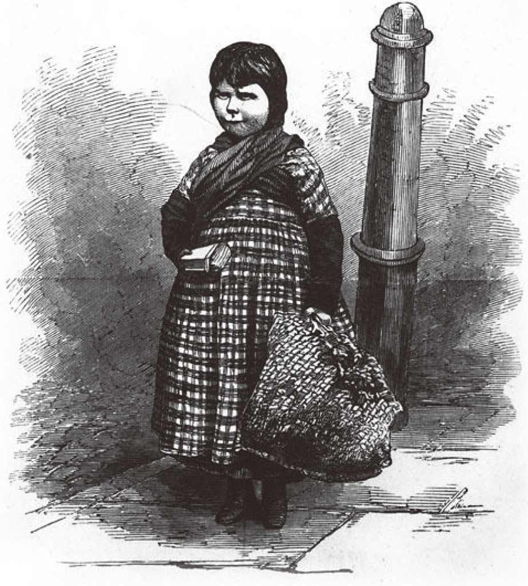
まだ夢いっぱいの子供たちに、なぜ不幸で不吉な話をわざわざ歌にして聞かせるのでしょうか。
昔話というのは、意外と史実が多いものです。
まったく事実のままというのでなくても、現実に起こった事件を元に、枝葉をつけてお話にしている物語がかなりたくさんあります。当時の人々は、見ざる、聞かざる、言わざるが生活の知恵、とわかってはいても、割り切れないこともあったでしょう。
中世や近世の庶民層は、日本でも海外でも、弱者の立場だったし、大きな戦争においては常に「権力者の楯」代わりにいとも簡単に殺されてきました。しかし、それに対して文句を言おうものなら、一家皆殺しにされるのが当たり前のことでした。とはいっても、人間である以上悩みを胸に秘めたまま黙って耐えていくことはできなかったでしょう。信じられないような不幸、災難、不運に見舞われたとき、庶民の「はっきり口にできないつらさ、悲しさ、悔しさ」を、歌に練り込んで次世代に伝えたのではないでしょうか。
大人たちが歌えばかどがたつことでも、子供の口で「童謡」として歌われる場合はもっと安全でした。子供たち自身が歌の意味もわからず、お囃子言葉のように歌っているのを聞いて、大人たちが陰で溜飲を下げる、ということもままあったのかもしれません。
童謡や民謡のひとことひとことを謎解きながらたどるとき、まるで古代の都市の廃墟を探索しているかのような、また古い寺社の石碑を解読しているかのような、わくわくした気分になります。
そこにはときを越えて、いにしえの時代に生きた先人たちが、現代人に語りかける秘密のメッセージが込められている気がしてならないからです。
今回は、日本や海外の童謡や民謡を、様々な角度から検証し、そこから得たインスピレーションで、ホラーを展開してみました。歴史や民俗学に照らして分析したものから、噂や都市伝説を取り入れたものまで、中には多少、想像力が飛躍しすぎたかもしれない、と思う話もあります。
いずれも、奇想天外、フレッシュな味つけが身上です。
心ゆくまで、怖い怖い、極上のエンターテインメントをお楽しみください。
第１章 日本の童謡
激しく泣く子への憎しみがこめられた「寝かせ歌」
江戸子守唄
作詞：不詳
作曲：不詳
♪ ねんねんころりよ おころりよ
ぼうやはよい子だ ねんねしな
ぼうやのお守りは どこへ行った
あの山こえて 里へいった
里のみやげに なにもろうた
でんでん太鼓に 笙の笛
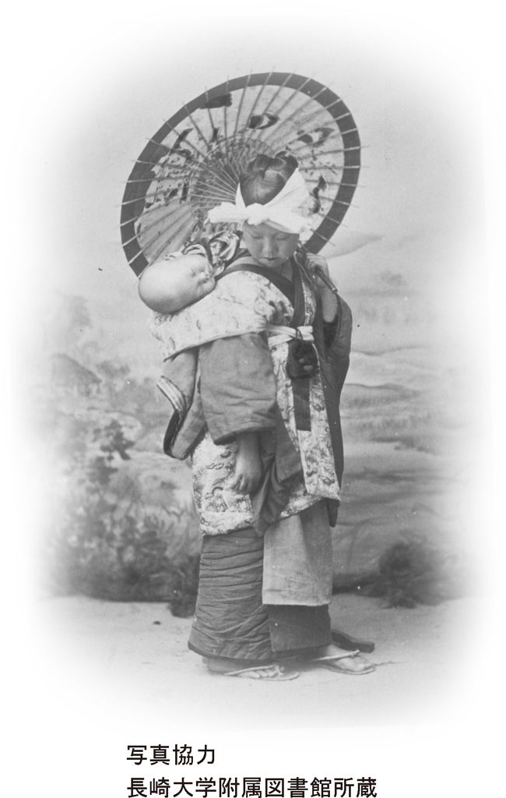
泣き止まない赤ん坊への殺意
少女の両手は、まだ生まれて間もない赤ん坊の首にかかっていた。赤ん坊はあらん限りの力で泣き叫んでいる。昼なお暗い、誰も立ち入ることのない山の小径。赤ん坊の紅潮した頬を涙がつたい、紅葉のような手は空をかきむしるようにバタついている。しかし少女には何も見えていない。赤ん坊の首にかけられた両手に徐々に力が入る。少女の指先が柔らかい皮膚に食い込む。この耳につく泣き声を止めるにはこうするしかない...。少女はぼうっとした頭で、不思議と冷静に考えていた。
９歳になるカヨは、貧しい農家の生まれで、ごく幼い頃から家族と一緒に畑で働く毎日だったが、３カ月ほど前、隣町の庄屋に奉公に出された。朝はまだ暗いうちから起きて水汲みに火おこし、休む間もなく働かされて、与えられるのは粗末な着物にわずかな食糧だけ。それでも故郷の村にいたら家族みんなで飢えて死ぬ。どんなにつらくともそこしか居場所がないことは幼いカヨにもわかっていた。
その日もカヨは泣きやまない旦那さまの赤ん坊を背負って家事をしていたが、あんまり泣きやまないもので、女中頭がカヨに赤ん坊を外へ連れ出すように言ったのだった。
ようやく盆を過ぎ、徐々に涼しくはなっていたが赤ん坊を背負って歩くには暑い。裏山の人目につかぬところで一休みしようとカヨは細い山道を登り始めた。
よく晴れた日で、色づき始めた木々が青空によく映えている。しかしカヨには、景色を楽しむ余裕などない。カヨの耳には忌々しい赤子の泣き声しか聞こえていない。
「この赤ん坊は」
とカヨは思う。
「この赤ん坊は、私の歳になっても故郷の村から引き離されたり、他人の子を背負って朝から晩まで働いたりすることはない。冬は手にあかぎれ作って水仕事をすることもない。それどころか、毎日白いまんまを食って、盆には新しい着物を買ってもらうんだ。なんでこんな子の面倒を私が見なければいけないのか、こんな子供、かわいいと思ったことなど一度もない。ただ黙って寝ていてくれさえすりゃいいのに...」
カヨは山道の脇に切り株を見つけると、腰かけて赤ん坊を背中からおろした。赤ん坊の手のひらは柔らかく、とても小さくて頼りない。自分にもこんなときがあったのだろうか、とカヨは思う。子供のころから毎日力仕事と水仕事をしてきたカヨの手は、皮が厚くなってごわごわとひび割れている。
「ね～んね～ん...ころ～り～よ～...」
カヨはつぶやくように歌いながら赤ん坊をあやした。赤ん坊は泣きやまない。
「ぼう～や～は～よい～こ～だ～...」
よい子？
「こんな苦労知らずの子供がよい子になどなるものか」
カヨは歌うのをやめてしまった。
「耳触りな泣き声！」
カヨの腕は赤ん坊の首に向かって伸びていた。赤ん坊の首にかけられた両手に徐々に力が入る。カヨのひび割れた指先が赤ん坊の柔らかい皮膚に食い込む。
「カヨ」
そのときカヨを呼ぶ声がした。懐かしい声、母さんの声だ。
カヨはハッとして辺りを見渡した。人影はない。赤ん坊は顔を真っ赤にして泣いている。
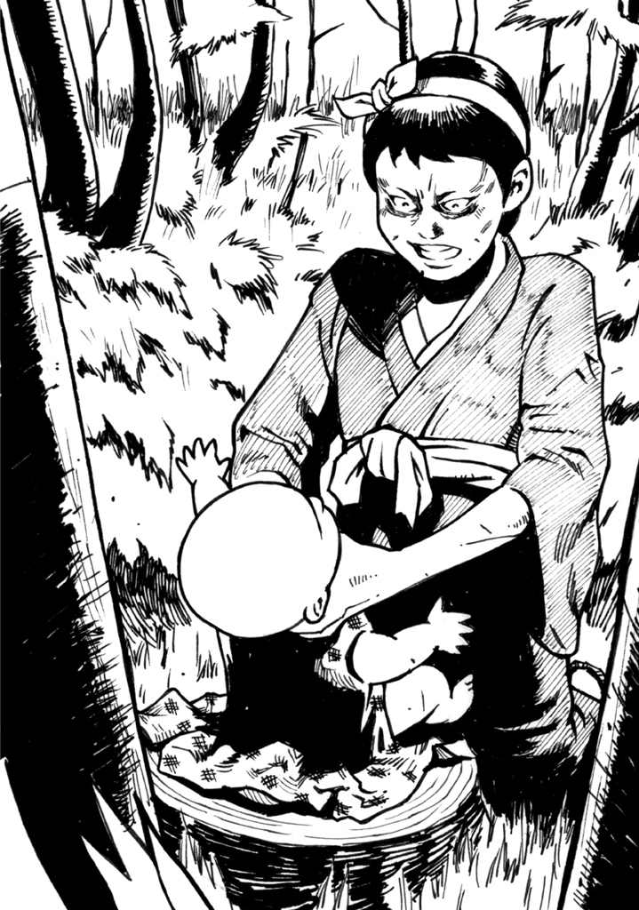
赤ん坊の細く頼りない首にかかっている自分の両手を見てカヨはゾッとした。あわてて両手を離すと赤ん坊を抱き上げる。
赤ん坊は泣きやまない。
カヨの目から一筋の涙が溢れて黒くうす汚れた頬を伝った。何に泣いているのか、カヨにもわからない。ただ次から次へ溢れ出る涙をどうすることもできなかった。
西洋のララバイとはまったく異なる発祥
日本で古くから伝わる「子守歌」は大きく３種類に分かれている。
子供を寝かせつけるときに歌った「寝かせ歌」、子供が遊ぶときに歌った「遊ばせ歌」と、子守奉公に出た少女たちが奉公先の赤ん坊に歌って聞かせた「守子歌」がある。その中でも日本で「子守歌」として広く世間に知られているものの多くは３つ目の「守子歌」で、西洋の「子守歌」とは基本的に性質が異なる。
西洋で言う「子守歌」とは、親が子に対して歌った愛情溢れるものだが、日本の「守子歌」は子守奉公の少女たちが自分の恵まれない境遇や生活のつらさを歌った、恨みや憎しみのこめられた歌だからだ。
西洋の「子守歌」が優しい旋律であるのに対して日本の「子守歌」がどことなく暗く寂しい旋律なのもこのためだと考えられる。
奉公としての「子守り」は江戸時代末期頃から一般的に広まった。
貧しい農民出の年端も行かぬ娘たちが子守奉公として出されるようになり、過酷な条件下で働いた。彼女たちの歌った「子守歌」には子に対する愛情などはない。ただあるのは自分のつらい気持ちや泣く子への憎しみだけだったのだ。
あのことがあった神社では、石段で誰かに足を引っ張られる...
かごめかごめ
作詞：不詳
作曲：不詳
♪ かごめかごめ
かごのなかの とりは
いついつ でやる
よあけのばんに
つるとかめと すべった
うしろのしょうめん だーれ
お前に男の子を産ませはしない
神社に続く長い石段をトミは上っていた。
群青色の空に三日月がかかっている。夜とも朝ともつかぬ、寅の刻。
臨月を迎えた腹は重く、一段上がるごとに息が切れた。それでも休み休み上っていく。
トミの住む地方の古い言い伝えで、この時間に安産祈願に参ると男児が生まれると教えてくれたのは姑のタカだった。トミは名家のひとり息子の嫁。周囲から跡取りを望まれるのは当然のことだった。
階段を上り終え、暗い境内に足を踏み入れたとき、どこからか視線を感じた気がしてトミは立ち止まった。しかしあたりはぼんやりと薄闇に包まれて、人影は見えない。
風が吹いて周りを取り囲む木々がザザザッと音を立てた。子供のころからの遊び場だがこんな時間の神社はやはり薄気味が悪い。
トミはお腹をかばいながら手水舎で身を清めると、神殿に上がって参拝をすませ、足早に踵を返した。そのときまた、ふいに視線を感じた。さすがに気味が悪くなり、トミは半ば走るようにして石段に向かった。
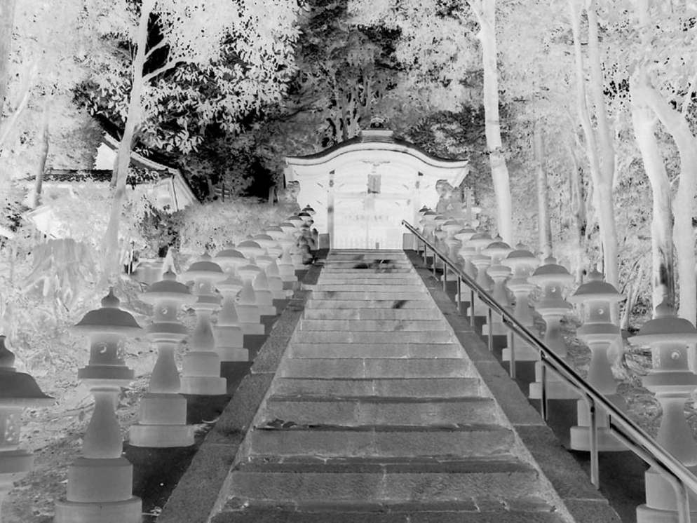
そして石段を降りようとしたそのとき、背後で足音がしたかと思うとトミは背中を突かれ、振り返る間もなく石段を転げ落ちた。混乱した頭の中でトミが思ったのは、ただお腹の中の子のことだけだった。
石段の下に女が倒れている。死んだのだろうか、女はぴくりとも動かない。タカはトミが今しがた転げ落ちていった石段をゆっくりと降りて行った。
タカとトミは姑と嫁の関係だったが、仲がいいことで近所でも評判だった。それもそのはず、タカはある日突然トミが死んだとしても自分が疑われることがないように画策してきたのだ。
トミは器量も性格もいい、よくできた嫁だと周りからは羨ましがられていた。しかしタカは、はじめて見たときからトミが気に食わなかった。
もしもトミに後継ぎなんかが生まれれば、トミは我が物顔であの家に居座るようになるだろう。タカにはそれが許せなかった。
石段の下が近づくにつれて、その女が変な格好で倒れていることに気がついた。あたりはすでに明るくなり始めているが、夜盲症のタカにはかろうじて見分けられる程度だ。落ちる途中で骨を折ったのだろうか、トミの首はぐるりと真後ろに曲がっている。しかし目はきつく閉じられているのでタカはほっとした。自分が突き落とした女と目が合うのは考えただけでもぞっとする。ふと見ると、トミの両腕はお腹の子をかばうように腹を抱え込んだままだった。
「お前がこの女の子供じゃなきゃねぇ...」
生まれなかった孫に話しかけるようにそう呟いてタカは傍らにしゃがみ込んだ。
そのとき、ふいにトミの手がタカの左手首をつかんだ。タカは全身が粟立つのを感じた。恐怖で声が出ない。ものすごい力で手首をつかまれたまま身動きがとれないでいると、トミの首がぐるりとタカの方を向いた。タカは目を閉じようとしたが、何者かの強い力でこじ開けられているかのように瞼が閉じない。そして、タカはトミの目がカッと見開くのを見た。
ゴボッと血を吐きながらトミの口が開く。そして、言った。
「お母さまの仕業ね...」
あとのことはよく覚えていない。死にもの狂いで嫁の手を振りほどき、走りに走った。気がつくとタカは家の土間に倒れていたのだった。
葬式が終わり、トミの死についていろいろ噂をする者もようやくいなくなった。
案の定タカを疑う者はおらず、トミは自分で足を踏み外して落ちたのだということになった。
トミの死を心底悲しんだ夫の新助にもまた新しい嫁が来て、すべてがまた新しく始まった。タカはトミが死んで以来寝つくようになったが、それもあれだけ仲のよかった嫁が死んでは当然と周囲の同情を買いこそすれタカを怪しむ者はいなかった。
しかし、新助の新しい嫁が身ごもって臨月間近になったある日、その嫁は家の何でもない段差でつまずき首を折って死んでしまった。そしてその次の嫁も、また同じように首を折って死んだのだった。ふたりの嫁はトミと同じように、首がぐるりと真後ろを向いて死んでいたという。トミの祟りだという噂は瞬く間に広まった。
結局その後に新助に嫁の来手はなく、家系は新助の代で絶えた。タカは長年寝ついたままだったが、ある日突然お参りに行くと言って家を出たきり、戻ることはなかった。
トミが死に、タカが消えた神社はその後もしばらく「石段で足を引っ張られる」などと噂になったが、そこで起きたことの真相を知る者は誰もいない。
謎めいた歌詞が呼ぶ憶測
日本に昔から伝えられる「かごめ」は、その謎めいた歌詞が様々な憶測を呼び、世代を超えてあらゆる解釈をされてきた。
よく言われているものとして、これは自由のない遊女の足抜けを歌ったものだという説や、檻の中に囚われた罪人の斬首刑を歌ったものだという説があるし、なんと歌詞の中に埋蔵金の隠し場所を示す暗号が秘められているという説まである。
しかし「かごめ」を「籠女」と書いて妊婦を表す、流産の歌だとする説は、恐ろしいながらも妙に筋が通る。この解釈によると、「かごめ」は妊婦を「かごのなかのとり」は胎児を表し、「いついつでやる」はいつ生まれるのか？ という疑問を、「よあけのばん」は午前４時前後の時間帯のことか、または胎児の視点からみて臨月のことを表す。
縁起のいいものの象徴である「つる」と「かめ」が「すべる」ということで悪いできごと、つまり流産を指し、「うしろのしょうめんだあれ」とは「後ろから自分を突き落とし流産させたのは誰か」と問うているというのだ。
謎の多い歌詞だが、この解釈を当てはめて聞いてみると不思議と納得がいき、なんとも不気味な歌に聞こえてくる。
自分の命を顧みずに死力を尽くして腹を叩いた大だぬきの最期
証城寺のたぬきばやし
作詞：野口雨情
作曲：中山晋平
♪ 証 証 証城寺 証城寺の庭は
つ つ 月夜だ みんな出て 来い来い来い
おいらの友だちゃ ぽんぽこぽんの ぽん
負けるな 負けるな 和尚さんに負けるな
来ーい 来い 来い
来い 来い 来い みんな出て 来い来い来い
証 証 証城寺 証城寺の萩は
つ つ 月夜に 花盛り
おいらは浮かれて ぽんぽこぽんの ぽん
住職との響宴にからだを張ったたぬき
昔むかし、人里離れた山奥の古寺に、証城寺という寺があった。草木がうっそうと茂って昼でも暗いその寺には、人間と言えば住職しかいなかった。その住職は大の音楽好きで、務めを終えたあと、本堂で三味線などを弾くのを何よりの楽しみとしていた。
ある秋の晩のことだった。夜、ひとりで寝ていた住職は、ふと目を覚ました。何やら外がざわざわと騒がしい。
気になってそっと、木戸の節穴から外を伺った。
折しも満月の夜で、こうこうと月が照って夜露がきらきら光っていた。そして萩やすすきが風にそよいでいるのが昼間のように見えた。
その音が耳に入ったのかと住職は再び床に入る。しばらくうとうとしたが、また耳につく音で目が覚めた。気になってそのまま耳を澄ませていると、何やらお囃子のようでもある。しかも音はだんだん大きくなっていく。
住職はとうとう起き上がって浴衣を羽織ると、もう一度節穴に目を近づけた。
するとどうだろう！ 寺の境内に、それこそ１００匹もいるかと思うほどのたぬきの群れが集まっているではないか。
「証城寺のぴーひゃらら、おいらの友だちゃどんどこどん」
お囃子は、人間の言葉のようにも風のざわめきのようにも聞こえる。
ぴーひゃらら、の部分は草笛で、どんどこどん、は太鼓の音だ。
住職は木戸の中からそれを見ていたが、あまりにもおもしろそうなので、からだがひとりでに動き出していた。たぬきのお囃子に合わせて手を叩いたり、足を踏み鳴らしたり...。そしてついに木戸を引くと、縁側から地面へ、そして境内へと吸い寄せられるように踊りながらたぬきの群れに近づいていった。
たぬきたちは、踊る住職に気づいたが、驚きもせずむしろ前よりも激しく踊り始めたではないか。
太鼓の音は、大きなたぬきが自分の腹を叩いている音だった。腹の底に響くような、迫力のある音が絶妙なリズムを作っていた。たぬきたちが大きな輪になって寺の周りをぐるぐる回り始めたので、住職もその中に入って一緒に踊った。
住職が踊り始めると負けじとたぬきも太鼓を叩き、笛を吹いて踊った。
やがて東の空が白み始め、たぬきたちは自分の巣穴へと戻っていった。
あまり楽しかったので、住職は次の日も、床に入ってじっとたぬきの気配を待った。すると次の晩も、その翌晩も、たぬきたちがやって来た。そして境内で住職とたぬきたちは踊りとお囃子の競争になった。
本当にときの経つのも忘れて、住職とたぬきたちは踊り狂った。いつ尽きるとも知れない秋の夜の響宴、とくに３晩目はいつになく盛り上がり、最高潮に達した。
４日目―。
いつものように床でじっとたぬきの気配を待っていた住職は、その晩がいつになく静かなのに気づいた。たぬきの気配はおろか、風の音すらしない。
あまりの静寂に、住職は起き上がって、木戸の節穴から外を伺った。
何もいなかった。
そのまましばらく待ったが結局たぬきは現れず、仕方なく住職は床に就いて眠った。
翌朝住職が、境内に積った落ち葉をほうきで掃いていると、本堂の陰に大きなものが横たわっているのに気づいた。人間の大きさほどもある黒い毛の塊。住職は用心深く近づいて、ほうきの柄でそれをつついた。
ごろん。その勢いで、毛の塊がこちらを向いた。大だぬきがかっと目を見開いたまま、口を半ば開いて息絶えていた。そして、たぬきの腹は大きく割け内蔵がはみ出ている。なぜこんなことになったのか、と不振に思ってなおも調べると、たぬきの両の前足が、血で真っ赤に染まっていた。
「ああ...」
住職が思わず声を上げた。
毎晩毎晩、住職との踊りのために自分の腹でお囃子をしていた大だぬきが、あまりにも激しく腹を叩きすぎて、腹が割けてしまったに違いない。
住職は、そのたぬきの死がまるで親しい友の死のように悲しかった。そしてそのたぬきを心から哀れに思い、亡骸を寺の墓地の片隅に丁寧に弔ってやったのだった。
木更津に残るたぬき囃子の寺
この寺は、正確には證誠寺といって、現在でも千葉県・木更津に残っている。
創立は江戸の初期と古く、初代住職は了念法師といった。
その頃、この辺り一帯は鈴ヶ森と呼ばれ、杉や松、そして竹やぶが生い茂った、昼でも暗い不気味な場所だったという。
内房はほとんど真言宗の寺だが、なぜかここは唯一の浄土真宗の寺でもあった。そして、雅楽を使った伝統の行事などを活発に催していたので、近隣の村人たちには不思議なものに聞こえ、たぬき囃子の民話につながったのではないかという説もある。
童謡としては大正14年に野口雨情が雑誌「金の星」に発表、のちに曲がついて全国に広まった。
お母さんのあとを影のようについていく女の子
サッちゃん
作詞：阪田寛夫
作曲：大中恩
バナナを食べてた子
「ねえ、なんでだめなの？」
果物屋の店先でぼくはいつものように駄々をこねていた。
店の棚に黄色くて大きなバナナの房が積み重なっている。買ってもらえないのはわかっているのだが、ここを通るといちかばちか母親にねだってみるのが日常になっていた。
「バナナは高級品なの。普通の家では買えないものなの」
母さんもいつもとまったく同じセリフを言う。ここまではいつものやりとりだ。でも今日は違う。続きがあるのだ。
「だって、隣の家に越してきた子、昨日縁側でバナナ食べてるの見たよ。あの子のうちは普通じゃないの？」
「隣？」
母さんがぼくを見る。
「うん。週末に隣に越して来た子」
一瞬、間があった。それから母さんは
「ああ、あの子」
とそっけなく言うと、
「とにかくだめ、よそはよそ、うちはうちよ」
とお決まりのセリフを残してすたすたと行ってしまった。
「もーっ！」
母さんに聞こえるように毒づくとぼくも仕方なく歩きだした。
隣の家にその家族が引っ越してきたのは先週の土曜。身なりのいい家族で、小さな女の子をひとり連れていた。小柄でおとなしそうなおかっぱ頭の子だった。
このあたりだと同じ小学校だろうと思っていたのだが、小さい学校だというのに週が明けても転校生が来たという話はどの学年からも聞こえない。
あの子、まだ幼稚園なのかな。
学校帰り、裏道から垣根越しに隣の家の縁側を見ながらぼくが考えていたとき、ふいに縁側に少女が現れた。ぼくに気づくと立ったまま青白い顔を傾げるようにしてこちらを見ている。
「ねえ、なんで学校行かないの？」
思い切ってぼくは声をかけた。少女はちょっととまどったような顔をしたあと、細い声で答えた。
「行けないの」
「なんで？」
ぼくは聞く。
「サッちゃん、外に出られないの」
「サッちゃんていうんだ」
「うん。サッちゃんっていうの」
サッちゃんはそう言うと目を細くして笑った。
ぼくは帰って母さんにそのことを話した。
「あの子、なんで外に出られないの？」
すると母さんは、
「勝手に人の家の縁側なんて覗いちゃだめよ」
と言った。面倒なことになりそうなのでぼくはそれ以上その子の話をするのはやめた。
数日後、学校から戻ると母さんがよそいきの服を着て果物の入った籠を下げている。
「バナナ！」
ぼくが籠に手を伸ばす前に、籠は母さんの手によって宙高く持ち上げられてしまった。
「それどうするの!?」
「隣のうちのさちこちゃん、からだの具合がよくないんですって」
母さんは言った。
「これからお見舞いに行くから一緒にいらっしゃい」
「病気なの？」
「さちこちゃんによけいなこと聞いちゃだめよ」
ぼくは野球帽をかぶりなおして母さんの後をついていった。サッちゃんは、奥の部屋の布団で眠っていた。母さんとサッちゃんのお母さんが低い声で話しているのを聞きながらぼくは眠っているサッちゃんを見ていた。
「ほんとうは学校に行かせたいんですけど...」
「きっと、行けるようになりますよ」
「ええ、やっぱり寂しいみたいで...私が家にいるときはずっとうしろをついてくるの」
眠っているサッちゃんはあまりに静かで息をしていないようで、ぼくは不安になった。
「サッちゃん、ときどき縁側にいるよ」
ぼくは言った。
「バナナ食べてる」
「そうなの、さちこはバナナが好きで...。ときどき、話し相手になってあげてね」
サッちゃんのお母さんはそう言いながら力なく笑った。
それから少しして、お母さんからサッちゃんが遠くへ行くという話を聞いた。
「サッちゃんは肺の病気だから、空気のいい田舎のおばあちゃんの家に引っ越すんだって」
もう会えなくなっちゃうなら、その前にあいさつに行こうって言ったんだけど、病気が移るって許してくれなかった。ぼくはサッちゃんがぼくのこと忘れてしまうのかなと思うと悲しかった。
でも、サッちゃんは遠くになんて行かなかった。
夏が終わって秋がきて、寒い冬が過ぎてまた春になって、ぼくは身長も伸びて学年がひとつ上がったけれど、サッちゃんはそのまま、身長も髪の長さもそのままだった。
いつもお母さんのうしろをついて歩いている。
お母さんが外に出るときは縁側でバナナを食べている。
ただ不思議なのは、誰もサッちゃんに話しかけないこと。ぼくが話しかけても何も答えなくなった。透けるような白い顔で、サッちゃんは今日もお母さんのうしろを歩いている。
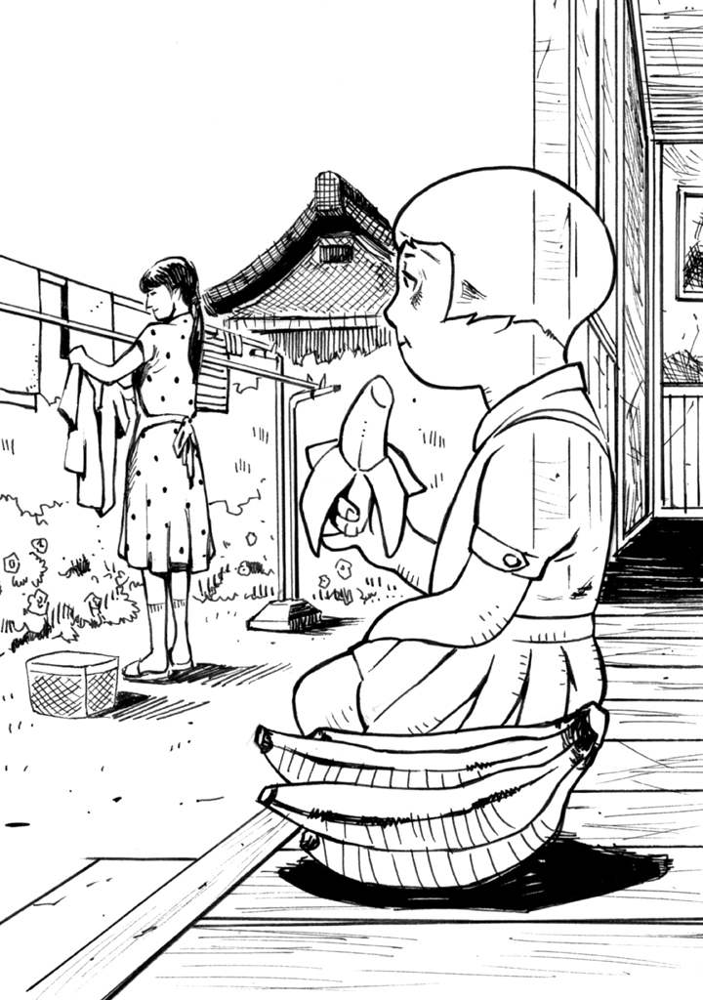
都市伝説の宝庫
「サッちゃん」にまつわる都市伝説は数多くある。
代表的なものには、サッちゃんは北海道の列車事故で足をなくした少女で、そのことを歌った幻の４番目があるという説や、サッちゃんは病気で死んでしまった少女であるという説などがある。
しかし作者の阪田寛夫氏によると詩中の「サッちゃん」とは作者が子供の頃に実在した少女がモデルになっていて、その少女は病気だったわけでも亡くなったわけでもないという。ただ記憶の中の「サッちゃん」にどこか淋しい感じがあったことを思い出して歌の中では「遠くへ行く」ことにしたのだとか。
現実には、この歌自体に恐ろしい意味はない。しかし、作詞の経緯について作者自身がきちんと述べている歌でこれだけ様々な噂がささやかれる例は珍しい。
実際の歌から離れて別の生命を持ったように広がる「サッちゃん」伝説。
そもそもこれらの噂はどこから始まったのか？
その根源が見えないところがこの歌のもっとも不気味なところと言えよう。
お茶壺道中、粗相があったらたとえ子供でも容赦なく切り捨てよ...
ずいずいずっころばし
作詞：不詳
作曲：不詳
♪ ずいずいずっころばし
ごまみそずい
ちゃつぼにおわれて
とっぴんしゃん
ぬけたら どんどこしょ
たわらのねずみが
米くってチュウ
チュウ チュウ チュウ
おっとさんがよんでも
おっかさんがよんでも
いきっこなしよ
井戸のまわりで
おちゃわんかいたのだあれ
茶道中で起きた村の惨劇
役人が話し終えたとき村長は身が凍る思いだった。
京の宇治から将軍家に新茶を納める季節には、中山道にあるその村に毎年茶道中が通る。そのたびに、道の普請を前もって村の責任でやらなければならない。茶道中が通る10日も前から村中総出で草をむしり道を平らにする。つまづくような穴ひとつ、石ころひとつあっても許されないのだ。
景観もしかりだ。街道から見えるところには洗濯物があってもいけない。
何よりも困るのは、お茶壺道中をお迎えする「礼」の部分だ。
ただでさえ農繁期には難儀なのに、茶道中が通る間は、村人は街道に出てずっと平伏していなければならない。茶壷に印された葵の御紋は将軍さまと同じだ。顔を上げただけで、「無礼者」と怒鳴られ、どんなお仕置きをされるかわかったものではない。無礼討ちにあって殺されても仕方なく、それは一家も同罪だ。だから子供たちには道中が通り過ぎるまでは家の中に閉じこもって、もの音ひとつ立てないように厳しく言いつける。
野良仕事も禁止なのはいたしかたない。それは毎年のこと。だが村長が怖れたのは、道の普請の様子を前もって調べに来た役人が最後に村長につけ加えたひと言だった。
「明日の昼はこの村で休むこととなろう。用意しておくように」
つまりは、明日の茶道中の昼飯を村で用意しなければならないということだ。ひとり握り飯３つ、漬物、味噌、お茶...。たかが昼飯とあなどるわけにはいかない。今年の茶道中は大がかりで歩頭を先頭に茶道頭、茶坊主、役人を入れると１０００人にも及ぶ。
ここはわずか50戸余りの小さな農村、しかも去年はひどい不作だった。それでも年貢は厳しく、村にはわずかな米しか残っていない。その貴重な米には手をつけず、村人はイモやアワ、ヒエを粥にして食べているのが現状だった。
１０００人分の握り飯３０００個。小さな村にとっては気の遠くなるような数だ。現代の日本人と違い、江戸時代の日本人の食事とは米を食べること。ひとり１日１升食べると言われていたから、ひとり１回分の食事の米は少なくても３合（約５４０グラム）必要だ。
村長は皆を集め、事情を説明し、急いで村中の米を数えた。村中の米をかき集めても米俵８俵（約４８０キログラム）とやや足りない。
それでも小ぶりの握り飯ならなんとかなるかもしれない。さっそく準備にかかり、欠けた湯飲みや盆まで持ち出し、各家に米を分配して米を炊く用意をさせた。
さすがに前の日に炊いて冷え切った握り飯を出すわけにはいかないので、夜明けを待って米を炊き、村人総出で握り飯を作る。
おかずは酸っぱい胡麻味噌ずい。これは里芋の茎を胡麻味噌で和えたものだ。貧しい村に茶はないので、湯を沸かし塩を入れただけの塩湯も用意した。
さて当日、計画通りに準備を始め、ようやく昼間近になって用意が整ったとき遠くから声が聞こえてきた。
「下にぃ～、下に」
お茶壺道中の行列がやってきた。村長をはじめ大人たちは街道に平伏して到着を待った。子供たちは家の戸をぴしゃりと閉めきって、息をひそめる。１時間も経った頃、長い長い行列はようやく全員到着し、村の前の沿道の両端にびっしりと並んで座った。そして役人の指示に従い村人たちが握り飯や塩湯、漬物を配り始めた。
好奇心旺盛な男の子が戸を少し開けて様子を伺うと、家のそばの井戸の前で役人たちが自分は食べたこともない真っ白な握り飯を頬張っている姿が見えた。男の子の喉がごくりと上下し、腹がきゅうぅっと鳴った。それも道理、今回の騒動で村人たちは全員きのうの夕飯以来何も食べていなかったのだ。
伝令の声が道中一行にいき渡り、ようやく出発の時間になった。井戸の周りの役人たちも腰を上げ道中に合流する。
村長たち大人はまた道に平伏して一行が通り過ぎるまで頭を下げ続けた。そのとき男の子の目が井戸のあたりに釘づけになった。なんと握り飯がふたつも食べ残されているではないか。男の子は自分のきょうだい７人と目くばせを交わした。そして役人の姿が見えなくなり、お茶壺道中が歩きだすのを待ちかねて、そっと戸を開けて井戸に近づき、すばやく握り飯をつかんだ。だがすぐにきょうだいたちもやってきて握り飯の奪い合いになってしまった。その騒ぎであろうことか、そばの湯のみ茶碗が井戸の洗い場に落ちて割れたのだ。
がちゃん。
振り向いた役人と手に握り飯を持った子供たちの目が合った。
役人は凄い形相で引き返してくると、
「無礼者！」
と一喝して、刀を抜いた。そして恐怖で身動きできなくなった子供たちをひとりひとり斬り殺していった。頭を真っぷたつに割られた弟、首をはねられた妹、刺し殺された妹、あたりは血の海だ。その様子をあっけにとられて見ていた当の男の子は、役人が返り血を浴びながらこちらを振り向いて、刀を振りかざした瞬間に、それをとっさによけ、その場から逃げだした。
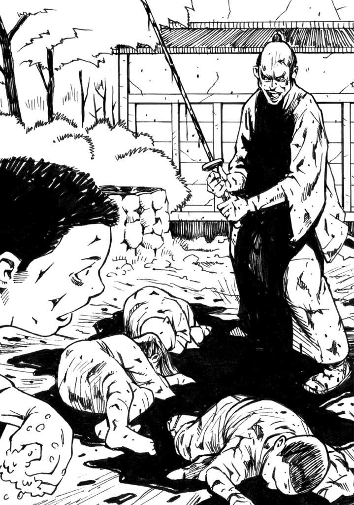
どのくらい走ったのか、息があがるまで駆け続けて山奥の茂みに飛び込み、そのまま身を震わせて夜更けまでじっと隠れていた。そして空が白むのを待って恐る恐る村に戻った男の子が見たものは、無残に殺されたきょうだいや父母、祖父母、そして村長の姿だった。
死体の周囲には生き残った村人がすべて集まっていた。そして帰って来た男の子を見つけると、待っていたかのように手に手に鎌や鍬や棒を持ってその子に飛びかかり、いっせいになぶり殺しにしたのだ。男の子の死骸は元が人間であったとわからないほどのむごい姿だったということだ。
ずいずいずっころばしは子供たちへの戒めの歌
江戸時代、将軍家御用達の中に宇治茶があった。茶は貴重品だったが、将軍家では毎日飲まれていたため、年に何回も中山道や東海道を通って江戸に運ばれ、そのたびに大名行列並みの道中が行われた。葵の御紋が入った茶壺は多いときは１００個を数え、１０００人を超える行列になったという。
しかも少しでも粗相があったら容赦なく咎められた。そのため、お茶壺道中が来ると、子供たちはその声に追われるように戸を閉め家に閉じこもり、息をひそめているしかなかった。街道に隣接する村人たちは「切り捨てご免」の驚異におののいた。だからお茶壺道中の通る街道では、こんな童謡が歌われ、子供たちへの戒めとされていたのである。
そして道中が通り過ぎると、ようやく解放されて、戸外に出て大騒ぎをして遊んだといわれる。
茶壺に追われて戸ピシャン
ぬけたら（行ってしまったら）どんどこしょ（騒ぎましょ）...
雨乞いの反対、雨を追い払う掃晴娘の悲劇
てるてる坊主
作詞：浅原鏡村
作曲：中山晋平
雨払いに呼ばれた掃晴娘
その年、平安の都では記録的な長雨が続いていた。
雨水を吸いきれなくなった山は一気にその水を吐き出して山崩れを起こし、行き場を失った水は鉄砲水となって農村を襲い、農作物は水没し、または根腐れした。川は氾濫して市中は水浸しとなり、道は道とは呼べぬ状態になり、床下は汚泥に埋まり、人々は腐った食べ物を口にするしかなく、やがて疫病が蔓延し、大きな被害が出始めた。
いつやむともわからない豪雨を前に、さすがに朝廷も動かざるを得なくなり、協議したところ、出雲から掃晴娘なる祈祷師を呼ぶことになった。
掃晴娘は中国から伝わる呪術師でほうきを持って雨雲を追い払う役を担っていたのだが、困ったことには福も掃き払ってしまうと言われていた。
「雨乞いならば、何度もやってまいったが...。雨払いはやったことがない」
都で権勢を誇る若い陰陽師は己のふがいなさに唇をかみしめたが、はじめて見る掃晴娘にも興味があった。やがて参内してきた掃晴娘は若い娘であった。
「なるほど、字のごとくか。それにしても」
陰陽師はその娘の美しさに目を見張った。掃晴娘は斎戒沐浴をすませると、祈祷室に九十九本のろうそくを立て、長いほうきを持って３日３晩の祈祷に入った。
すると昼間でも暗く覆っていた雨雲が引き始め、日光が射してきた。そしてあれほど強かった雨足が弱まり、小雨となった。
帝は大いに喜び、掃晴娘に黄金を褒美に与えた。雨は完全にやんではいなかったが掃晴娘はお役御免となり、たくさんの褒美を持って帰っていった。
ところが、掃晴娘が帰っても雨はいつまでもやまず、しだいにまた強くなっていった。
10日ほどして、朝廷は掃晴娘を返すのが早過ぎたとして、呼び戻すことになった。
ふたたび祈祷が始まると、翌日にはまた晴れ間が見え、今度は雨は完全にやんだ。帝は掃晴娘をほめたたえ、望みの褒美を惜しみなく与え、宴を開いた。掃晴娘は朝廷の文武百官に神酒をふるまった。その様子に大層喜んだ帝は陰陽師の方をちらと見て
「役立たずが」
と小さく言った。陰陽師はそれを聞き逃さなかった。そして背筋が凍った。
掃晴娘の活躍で己の立場が危うくなると悟り、帝の側近に賂を渡しながら申し出た。
「このままでは掃晴娘が朝廷に出入りし、小娘ごときが帝の信を集めるやもしれません。何か理由をつけて一刻も早く出雲に帰しましょう」
側近は帝に、掃晴娘が雨雲とともに、帝の福も払い出しているため、長く置いておいてはいけないと進言した。驚いた帝は、翌日には掃晴娘を出雲に帰してしまった。
これですべて収まったと安心した７日後、今度は激しい落雷が都を焼き尽くし、さらに豪雨が３度襲った。帝は側近の反対を押し切り、信頼厚い掃晴娘を呼び戻し、また祈祷させた。その夜、人の話し声も聞き取れないほど激しく鳴っていた雷がやんだ。陰陽師は焦った。そして立ち入りを禁止されている祈祷室に人目をはばかって入り込み、驚く娘に言った。
「そなたをひと目見たときから、焦がれておった」
掃晴娘はなすすべなく押し倒され純潔を失った。
その夜から神聖さと神通力を失った掃晴娘の祈祷はむなしく、雨はやまず、雷も激しくなっていった。雨空を見上げながら不思議がる帝に、陰陽師は耳元で囁いた。
「この雨はあの掃晴娘ではやみません。これまでのことはただの偶然に過ぎませぬ」
しかし帝は掃晴娘を信頼していたため、
「もし３日以内にやんだらそちの首を差し出すか」
と言って笑った。
陰陽師はここぞとばかりに言った。
「いかにもご随意に。しかし３日以内にやまない場合は、あのいかさま娘の首をはねていただききましょう」
帝は約束したが、雨はやまなかった。約束通り、掃晴娘の首がはねられ、その首は市中にさらされたという。
てるてる坊主は江戸時代に一般化した呪具
楽しみにしている遠足などに、翌日の晴れを祈り、軒下にてるてる坊主を吊るして歌われる童謡だが、もともとは中国の掃晴娘がほうきを持った人形を吊るしたのが始まりのようだ。ほうきは雨雲を払い、晴れを呼ぶ神聖な道具で、悪事や福さえも払うとされている強力な呪具でもあった。
掃晴娘は若い娘が行っていたが、平安時代に日本に伝わったころから、若い娘よりありがたみのある男の僧が代わって祭事を行ったのだろう。そのため歌も"坊主"として定着したものと思われる。
当時は軒下に吊るすのではなく、ナンテンの木の下に吊るした。ナンテンは聖木で南天と書くが、元は難転で、「難を転じる」の意味がある。
江戸時代になりこの風習が庶民にも広がり、冒頭の「てるてる坊主てる坊主」の詩が生まれ、節がついた。最初の部分は今に伝わるものとほぼ同じ。それが、明治中期に浅原鏡村の手によって後半の歌詞がつけ加えられた。
いつかの夢の 空のよに 晴れたら 金の鈴あげよ
私の願いを 聞いたなら 甘いお酒を たんと飲ましょ
それでも曇って 泣いたなら そなたの首を チョン切るぞ
前半のぼくとつな歌詞に比べ、後半は実に現実的で、とくに３番は残酷だ。なんであれ、いくらなんでも神さまに仕える者の首を切るとは尋常ではない。これはキリスト教信者でもあった浅原鏡村に関係があると言われる。十字架に架けられたキリストを毎日見ていた浅原鏡村にとって、神といえども血生臭い目に遭う、というのは、そんなに意外な発想ではなかったのかもしれない。
しかし平安時代、長雨に悩んだ末に担ぎ出されたであろう掃晴娘や僧たちが、雨雲を追い払ったときの金銀や美酒の褒美と、叶えられなかった場合の残酷な末路があることは、明治の作詞者、浅原鏡村には容易に想像できたことだろう。
バラモンのために業火に飛び込んだうさぎの信心
うさぎ
作詞：不詳
作曲：不詳
♪ うさぎ うさぎ
何見て はねる
十五夜お月さん
見て はねる
月にうさぎの影が映っているわけ
昔むかし、インドに１匹のうさぎがいた。そのうさぎはまっすぐな性格で、人間の畑を荒らして野菜を盗ってくることも、他のうさぎの収穫を横取りすることもなく、ひたすら仏さまを信心して粗末な巣穴で暮らしていた。
うさぎには、猿とジャッカルとかわうそという、とても仲のいい友だちがいた。そろって信心深かった４匹は、精進の日にこんな相談をした。
「今日は精進日だから仏さまの教えを守り、からだを清めて困っている人を見かけたら精一杯助けてあげよう」
するとまるで相談が天上に聞こえていたかのように、森の中で、歳をとって疲れ果てたバラモンが動けなくなっているのに出会ったのである。
バラモンを助けようということに話がまとまるのに時間はかからなかった。
猿は得意の木登りで木の実や果物を集めてきた。ジャッカルは岩陰にいるトカゲを捕まえてその肉を持ってきた。かわうそは得意の潜水で、川にもぐって鯉をどっさり捕まえてきた。
うさぎはどうだっただろう。
さんざん苦労して探し回ったにもかかわらず、バラモンに提供するものをとって来られなかったのだ。なぜなら、うさぎは茅を食べていたので、自分の食べ物で差し出せるものはないし、貧しかったのでバラモンのために米や麦を買うこともできなかった。約束の時間まで、必死になって捧げものを探し回ったが、とうとう手ぶらで行くことになってしまった。
困り果てたうさぎは、バラモンのところに行くと、こう言った。
「私は何も持ってくることができませんでした。ですから、せめて私自身の肉を召し上がっていただこうと思います。といっても今日は精進の日ですから、バラモンが私を焼いて食すことはかないません。ですから、ここで火を焚いてほしいのです。火が燃え上がったら私が自分で飛び込みますので、いい具合に焼き上がった頃に取り出してお召し上がりください」
バラモンが言われた通りに火を焚くと、うさぎはぱっと身を翻して、燃え盛る火の中に飛び込んだ。たちまちなめるような業火がうさぎに襲いかかり、動物の毛が焼ける匂いと、肉の焦げる匂いが、黒い煙と一緒に周囲に立ち上る。うさぎの友であった動物たちは、あまりの顛末に、言葉も失ってたき火の周りに集まり頭を垂れた。
うさぎの迷いのない信心と動物たちの友を悼む姿に打たれたバラモンは、そのとき姿を変えた。実は、老人はバラモンではなく真の姿は帝釈天だったのだ。
うさぎの捨て身の行いを目の当たりにしてその犠牲を尊いものと感じた帝釈天は、うさぎの魂を火の中から助け出した。そして魂を月に登らせ、その姿を永遠にとどめさせることにした。
そのため、今日月に見えるうさぎの影は、うさぎが身を焼いたときに出た煙の名残だといわれている。
仏教の説話集が元になった言い伝え
旧暦の８月15日は、十五夜だ。
「中秋の名月」とも呼ばれ、満月の日を意味する。新暦ではほぼ９月にあたるが、年によって若干違う。ちなみに２０１０年は９月22日、２０１１年は９月12日、２０１２年は９月30日。今ではあまり行われなくなったが、日本では古代から秋の収穫物を月に供えながら、その美しい輝きを鑑賞する月見が風習として各地で行われていた。
さて、月といえば日本では、うさぎの影が見えると言われる。この言い伝えがいつ頃からあるのかはわからないが、月とうさぎの関係は、実は仏教からきたものだ。仏教の説話集「ジャータカ」のひとつに「ササジャータカ」と呼ばれる有名な話がある。これが紹介した信心深いうさぎの話にあたる。
仏教の説話集というと、日本人にはあまり馴染みがないと思われるかもしれないが、今昔物語や宇治拾遺物語にも登場する。古代の日本での方が知られていたかもしれない。またイソップ物語などにも影響を与えたといわれているので、広く世界中で読まれてきた物語なのだろう。
江戸時代にできたわらべ歌の、暗く悲しい秘密
とおりゃんせ
作詞：不詳
作曲：不詳
♪ とおりゃんせ とおりゃんせ
ここはどこのほそみちじゃてんじんさまの ほそみちじゃ
ちっととおしてくだしゃんせ ごようのないものとおしゃせぬ
このこのななつのおいわいに おふだをおさめにまいります
いきはよいよい かえりはこわい
こわいながらも とおりゃんせ
とおりゃんせ
天神さまの境内で子を殺す鬼畜
清助は病弱な子供だった。青白い顔に目だけがぎょろりと大きく、背は低くてからだは痩せっぽち。無口で滅多に笑うこともせず、なぜだか兄弟の誰とも似ていない。生まれたときから長くは生きられないだろうと言われた末息子だった。
ちずの家は貧しい農家、７人いる子供たちはみな５歳から働いた。しかし清助は働かない。というのも清助は日の下に長い間いると倒れてしまうので農作業はさせられないのだ。家族全員で朝から晩まで働いて、それでも今日食べるのがやっとという生活で、いつまでも清助のような子を家に置いて養うことはできなかった。
（それでも７つまで育てたからね...）
ちずは心の中でつぶやいた。
天神さまの元で死んだ者は天神さまがちゃんと天国へお導きくださる、という噂はどこから聞いたのだったか。きっと天神さまの境内に子供を捨てた親がせめてもの罪滅ぼしにとそんな話を始めたのだろう。そうだとしてもちずは少しでも気持ちを軽くしようとその噂を信じた。
（大丈夫、清助は天神さまがお導きくださる...）
山の日暮れは早く、天神さまの境内に続く細い小道はもう闇に包まれていた。こんな時間に参拝する者はいない。ちずは清助の手を引いてその小道を奥へ奥へと進んでいった。
「母さん、どこ行くの」
清助がふいに立ち止まって言った。
「天神さまのところだよ。お前この間７つになっただろ、７つになる子は今まで見守ってくれた天神さまにお礼を言いに行くんだよ」
「でももうじき夜だよ」
「今日は日が強かったからねぇ。お前、倒れてしまうだろ」
神殿を前にして並び、目をつむって手を合わせる清助の横顔を盗み見る。心臓が高鳴る。
（ごめんね清助、でもお前のために一家が飢え死にするわけにはいかないんだ）
ちずの腕が伸びる。清助の細い首に両手がかかったとき、清助が小さく悲鳴を上げた。ちずは目を閉じたままただひたすら手に力を込めた。
どのくらい時間が経ったのか、腕の中で清助がぐったりしている。すでに息はしていなかった。
来た道を戻るとき、ちずは境内の方を振り向かなかった。足早に暗い山道を歩く。町の灯が見える。あと少し、あと少しと祈るように心の中で呟きながら道を急いでいたそのときだった。ちずの足首を何かがつかんだ。はっとして見ると、小さな白い手が後ろから伸びている。
「あんたを連れては帰れないんだよ！」
ちずは叫ぶようにそう言って力まかせに足を後ろに蹴り上げた。足が硬いものにあたった感触があり、手が離れた隙にちずは一目散に駆け出した。どこをどう走ったのかわからない。やっとのことで家に帰りついてみると、山道でつかまれた左の足首に青い手形がついている。ちずは土間に立ったまま固く目を閉じ、両手を合わせて一心に祈った。どうか清助をお連れしてください、と。
ときが流れた。何の音もしない。ちずは恐る恐る目を開けた。そして足元にしゃがみこんでいる、小さな姿に気がついた。子供の顔がこちらに向いて、顔の半分が不自然に陥没している清助を見たちずは、声にならない叫びを上げた。
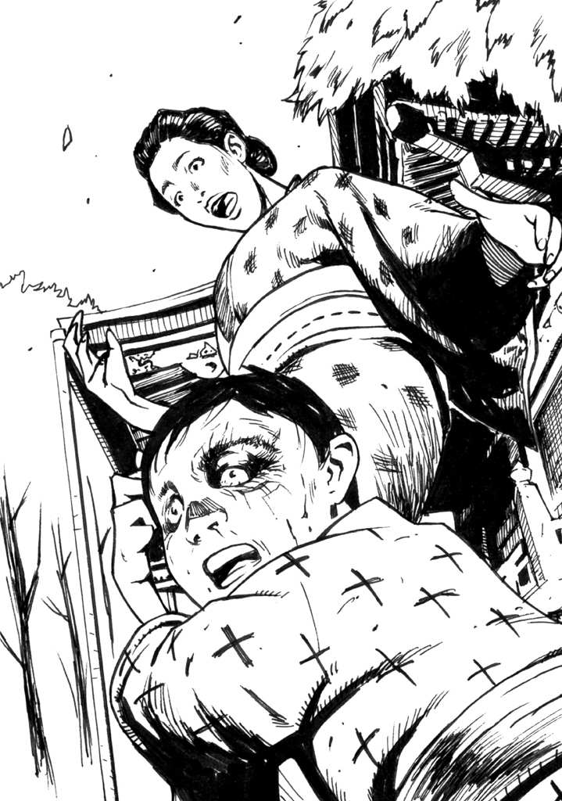
「関所の厳しさ」「生け贄の歌」説も
少し前まで、横断歩道の信号機から流れてくるといえばこの歌だった。メロディも歌詞もどことなく暗い印象の「とおりゃんせ」は、江戸時代にできたわらべうたと考えられている。発祥の地とされる場所も埼玉県の三好野神社と神奈川県の菅原神社の２カ所があり、どちらにも発祥の碑がある。歌詞の解釈は様々で、関所の取り調べの厳しさを歌ったものであるというのが一般的だが、他にも生贄をささげるために神社に行ったという説、口減らしのために天神さまの境内に子供を捨てに行く説などがある。この場合「いきはよいよい」の「いき」とは「逝く」ということを意味し、「かえりはこわい」の「かえり」とは「黄泉帰り」であるとされる。また、「ななつのお祝い」というのは、昔からの習慣で、７歳が神様の庇護を絶ち自分の力で生きてゆかなければならなくなる歳、とされていることに由来していると考えられる。
自分の娘を遊女に売って、値切られたことを悔しがる親の業
花いちもんめ
作詞：不詳
作曲：不詳
♪ ふるさと もとめて 花いちもんめ
あの子が ほしい あの子じゃわからん
この子が ほしい この子じゃわからん
○○ちゃんが ほしい
じゃんけんぽん
かって うれしい 花いちもんめ
まけて くやしい 花いちもんめ
何も映さない瞳で、遊女が見る夢とは？
薄暗く赤いランプが、畳敷きの部屋に座るおりんの頬を照らしていた。厚く塗りたくられた化粧で大人びて見えるけれど、その表情はどこかあどけない。焦点がどこに合っているのかわからない目で、おりんは外の景色を眺めていた。
往来には、たくさんの男たち。格子窓越しに、遠慮のない野卑な視線を彼女に浴びせてくる。やり手婆が彼らに何か話しかけているけれど、おりんの耳には届かない。
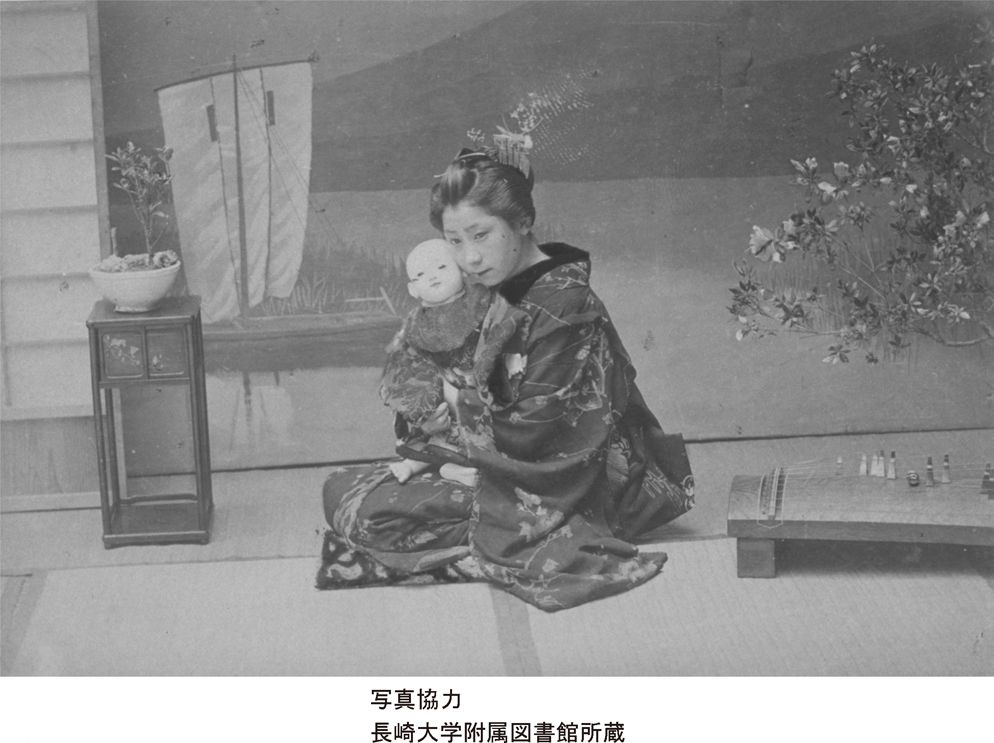
この色街に売られてきて２年。ここでの暮らしは、とくに不自由していない。暖かい寝床もあれば、食べるのに困ることもない。男たちの言うことを聞いて奉仕している限りは...。
「かってうれしい、花いちもんめ...」
客がつくまでの間、おりんはいつも歌を口ずさむ。幼い頃、ふるさとで飽きることなく歌ったあの歌を口ずさむ。そうすると決まって彼女の脳裏には、売られてくる前の思い出がよみがえる。貧しいながらも幸せだった家族の笑顔が甦る。
２年前、おりんの村を十数年ぶりに飢饉が襲った。何かを売って粟や稗を買おうとしても、家の中に値打ちものなどない。１日に１食も食べられない日が続く。幼い弟や妹たちは、みるみる痩せ細っていった。お父ちゃんとお母ちゃんの顔からも、いつの頃からか笑顔は消え、いさかいが絶えないようになった。おじいとおばあがすでに亡くなっていたのは、今思えば、逆によかったのかもしれない。隣の家のおばあが山へ捨てられたのをおりんは知っていた。生まれたばかりの弟に、お父ちゃんがぬれた布をかぶせるのも黙って見ていた。
「ごめんなあ、ごめんなあ...」
涙をこぼしながら、冷たくなった弟に謝るお父ちゃんを見ていると、生きているのが申しわけなくなった。いっそ、あたいを殺してくれたらよかったのに。おりんは本気でそう思った。神さまを憎んだ。貧乏を呪った。朝目覚めると、決まって枕がぬれていた。
そんなときだった、あの男が村へとやって来たのは。
「どうです、悪い話じゃないでしょう？」
男は困っている村人たちの家を一軒一軒回って、いつも同じ台詞を口にした。所帯を持ったばかりの吾助は、自慢の嫁サトをその男に預けた。その男は、おりんの家にも来た。
「この子、私に預けてもらえませんかねえ...」
その男が目をつけたのは、おりんの妹だった。おりんは、この妹やほかの弟たちとよく「花いちもんめ」を歌って遊んだものだ。
妹の顔のつくりはおりんと大差なかったが、生まれつきからだが弱く、農作業に出ることもほとんどなかったため、その肌は透き通るように白かった。
最初はお父ちゃんも鼻白んだけれど、いったん振り上げた拳をぶるぶる震わせ、ゆっくりおろしながら、ぼそりとつぶやいた。
「どうせ、このままじゃ一家全滅だ、好きに、したらいい...」
お母ちゃんは、ただただ泣いていた。気づくとおりんは女衒とお父ちゃんの間に割って入り、叫んでいた。わめく、というほうが近かったかもしれない。
「この子さ連れて行くんなら、代わりにあたいさ連れてってくだせ。この子はからださ弱いから、満足に働けるはずもありません。あたいはからだだけは丈夫です。この通りです、この子だけは勘弁さ、してけろ...」
女衒の男はしばらくじっとおりんの、日に焼けてはいるが整った顔を見たあと、着物の腕をまくって日焼けしていない肌をなめるように確認するとこう言った。
「わかった。お前さんを連れて行くことにしよう。ただし、値段は負けてもらうぜ」
行くも地獄、残るも地獄。しばらくは、食べるのに困ることもないだろう。けれども１匁足らずのお金を手にしたところで、家族がそう長く暮らせるはずがない。おそらくは春を迎える前に、妹も売られていくのだろう。それでも心やさしいおりんには、これ以上、自分のために誰かが犠牲になることが耐えられなかった。
その夜は村にある寺のお堂で一泊し、それから街へ連れて行かれることになった。お堂には、すでに悄然とした面持ちの女が３人いた。その中には、サトもいた。壁に向かって、何やらぶつぶつとつぶやいている。それでも、その美しさに陰りはない。酒を飲んで早々と女衒が寝てしまうと、そのつぶやきだけが、低くお堂に響いた。
「ゆ.........い、...る...な...、...るさ...い......」
ひどく聞き取りづらかったけれど、「ゆるさない」とつぶやいているらしい。それも、何度も何度も。女衒を許さないのか、吾助を許さないのか、神さまを許さないのか、おりんにはわからなかった。けれどその呪詛の言葉はまるで子守歌のように聞こえた。
出発の朝、女衒の男は上機嫌だった。４人の女を転売すれば、懐は相当に温まる。ほくそ笑むのも無理はない。
「おい、ほら、行くぞ...」
ところがサトは動かなかった。顔は無表情で、何度呼びかけても反応がない。
「おいこら、ふざけてんじゃねえぞ！」
女衒が無理矢理に女の肩をつかんだとき、女は男の首を目がけて歯を剥いた。村一番とうたわれた美しい女が、まるでヤマカガシのような形相になっていた。
「きぃ――！」
不意を突かれはしたものの、さすがに女衒は場慣れしていた。女の歯を左腕で受け止めたかと思うと、腰のあたりがギラリと光った。
「ぎゃぁああぁあぁあああああ――――！」
おりんが聞いたこともないようなすさまじい絶叫。女が右の額から耳、首から肩まで真一文字に切り裂かれ、鮮血を噴き出しながらゆっくりと倒れるのが見えた。手に小刀を持った男は返り血を浴びたまま、肩で息をして立っていた。
「クソッ...なめた真似しやがって...。まぁ...３人連れてきゃ、元は取れるか...」
飢饉が起こる前、吾助もサトもおりんにとてもとてもやさしくしてくれた。けれど、瀕死のサトを見ても、不思議と涙は出なかった。自分は死んだのだ、そう彼女は思った。
それから色街へ連れて行かれるまで、誰も口を開かなかった。誰もが逃げ出す気力すら失っていた。おりんは２年間、幸せだった頃のあの歌を歌い続けている。
その後、家族がどうなったのかは知らない。一緒に売られてきた女たちの消息もわからない。
おりんがどうやって生きたかもわかっていない。ただひとつ言えるのは、二度と家族に会うこともなく、寂しく亡くなったに違いないということだ。
「人買い」歌に秘められた人間の深い業
昭和の子供たちは、誰もが「花いちもんめ」を歌って育った。２組に分かれた子供たちは、この歌を歌いながらじゃんけんをし、負けた子供が勝ったほうに加わっていく遊びに興じたものだ。最終的に、全員取られたほうが負けとなる。
この遊びは、江戸や明治期の文献には記述がない。発祥は諸説あり、関東の北総とも京都とも言われるが、全国的に広まったのは、大正期から昭和初期だとされる。地方によって歌詞に違いがあることから、さまざまな「人買い」の伝承歌が組み合わさって、できたものだと考えられる。
「花いちもんめ」の歌詞は「かってうれしい 花いちもんめ まけてくやしい 花いちもんめ」で結ばれている。「花いちもんめ」は「花１匁」というお金の単位に、「勝って」は人買いが安く「買って」に、「負けて」は農民が娘の値段を「まけて」にかかっている。娘を売ったこと自体ではなく、値切られたことを悔やむその姿は滑稽でもあり、悲しくもある。そして、人間の業の深さを考えさせられるはずだ。
柳の下で待っていたのは、謎めいたあの少年
あめふり
作詞：北原白秋
作曲：中山晋平
♪ あめあめ ふれふれ かあさんが
じゃのめで おむかい うれしいな
ピッチピッチ チャップチャップ ランランラン
かけましょ かばんを かあさんの
あとから ゆこゆこ かねがなる
ピッチピッチ チャップチャップ ランランラン
あらあら あのこは ずぶぬれだ
やなぎの ねかたで ないている
ピッチピッチ チャップチャップ ランランラン
かあさん ぼくのを かしましょか
きみきみ このかさ さしたまえ
ピッチピッチ チャップチャップ ランランラン
ぼくなら いいんだ かあさんの
おおきな じゃのめに はいってく
ピッチピッチ チャップチャップ ランランラン
お母さんの傘に入ったのは誰
教室の窓から啓太は空を見上げていた。朝はまぶしいほどに照っていた太陽が昼過ぎから陰り始め、空はどんよりと曇っている。
啓太は憂鬱だった。雨の日になると必ず思い出すことがあるからだ。それは、ある少年のことだった。去年、啓太が小学校に入学した年の夏、家の近所に父親と小さな少年が引っ越してきた。父親は朝早くから夜遅くまで働いているらしく、その少年はいつもひとりで、啓太の家の塀の脇で遊んでいた。
その子は痩せっぽちで背も低く、いつも同じ格好をしていた。薄汚れた縞のシャツに、裾のほつれた半ズボン。年は啓太よりふたつか３つ下に見えたけれど、実際はひとつしか違わないと教えてくれたのは家のお手伝いさんだった。少年は、啓太の通っている小学校の近くまで来て遊んでいることもあった。向こうから声をかけてくることはないのだが、啓太にはいつもひとりで遊んでいるその子がかわいそうに思えて、学校帰りに見かけると声をかけるようになった。
「ねえ、何してるの？」
「お父さんいつも遅いの？」
遊んでほしそうにしているくせに、なぜか少年は啓太が声をかけても何も答えず、表情の乏しい黒目がちな目でただじっと啓太を見ている。変な子だな、と思った。でもそのうち答えるようになるだろうと思い、見かけると声をかけるようにしていた。しかしその夏の終わり、夕立が降ったある日のこと、学校の近くに１本だけ立っていた大きな柳の木のそばで、その子はトラックにはねられて死んだ。
家の方から学校までは子供の足だと20分ほどかかる。そんな小さな子がどうしてひとりでそんなところにいたのか周りの大人は不思議がった。しかし啓太にはわかっていた。少年は啓太を待っていたのだ。けれどその日に限って啓太は学校を休んでいて、少年が啓太を待っていたことも、そして事故に遭って死んだことも、そのあと何日も経ってから知ったのだった。
その場所は学校のすぐそばだったので事故の話はまたたく間に校内に広まり、いつしか妙な噂が囁かれるようになった。
「柳の木の下に死んだ男の子の亡霊が出る...」
実際に何組の誰が見たとか、ほかの小学校の子が呪い殺されたとか、噂はだんだん大きくなり、その柳は生徒たちの間で「おばけ柳」と呼ばれるようになった。しかし啓太は、おもしろおかしくそんな噂話をする気にはなれなかった。啓太の脳裏にはあの少年の痩せた手足や薄汚れた服、浅黒い肌、黒目がちで無表情な目が焼きついて離れなかったのだ。
遠くで低く雷が鳴った。空からはついに大粒の雨が落ちてきていた。先生が教室に入ってきて鐘が鳴ると、ざわめいていた教室はしんと静まった。
「風も出てきますからみなさん帰り道には十分気をつけて...」
先生の声をぼんやりと聞きながら啓太はお手伝いさんが迎えに来てくれているだろうか、と考えていた。教室を出て生徒でごった返す廊下を歩いていると、生徒玄関の下駄箱の先に、お母さんが立っているのが見えた。
「お母さん、迎えに来てくれたの？」
駆け寄って声をかける。こんなとき啓太を迎えに来るのは決まってお手伝いさんで、お母さんが来ることは珍しいのだ。
「近くまで来る用があったから」
お母さんは啓太に傘を渡しながら言った。
「変な天気ねえ」
啓太は傘をさしてお母さんの後をついて行った。まだ夏の３時前だというのに夕方みたいに暗い。雨脚は強く雨が啓太の傘をバラバラと打ちつけた。水たまりを避けるために下を向いて歩いていると、ふいにお母さんが言った。
「あらあの子、ずぶぬれだわ」
見上げると、おばけ柳の下に男の子が立っている。
「この傘貸してあげようか」
啓太が言うと、
「そうなさいな」
とお母さんが言った。啓太は柳の下に行って男の子に傘を差し出し、
「これ使ってよ」
と言った。男の子は啓太よりも小さかった。穴のあいた運動靴に痩せた足、裾のほつれた半ズボンに薄汚れた縞のシャツを着ている。上を向いた男の子の顔を見て啓太は凍りついた。浅黒い肌、黒目がちな目。男の子は「ぼくなら...」と言った。
「ぼくならいいんだ」
次の瞬間、啓太は柳の下に立っている自分に気づいた。そしてさっきまでここに立っていたあの少年は、啓太のお母さんの傘に入っている。
「ぼくならいいんだ。母さんの傘に入ってく」
ふたりのうしろ姿が遠ざかる。柳の下から動けない啓太の耳に、男の子の歌声が聞こえてくる。
（ぴっちぴっちちゃっぷちゃっぷ、らんらんらん...）
その歌声も遠ざかり、いよいよ本降りになった雨の音以外、何も聞こえなくなった。
他人の恨みを知らずに買う
北原白秋の童謡「あめふり」は、雨の日に母親に迎えに来てもらった少年が楽しく帰る途中で、ずぶぬれで困っている子を見かけ傘を貸してあげるという内容のほほえましい歌だ。メロディは明るく軽快で、日本中で長く愛されてきた。しかしこの楽しい歌にも、様々な都市伝説が囁かれている。いくつもある伝説の中でもっとも有名なのは、３番の歌詞に出てくる「柳の下の子」は生きている子ではない、というものだ。「柳の下の子」に関しては諸説あり、迎えに来ない母親を待っていて事故に遭ったとか、母親が事故で死んだことを知らずにずっと待っているなどいろいろ言われているが、この子が母親の傘で帰っていく少年を羨んで呪い殺してしまう、という。作詞者の北原白秋は裕福な商家の息子で何不自由ない子供時代を送った。伝説の真偽はわからないが、この歌が作者自身の思い出にまつわるものなら、よい身なりの白秋が何気なく傘を貸した子に妬まれたことはあるかもしれない。他人の妬みは本人も気づかぬところで育つものだからだ。
炭鉱労働者「カラス」が見せた父親の温情と悲劇
七つの子
作詞：野口雨情
作曲：本居長世
♪ からす なぜなくの
からすはやまに かわいい七つの 子があるからよ
かわい かわいと からすはなくの
かわい かわいと なくんだよ
山の古巣へ いってみてごらん
丸いめをした いい子だよ
カラスと呼ばれた炭坑労働者と子供の物語
明治時代中期の北茨城では、常磐炭鉱で働くために全国からたくさんの人々が流れ込んでいた。
多くは出稼ぎ農家の出身だが、その炭坑労働者は１日の作業が終わると全身が石炭の粉で真っ黒になるため、カラスと呼ばれていた。
カラスたちの多くは農繁期になってもそのまま帰らず流れ者になってしまう者が多く、荒くれ者で知られていたので、農村の子供たちは怖れていた。
カラスたちは、ほとんど山で暮らしていたが、ときどき山を下りて町や村に来た。目的は酒と女とバクチだ。たくさんのカラスたちがやってきて町の酒場や売春宿がひとしきりにぎわった翌日、ある酒場で女給として働いている若い女が騒ぎだした。
「子供がいない。私のかわいい子がいなくなった」
いなくなったのは六歳になったばかりの女の子だった。
町のみんなで探したが、冬空の厳しい寒さの中、子供は日が暮れても見つからなかった。迷子になったとは考えられず、事故にあってこの寒さの中ですでに死んでいるか、さらわれたのだろう。
母親は悲嘆に暮れて泣き通しだった。
女給には夫がなく、客のカラスのひとりとの間にできた子供だった。厳しい生活の中でようやく６歳まで育ち、その愛くるしい笑顔と大きな瞳はみんなの人気者で、先だってささやかな誕生日を祝ったばかりだった。
「あいつがさらったに決まってる」
女給は女の子の父親が犯人だと思い込み、駐在に訴え出た。はじめは相手にしなかった巡査も女があまりにしつこく訴えるので、しかたなく山の炭坑に出向き、男を捜したところ、男もまた数日前から行方不明で所在が知れないことがわかった。
男は炭坑労働者の中でも体が大きく、乱暴者だったため、すぐに指名手配され、大がかりな山狩りが行われたが、見つけることはできなかった。
それからひと月ほど経って、山のふもとの農家に血だらけになったその男が現れ、息も絶え絶えになって言った。
「さらわれた女の子が山の炭焼き小屋にいる。かわいい、いい子になったよなぁ」
そう言うとこと切れた。男の身体から猟銃の弾が何発も見つかった。
知らせを聞いた駐在と町の自警団、母親の女給が炭焼き小屋に向かうと、そこには毛皮にくるまっている女の子と、そのそばに炭焼きの夫婦がいた。猟師でもある夫の手には猟銃が握られていたが、自分で顔を撃ったのだろう、顔の半分が吹き飛んだ無残な姿で死んでいた。
呆然としていた妻の証言によって、事件は明らかになった。
夫婦には何人か子が産まれていたが、どの子も５歳になる前にすべて死んでいた。
どうしても子がほしい妻が、町から女の子をさらってきたのだ。
夫は妻をかばって黙っていたが、子供の父親の男がそれに気づき、争いになった。夫は男と争って大怪我をしたが、銃を撃って男を追い払った。しかし後悔して自殺した、というものだった。
妻は逮捕され、女の子は女給の元に返された。
女給は、カラスの父親がからだを張って娘を探したことを思って泣いた。いつまでも。
「七つの子」は７匹か７歳か？
まず歌詞に出てくる「七つの子」とは何を指すのか？
普通に考えるとカラスの７歳の子ととれる。ではカラスは何歳まで生きるかというと、せいぜい５年から７年だそうだ。
カラスは６カ月も経つと成鳥になるため、７歳のカラスをかわいい子と表現するのはおかしい。
もうひとつの見方をすると、カラスの７羽の子ととれる。しかしカラスは一度に３羽から５羽しか卵を産まない。しかもすべて育つのはまれで、半分ほどは死んでしまうという。作者がそのことを知らずに書いたとは思えないため、ここでいう７つの子はカラスではないということになる。
そう考えると、ここでいう７つの子とは人間の子と考えるのが自然だ。
しかし、カラスが山にかわいい７歳の児がいると言って泣いている情景は異常だ。
しかも、その子がいるのは山の古巣である。なぜわざわざ古巣、古い巣などと表現するのか。高い木の上に巣をつくるカラス、しかも使われていない古巣に、７歳の子がいる姿を想像できるだろうか？
もしそうなら、カラスはなぜ、「かわいい子がいるから来て見てごらん」などと言うのだろうか。
これはカラスが「山で人間の子供を見つけたから、助けに行ってあげて」ととる方が自然である。
作詞の野口雨情がこの「七つの子」を発表する15年前、歌詞の原型になったとされる作品が発表される。明治40年１月に「朝花夜花」に掲載された「山烏」である。
からす なぜ啼く
からすは山に
可愛い七つの
子があれば
ここでも、作者は、７つの、と７歳とも７匹ともとれる表現を使っている。つまり作者は意識してわざとそうしているということだ。
その５年前、野口雨情のもうひとつの創作おとぎ話に「小蝶物語」という興味深い作品がある。その中で、
「京ちゃんと言ふ、今年七歳になります可愛らしい児が、平常のやうにお裏のお山へ登って遊んで居りますと」
という一節がある。
ここでも雨情は七歳という字にわざと、ななつというふり仮名をふっている。
ここでいう７つの児は明らかに人間の子である。明治時代の乳幼児死亡率は高く、もともと七五三のお祝いは、よくぞここまで育ってくれたというお祝いである。７歳（数え年のため、実年齢５～６歳）とは、親がこれからは心配せずに育っていってくれるだろうとようやく安心する年齢でもあった。
こうしてみると、雨情にとって７つとは、明らかに７歳のことである。
７歳になるかわいらしい子が裏の山で遊んでいる風景、これこそ「七つの子」の原風景と言えないだろうか。
作者の野口雨情は、北茨城の出身で、親戚筋は常磐炭鉱を創設した人物にも近かった。当時、過酷な炭坑で粉塵まみれの労働者のことをカラスと呼んでいたという。
「七つの子」が発表された当時、こうした世界を見て育った雨情が、カラスたちが過酷な労働に耐えているのはかわいい子供のためという思いを込めて作ったのでないか、という解釈もなされていた。
過酷な世界を可愛らしい歌詞の中に閉じ込めた童謡、そこには雨情のたぐいまれな才能と批判精神すら感じられるのである。
姥捨てに行ったことは誰にも話してはならない...
あんたがたどこさ
作詞：不詳
作曲：不詳
♪ あんたがた どこさ
肥後さ 肥後どこさ
熊本さ 熊本どこさ
せんばさ
せんば川には えびさがおってさ
それを漁師が 網さでとってさ
煮てさ 焼いてさ 食ってさ
うまさの さっさ
あんたがた どこさ
肥後さ 肥後どこさ
熊本さ 熊本どこさ
せんばさ
せんば山には たぬきがおってさ
それを猟師が 鉄砲で撃ってさ
煮てさ 焼いてさ 食ってさ
それを木の葉で ちょいとかぶせ
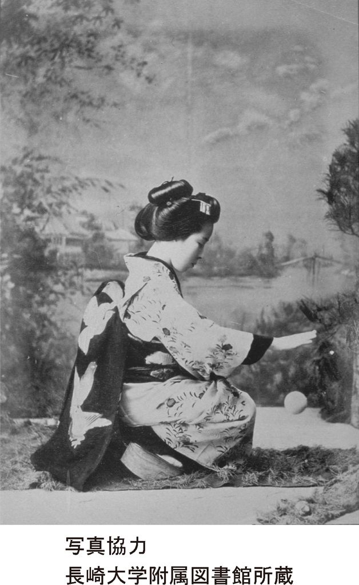
姥捨て山に連れて行った海老とたぬきの正体は？
小江戸、川越の城下には多くの旅籠や茶屋が立ち並ぶ。
その日茶屋に遊びに来た下級武士ふたりが酌婦と世間話をしていた。
「儂らは肥後から来たんじゃ」
「肥後？ 肥後どこさ」
女は肥後はどこにあるかと聞いたつもりだが、武士たちは肥後のどこかと勘違いした。
「熊本じゃわ」
女は適当にまた聞く。
「くまもとどこさ」
「せんばさ」
武士はふざけて女の口調を真似て答えた。女に言っても遠い肥後地名がわかるはずがない。しかし武士は女が気に入っていたので、故郷の洗馬山の話を女にとも、同僚にともなく話し始めた。
「洗馬山にはよい涌水がある。そこは昔から藩の厩があって馬を洗う場所でもある。だから洗馬山じゃ。涌水が流れ込む川ではたくさんの海老が獲れる。漁師たちは海老を獲って売りに来る。川海老にしては大ぶりだから煮ても焼いても食える。これがなかなかうまい」
女は音が同じの熊本の洗馬山と近くの仙波山を完全に取り違えていた。女の顔が曇った。
「洗馬山には鹿やたぬきが多い。鹿肉は売れるがたぬきの肉は売れない。だから猟師はたぬきを撃ったら自分たちで食うのじゃ。あれはうまいものではない。たぬきは煮ても焼いても食えん奴じゃ」
侍が笑った。
女の顔が真っ青になり、急に叫び出した。
「おらはやってねぇ！ おらじゃねぇ!!」
女は元は仙波山近くの小作農の嫁だった。働き者で器量よしだったが、子に恵まれなかった。家には夫の年老いた両親と祖父母がいた。義父は太っていて大食らいの酒飲み、まるでたぬきのようだった。
ある年に日照りが続いたかと思うとイナゴが大発生し、農作物は大打撃を受けた。家には米ひと粒はおろか、麦も稗も粟もなくなった。このままでは離農して、流民になるか、もの乞いになるしかない。
「せめて食い扶ちを減らさんと」
夫は寝たきりの祖父をうば捨てに行くと言った。女は泣いて止めたが、夫の気持ちは変わらなかった。夫は義父とふたりで仙波山に祖父を捨ててきた。その晩皆が泣いた。
さらに２日後には祖母を捨てに行くことになった。祖母はまだ元気だったため、手足を縛り目隠しをし、猿ぐつわをして捨てた。その晩義父母はひと晩中泣いていた。
祖母は長年の農作業のため腰が大きく曲がり、頭が膝にまで下がっていたため、村人からは、密かに海老と呼ばれていた。
「仙波山には海老がおる」
そう女は思った。
「まだ食い扶ちが多い」
父と息子は年老いた母親を山に連れて行くか、息子の嫁を売りに出すかという話をしていたが、夫があきれるほど簡単に義父は決断した。
「婆さんが先じゃ」
山間の谷の隅に姥捨ての場所がある。母親は覚悟を決めていたらしく、黙って連れて行かれた。息子は母親の前に里芋と山芋の煮つけを置いた。これまでの思い出が一気によみがえり、堰を切ったように涙が溢れ出て止まらなかった。
「はよ、行け。行かんか。女々しいぞ」
息子は、仕方なく母親の両足を斧の背で叩き折った。未練が残って捨てられた者が舞い戻らないようにとの、父親の教えだった。
痛みに耐えかねる母親の悲鳴を背に、息子は振り返らずに、泣きじゃくりながら一気に山を駆け下りた。
夫が家の前まで戻ると、父親が斧で薪を割っていた。息子の顔を見ると聞いた。
「海老はおとなしゅう捨てられたか？」
息子は黙ってうなずいた。父親は、
「そうか」
と言った。しかしすぐに斧を振りかざすと息子の脳天めがけて振り下ろした。息子は、ギャッと一声叫んで息絶えた。
女が家から飛び出して来て、夫が頭に斧が刺さったまま血まみれになっているのを見て動転し、その場に腰砕けに倒れ込むと叫んだ。
「ひ、人殺し！」
「静かにせんか！」
義父は息子を畑の隅に引きずって行き、穴を掘って埋めた。大きなお腹をゆらしながらふんどしひとつで泥だらけになっている義父を見て、女は大きなたぬきのようだと思った。義父は女を引っ張って家に入ると、そのまま犯した。
しかししばらく経つとまた金に困ってとうとう義父は女を売ることにした。明日には女衒が女を迎えに来るという晩、たぬき親爺は名残惜しそうに、いつもより意地汚く女を抱いた。焼酎を飲んで大いびきをかいて寝ている義父を見て、女は殺意を抱いた。
「性悪たぬきは殺さんと」
気持ちは冷え冷えと冷静だった。斧でたぬきの脳天を割るとたぬきはゴアッと言って動かなくなった。女はたぬきが死んだのを確認すると、死体を土間に運び、手足を順に切り落とし、最後に首を切り落とした。バラバラにしたからだを少しずつ運んで裏庭に埋めた。埋めた場所は気休めに落ち葉を集めて隠した。
翌朝早く女衒が来た。
「旦那はおらんのか」
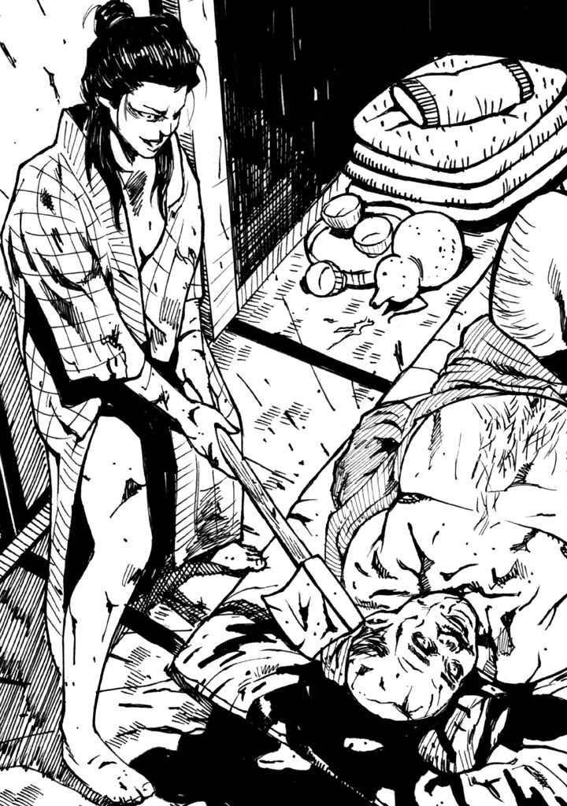
女は自分でも驚くほど冷静に答えた。
「朝早く本家の畑の手伝いに行きました。私は用意ができていますから、参りましょう」
女はこうして城下町に来て茶屋の酌婦になった。
酌婦はふと我に返り、武士に酒をついでやりながら歌い出した。
「仙波山には たぬきがおってさ
それを猟師が 鉄砲で撃ってさ
煮てさ 焼いてさ 食ってさ
それを木の葉で ちょいと隠す
あはははははははは！」
参勤交代の侍と遊女のかみ合わない怖い話
「あんたがたどこさ」は会話形式の歌である。そのためこれは参勤交代に川越藩の城下町に立ち寄った武士が遊女と話している会話が歌になったのではないかと考えられている。
しかし問いかけている方はどことなく気のない聞き方でもある。そして答える方は肥後の熊本から来たという。問題になるのは、答えた方が熊本のせんば（洗馬山）と言っているのに、そのあとの問いかけが途絶えている点である。その後一方的にせんば山（洗馬山なのか仙波山なのか）の海老とたぬきの話になる。これは、どちらが話しているのか？ 遊女か、それとも武士か？ 熊本と川越で共通の地名である、せんばを登場させることで話がかみ合わないが、そこがおもしろくもあり、ユーモラスなため、長く歌い続けられてきたとも考えられる。
「あんたがたどこさ」に隠された、殺されて喰われた海老とたぬきとは何を指すのか。一説にたぬきとは仙波東照宮に祭られている権現さま、たぬきおやじと言われた徳川家康をからかってるといい、その徳川家康にかわいがられ、のちに仙波東照宮のある喜多院の主となる大たぬき・天海大僧正のことを歌っているとの説もある。
いずれにしても、庶民が密かに歌に託した歌詞の中には言うに言えない深い憎悪や悲しみが潜んでいることだけは間違いない。
Ｃｏｌｕｍｎ１
聴くだけで絶望の境地に？ 自殺の聖歌と呼ばれた曲
♪ 暗い日曜日
作詞：ヤーヴォル・ラースロー
作曲：シェレシュ・レジュー
これを聞いたら誰もが死にたくなる？
世界中で自殺の連鎖を引き起こし、呪われた「自殺の聖歌」として発禁処分を受けた曲をご存知だろうか。その名も「暗い日曜日」。
「私はいつか日曜日に死のう...」
絶望的に歌うこの曰くつきの曲は、発売から80年近く経つ現在でも、「聴くと自殺する」と恐れられている。
１９３３年、ハンガリー。ひとりのピアニストが、喜びに浮き足立っていた。
彼、シェレシュ・レジェーが作曲した「暗い日曜日」のレコードが晴れて発売され、しかもかなり売れていたのだ。
勤め先のレストランのオーナー、ヤーヴォル・ラースローが歌詞をつけてくれたものの、曲調があまりにも暗く絶望的だという理由で、これまでは「世間には受け入れられないだろう」と発売に際しては批評家たちに鼻であしらわれていた。
ところが発表されると同時に大ヒットを記録。シェレシュの失恋を題材にしたこの歌が、今ではハンガリー中で流れている。
うれしい誤算に気をよくしたシェレシュは、この曲を生むきっかけとなった、かつての恋人にさっそく連絡し、再会の約束を取りつけた。あわよくば、復縁できることを願いつつ...。
だがその翌日、なんと彼女は服毒自殺し、遺体となって発見された。そして残されたメモには、ただひと言だけ記されていた―「暗い日曜日」と。
だがこれは悲劇の始まりに過ぎなかった。ブダペストでは、「暗い日曜日」に関連した自殺者が続出したのだ。
バーでこの曲の演奏を聴き、その場で拳銃自殺をした男性、この曲のレコードを抱きしめて入水自殺した少女、歌詞の一節を引用した遺書を残して自殺した男性...。
自殺者の数は恐ろしいほどの早さで増えていき、最初は単なる偶然だと笑っていたブダペスト市警も、ついには「暗い日曜日」の販売停止と演奏の禁止に踏み切ってしまった。
シェレシュの心は重かった。曲の成功により名声を手に入れた一方で、「自殺ソングの生みの親」になってしまったのだから。
「死の連鎖」はこれだけでは止まらなかった。
その美しくメランコリックな旋律で人々を魅了した「暗い日曜日」は、すでに海外へと渡っていたのだ。
１９３６年にはフランス人シャンソン歌手のダミアがフランス語版を発売し、大ヒットするとともにフランスでも自殺が続発。ベルリンやニューヨーク、ローマなどの世界各地でも、この曲に関連した自殺が相次いだ。
そしてやがて「自殺の聖歌」と呼ばれるようになった「暗い日曜日」は、英国のＢＢＣや米国のラジオ局で放送が自粛されるようになり、日本でも「厭世ムードを助長する」という理由で発禁処分が下された。
曲と自殺との直接的な因果関係は解明されていないものの、その後も自殺者は後を絶たず、その数は現在までで１００人以上にも上るといわれている。
本当に「暗い日曜日」には「人を死に至らしめる」力があるのだろうか？
これまでにビリー・ホリデイやエルヴィス・コステロ、日本では美輪明宏や夏木マリなど、世界中のミュージシャンにカバーされ、80年近くも歌い継がれていることを考えると、現代人にとっては「歌に殺傷力がある」というのはいささか信じがたい。
奇しくも、この曲が発売されたのは、世界的な不況やナチス・ドイツによる軍事侵攻の危機など、政治的な緊張が続いていた１９３０年代。つまり、自殺がはやる世相だったと言える。そのため、ただでさえ自殺願望を持つ人が多いところに、曲の陰鬱な旋律が彼らの「背中を押した」のではないかと考えると、これほどまでの自殺者が出たのもうなずける。
とはいえ、'70年代にこの曲をカバーしたジャズサックス奏者の阿部薫は、78年に睡眠薬の大量摂取により死亡、そして妻の鈴木いづみは１９８６年に自殺。
さらに、作曲者のシェレシュ自身も、１９６８年に自宅アパートの窓から飛び降りて自殺している。
やはり「暗い日曜日」には、説明のつかない「何か」が存在しているのかもしれない。
今なお多くの謎を残すこの名曲、聴くか聴かないかは、あなた次第である。
第２章 世界の童謡・民謡
ロンドン橋が流されなくなったのは、たくさんの犠牲があったから...
ロンドン橋
イギリス民謡
♪ ロンドン橋おちる
おちる おちる
ロンドン橋おちる
マイ・フェア・レディ
鉄を使ってかけろ
かけろ かけろ
鉄を使ってかけろ
マイ・フェア・レディ
鉄の橋は曲がる
曲がる 曲がる
鉄の橋は曲がる
マイ・フェア・レディ
金と銀でかけろ
かけろ かけろ
金と銀でかけろ
マイ・フェア・レディ
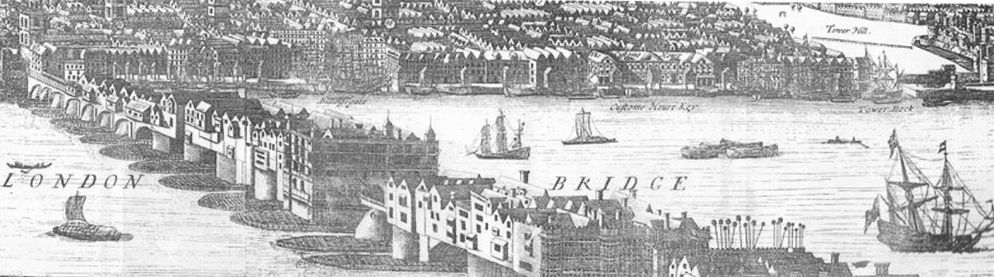
橋を守るために犠牲になったのは...
11世紀初頭のロンドン。ロンドン市民の表情は暗く沈んでいた。人々の生活に欠かせないロンドン橋が洪水で流されてしまったからだ。
ロンドンを北と南に分けるテムズ川。
そこに唯一架かるロンドン橋は、人々がロンドンの南北を自由に行き交い、荷物を運ぶために重要な橋だった。
最初にロンドン橋を架けたと言われているのはローマ人で、西暦46年とずいぶん昔のこと。しかし木造だったためデーン人の侵略によって焼き払われてしまった。
それ以降も橋は建てられたが長持ちせず、人々は船でテムズ川を行き来していた。
だからこそ、新しく建てられた大きなロンドン橋は人々に重宝されていた。
しかしその橋も木造だったため、大雨と洪水であっという間に壊れてしまったのだ。
そこでもう一度ロンドン橋が造られることになった。新しい橋が完成し、ロンドン市民は再びテムズ川を自由に行き交いできるようになった。
しかしそれも束の間、今度は近くで起こった火事の火が木造のロンドン橋に燃え移り、あっという間に燃えてしまった。
「一体どうしたら、何が起こっても壊れない丈夫な橋ができるのだろうか...」
あれこれと考えた人々はある結論に達した。
「ロンドン橋は呪われているに違いない」
「きっと神様や精霊が怒っているのだ。生け贄を捧げて、怒りを鎮めてもらわなければ！」
そこで出たのが、誰かを人柱にしてロンドン橋のたもとに埋めよう、という案だった。
しかし、誰が生け贄になるのか。
人々のためになるとはいえ、自分から名乗り出る者は誰もいなかった。誰もが人柱になることの恐ろしさを知っていたからだ。
当時のイギリスの人柱と言えば、苦しいので有名だった。
大きな樽の中に犠牲となる人を入れ、食料やロウソクなども一緒に入れて蓋をしてしまう。外から釘で打ちつけられた蓋は、もちろん中から開けることはできない。そしてその樽は大きく掘られた穴の中に入れられ、上から土をかけられる。
選ばれた生け贄は、樽の中で次第に薄れていく空気に長い時間苦しみながら、息絶える。一瞬で殺されるよりもずっとむごい死に耐えなければいけないのだ。
しかし、誰かが犠牲にならなければならない。
「ここは公平に、年齢も性別も身分も関係なく決めようじゃないか。よし、ゲームで負けた人が人柱になるのだ」
誰かふたりが手を組んでアーチを作り、他の人は歌いながら、アーチの下を順にくぐり抜ける。
「ロンドン橋おちる、おちる、おちる」
そして歌の最後に、アーチの下にいる人が捕まえられ、その人が人柱となるのだ。
「さあどうしましょう」
歌が終わると同時にアーチに捕らえられたのは、リリーという名の若くてきれいな娘だった。娘は悲しい表情になるが、人々のためなら、と生け贄になることを受け入れた。
「よし、リリーが犠牲になってくれるのだ。今度こそ何があっても壊れない丈夫な橋をつくろう」
リリーは抵抗することなく、食料とロウソクとともに大きな樽の中に入れられた。樽の蓋が外から釘でゴンゴンと力強く打ちつけられた。樽の中からは娘のすすり泣く声が聞こえる。
他の人たちは、そんなことは気にもとめず、樽を大きな穴に放り込んだ。
上からどんどん土がかけられて、やがて樽は見えなくなり、娘の泣き声も聞こえなくなった。
こうして、橋が壊れるたびに人柱が作られ、13世紀に石造りの橋ができるまで、何度もそれが繰り返されたのだ。
人柱として橋の下に埋められた人々は、今でもひっそりとロンドン橋を守っているのかもしれない...。
「お嬢さん」は誰のこと？
一説では人柱になる人を選ぶために歌われ始めたと言われているこの歌は、17世紀頃からイギリスの子供たちの間で歌われるようになった。
今では、英語圏の子供たちだけでなく日本でも親しまれているこの歌に、約10世紀ほど前の真実が隠されているなどとは誰も思いはしないだろう。
数々の諸説が囁かれるこの歌には、いくつかバリエーションがある。
よく知られているのは「ロンドン橋が おちる」というフレーズで始まるが、「ロンドン橋が こわれた」で始まるバージョンもある。
また、歌詞の一番の最後に「マイ・フェア・レディ（わたしの美しい貴婦人）」というフレーズがあるが、似たようなものとして「踊って越えよ リリーお嬢さん」というのもある。
そこでよく話題に上るのが、この「レディ（貴婦人）」もしくは「リリー」とは一体誰なのだろうか、ということ。これに関しても諸説あるが、ひとつは生け贄となった人のほとんどが若い女性で、その中にリリーという名前の人がいたのではないか、というものだ。
人柱に関しては、年齢や性別に関係なく選ばれたという説と、あえて若い女性が選ばれていたという説がある。
他にも、テムズ川に注ぐ「リー川」のことを指しているのでは、という意見もある。
また密かに噂されているのは、イングランド中部のウォーリックシャー州の「リー家」に由来しているのではないかという説だ。というのも、かつてリー家は屋敷を建てる際の土台に人柱を使ったと言われているからだ。
このように遊び歌として子供たちに無邪気に歌われているこの歌には、あらゆる噂と疑惑が隠されている。
ちなみに日本語訳もバラエティに富んでいる。
有名なのは北原白秋が「まざあ・ぐうす」（１９２２年）の中で紹介したものだ。一番は「ロンドン橋がおちた ロンドン橋がおちた」とたったの２行で終わってしまい、その後も２行の節が続く。
歌詞の順番もオリジナルとはずいぶん異なる。北原白秋はなぜここまで意訳をしたのだろうか...。
マザーグースで伝わる、継母に殺されて鳥になった女の子の歌
お母さんが私を殺した
マザーグース
日本語訳：永田衣緒奈
♪ お母さんが 私を殺した
お父さんが 私を食べている
兄弟姉妹たちは テーブルの下で骨を拾って
冷たい大理石の下に埋める
私が歌う理由とは
美しい鳥が低い枝にとまって悲しそうに鳴いていた。
旅人が不思議に思って近づいて、木の実を差し出すと、その鳥はうれしそうに旅人の手のひらにとまってそれを食べた。そして人間の声でこう話し始めたのである。
「私は一見ただの鳥に見えますが、昔は人間の女の子でした。私はある裕福な家に生まれました。お母さんは私を産んですぐに亡くなりました。お父さんとお母さんはとても仲のいい夫婦でしたが、なかなか子供を授からず、お母さんは毎日神さまにお祈りをしていたと聞いています。
必死の願いが神さまに届いてやっと私が産まれたのに、お母さんは病気で死んでしまい、最愛の妻を亡くしたお父さんは来る日も来る日も泣いていたそうです。
そこにある美しい女の人が現れ、やがてお父さんとその女の人は結婚して、私には新しいお母さんができました。
お父さんと新しいお母さんの間には、子供がたくさん産まれました。私と弟と妹たちは仲よく暮らしていましたし、お父さんも私たちみんなをかわいがっていました。
ただ、新しいお母さんだけは別でした。少し嫉妬深いところがあったお母さんは、私を憎らしく思っていたようで、私にはいつも冷たくあたっていました。
お父さんの財産をすべて私に持っていかれるのでは、といつも不安に感じていたに違いありません。
ある日、私が家に帰ってくると、お母さんがこう言いました。
『箱の中にりんごがあるからお食べ』
どうやら、弟や妹たちはすでにりんごを食べたようでした。テーブルの上にはりんごの芯が置いてあったからです。
私は言われた通り、大きな箱の蓋を開け、首を箱の中に突っ込んでりんごを探しました。すばらしい香りの赤いりんごが、まるでルビーのように輝いて並んでいました。
私は夢中で探していたので、背後からお母さんが忍び寄ってきたのには気づきませんでした。突然箱の蓋が思い切り閉められ、その勢いで一瞬のうちに私の首はバッサリと切り落とされたのです。
私の首がごろんと転がり落ちました。
その後、新しいお母さんが私にしたことをお話ししましょう。
お母さんは内心動転しながらも、何ごともなかったように私のからだを椅子に座らせ、床に落ちた首を拾うと、ハンカチで私のからだに縛りつけました。
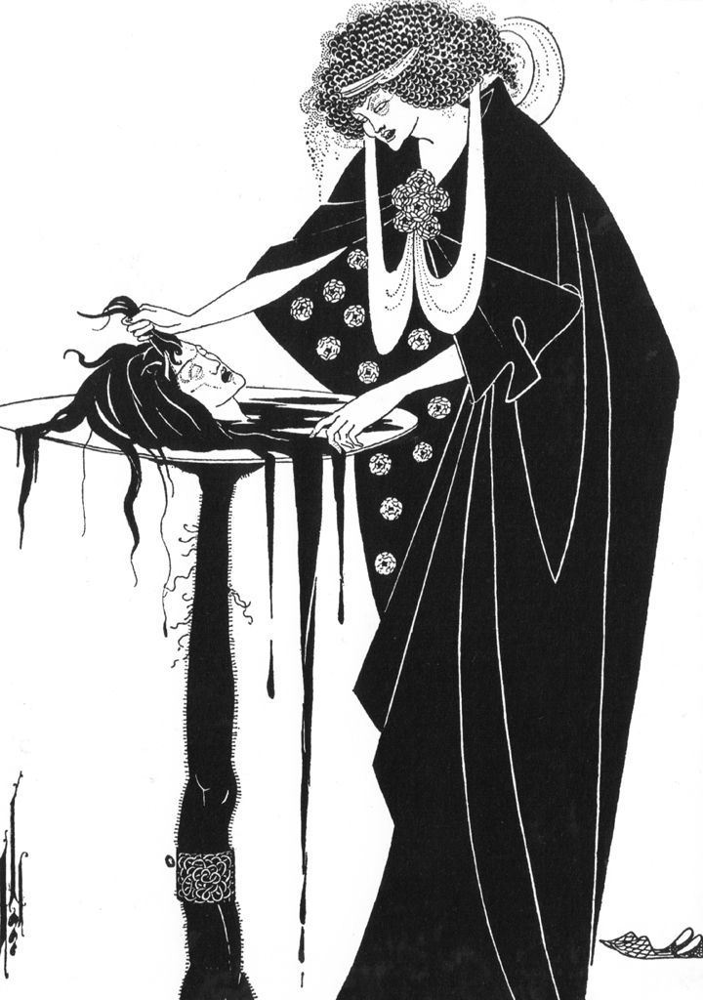
遊んでいた弟と妹たちが帰ってきて、私に話しかけましたが、もちろん返事はできません。
弟たちは私のからだを揺すりました。すると私の首が、またごろんと床に落ちました。
『どうしようお母さん。お姉さんが死んでいる！』
弟と妹たちが叫ぶと、新しいお母さんはこう言いました。
『なんてことをしたの！ でも仕方がない。隠すためにシチューに入れてしまいましょう』
そして私を切り刻んでシチューの中に入れました。
横で見ていた弟と妹たちは、大粒の涙を流していました。涙がたくさんシチューに入ったので、塩を入れなくても十分でした。
夜になり、仕事からお父さんが帰ってくると、新しいお母さんは私の肉の入ったシチューを出しました。何も知らないお父さんは、
『おいしい。なんておいしいシチューなのだろう』
と喜びながら、シチューをすべてたいらげてしまいました。お父さんは私の骨をしゃぶり終わるとテーブルの下に投げ捨て、弟と妹たちは泣きながらその骨を拾って、庭にある冷たい大理石の下に埋めました。
そして翌朝、気づいたら私は鳥になっていました」
旅人はその鳥に同情し、ありったけの木の実を差し出した。
鳥は旅人のほか誰も自分が鳥だったことを気づいてくれなかったと嘆き、気づいてもらうために毎日歌っているといった。
旅人が歩き始めると、その鳥が木の上でまた歌い出すのが背後で聞こえた。
「お母さんが 私を殺した お父さんが 私を食べている...」
古くからの伝承に基づいた歌
衝撃的な１行から始まるこの歌は、グリム童話の中の「ネズの木」という話から生まれたと言われている。
「ネズの木」では、主人公は男の子で、マリーという名の妹が登場する。男の子はとても美しく、一方マリーはあまり美しくなかったので、余計に継母は男の子を疎ましく思ったのだろう。男の子が殺され、シチューにされて食べられてしまったあと、妹のマリーはその骨をきれいなシルクのハンカチに集めて、庭のネズの木の下に埋める。すると翌朝、美しい鳥がネズの木の枝にとまり、美しい声で歌う。その歌の内容がこうなっている。
「母さんがぼくを殺した 父さんがぼくを食べた ぼくの妹マリーは シルクのハンカチにぼくの骨を集め それをネズの木の下に埋めた キー キー ぼくはなんて美しい鳥だろう！」
この話の結末はいくつかあり、鳥になった男の子が義母の頭に石臼を落として殺してしまい、生き返るという結末や、鳥になった男の子が遠くへ飛び去ってしまう結末などが伝えられている。
その「ネズの木」に出てくる歌の一部が切り取られ、マザーグースとして広まったこの歌は、親の言うことを聞かないとこんなふうに食べられてしまうぞ、という子供に対する警告を込めて今でもよく歌われているという。
この歌を聞けば、どんないたずらっ子だっていい子になるに違いない。
シシリア島シラクサの聖女、聖ルチアの血まみれの悲劇
サンタ・ルチア
ナポリ民謡
日本語訳：小松清
キリスト教に殉死したルチアの物語
西暦３０４年、帝政ローマのディオクリティアヌス帝の時代、地中海に浮かぶシシリア島でのこと。当時、シシリアはローマ帝国の属州で、島の南東部のシラクサは都市国家として繁栄していた。民はローマの神々を信仰し、帝国は異教徒、とくにキリスト教徒を激しく弾圧していた。
シラクサに住むルチアは、父の死後、母エウティシアとふたりで暮らしていた。貴族だった父がまとまった財産を残してくれていたので、生活の心配はなかった。しかしここ４年ばかり、母親は原因不明の腹の痛みに苦しんでおり、そのことでルチアは心を痛めていた。そして聖アガタの日に母を連れ、島にあるアガタの墓を訪れて祈った。シシリアで奇跡を起こした聖アガタが母を癒してくれると思ったからだ。
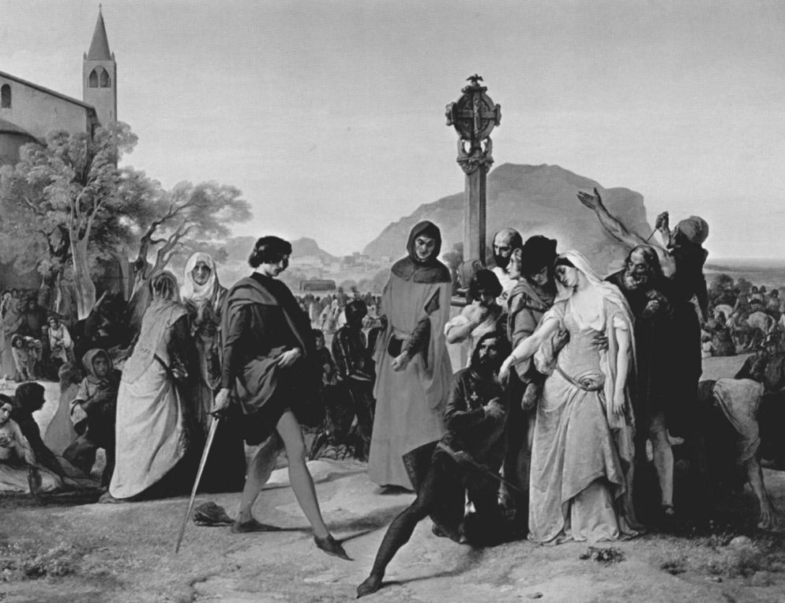
教会で一晩中祈り続けていると、突然眠気に襲われ、教会の椅子で眠り込んでしまった。すると、夢枕に聖アガタその人が現れてこう告げた。
「ルチアよ、あなたはもう奇跡の力を持っています。私に祈るまでもなく、あなたの母親は快癒していますよ。さあ起きなさい、あなたは私のようにシラクサの栄光となるのです」
目を覚まして隣の母の顔を覗き込むと、青白かった母の顔がバラ色になっており、もう病人でないことがはっきりとわかった。
さて、快癒したエウティシアは、娘をローマ人と結婚させようとした。しかしルチアはそれを拒んだうえに、逆に母を説得にかかった。
「お母さま、あなたは聖アガタを通じて神の栄光によって快癒したのです。私はそのとき神の子キリストと結婚しました。私たちは、お母さまの病を癒していただいたことを感謝して、貧困に苦しむ人たちに施しをするべきだと思います。私の持参金を用意してくださったのなら、そのお金を慈善に遣いましょう」
エウティシアは、それももっともだと思い、ルチアを嫁にやろうと考えていた男に断りを入れた。そして家にあるめぼしい財産をすべて困っている人たちに配ってしまった。
だが、美しいルチアも持参金も手に入らないことに怒った男が、当局に密告した。
「禁じられているキリスト教を信仰しているルチアを、神への生け贄として火あぶりにすべきだ」
男の意見は取り上げられ、ローマ兵がルチアを引き立てに来た。
すぐさま役所に連行され、そこで裁判にかけられた。結果は有罪、その場で改宗を迫られた。もちろんルチアは応じない。聖アガタのお告げのことを話すと、
「そうか、お前が聖人だと申すなら、今後は神殿で巫女として勤めよ」
判決が下った。
当時の神殿の巫女は、お告げをするだけでなく、布施を払って求める者にはからだを開く娼婦のような職業だった。それにそもそも異教徒の神殿で働けるわけもなく、黙ってうなだれるしかなかった。
動こうとしないルチアを、役人が引き立てた。だが精霊に満たされていたため山のように不動だった。とうとう太い縄でしばり、牛が数十頭で引いたがだめだったので、最後に軍隊が来て縄を引いたが彼女は動かなかった。しびれを切らした役人が
「動かなければこうだ」
と叫ぶなり、剣を両目に突き立て、ぐいと力をかけたため、ルチアの眼球はえぐり出された。
眼球は床に落ち、そこに血だまりができたが、鮮血を拭おうともせず、じっとそこに座ったままだった。
とうとうその場で処刑することが決まり、首切り役人が近づいて来た。そこでまた奇跡が起きて、目のないルチアもすべてを見ることができた。そして首切り役人の服の色まで言い当てたので、周囲は水を打ったように静まった。
役人は大太刀を振りかざしたが、振り下ろすときにルチアが顔を上げて群衆に向かってしゃべりかけたため、狙いがそれて太刀はのどを半分かすっただけだった。半分だけといっても首が半分切断されているから、たちまち血が噴き出し、血まみれになった。
だがルチアは表情も変えず、こう叫んだ。
「キリスト教を迫害したディオクリティアヌスが退位した！ 私は死んで聖ルチアとなり、海をゆく民の守護者となるでしょう！」
ごぼごぼと鮮血が両目から、そしてしゃべる口からも流れ落ちた。
血まみれのルチアが叫び終わると同時に、建物の前に立派な軍人の一行が馬で到着する気配があった。彼らはローマからの使者で、馬をつなぐとまっすぐ建物の中に入って来て群衆に告げたのである。
「ディオクリティアヌス帝が退位、ガリレウス帝が即位された。ガリレウス帝はキリスト教の信仰を認められた！」
思わず群衆から「おお...！」という感嘆の溜息が漏れた。ルチアは神からの啓示を受けていたのだ。
キリスト教が許された、という言葉に安心したかのようにルチアはがっくりと膝を折ってその場に崩れ落ちた。皆はキリスト教の司祭を呼びに行き、やがてやって来た司祭が近づいて瀕死のルチアに聖体を授けた。安心したかのようにルチアは微笑み、そのまま息絶えた。人々はそこに教会を建てて弔ったという。
船乗りの守護者になったルチア
ナポリ民謡のカンツォーネ「サンタ・ルチア」は、日本に伝わる歌詞ではいかにもイタリアらしい明るい歌だが、18世紀に歌われていたナポリ語の原曲はまったく違う。キリスト殉教者ルチアの血まみれの悲劇を歌っているのだ。
聖ルチアはすなわちサンタ・ルチア、ナポリの港にその名が残る。原曲の旋律にイタリア語の新しい歌詞をつけ、ナポリに港をたたえる船乗りの歌として19世紀半ばの音楽祭に出され大好評、そこから広まったということだ。
日本語にはじめて訳されたのは昭和初期とも言われるが、よく知られているのは太平洋戦争直後に国定教科書に載った小松清のものだろう。
さて、聖ルチアはナポリの船乗りの守護聖人であると同時に「ルチア」がイタリア語の光を指すことから、目を患う人々の守護聖人でもある。ルチアの肖像画は、しばしば自分の眼球が乗った金の皿を捧げ持って描かれる。
聖ルチアは北欧でも大変人気で、日照時間が最も短くなる冬至の頃、光のページェント聖ルチア祭が催される。
なお、ルチアの出身地シシリア島のシラクサはアルキメデスが生まれた場所としても有名で、現在は世界遺産に指定されている。
イギリスとスカンジナビアに伝わる童謡の起源
ジャックとジル
マザーグース
♪ ジャックとジルは バケツに水を汲むために丘に登った
ジャックが転んで頭を割った
ジャックのあとから ジルもころころ転んだ
ジャックはなんとか 起き上がり
お家をめざして 駆け出した
そのままベッドに 飛び込んで
お酢と黒コショウの 湿布を張った
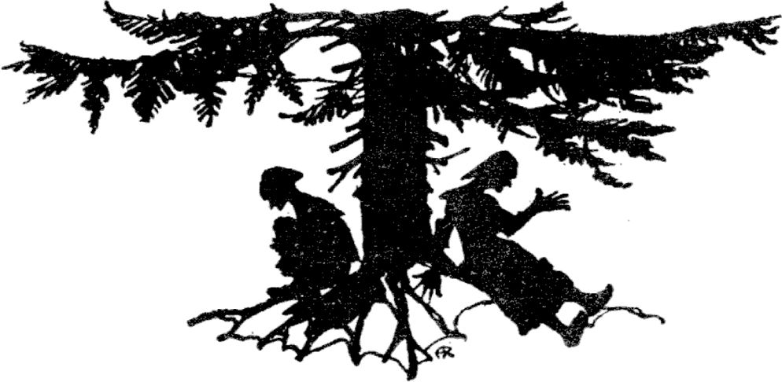
イギリスの村に伝わる話
ジャックとジルの歌は、ある村の若い男女の悲劇に基づいているという説がある。
15世紀ごろ、イギリスのサマーセット州のキルマースドという小さな村に、ジャックという若い男とジルという若い女が住んでいた。ジャックとジルは愛し合っていたが、なかなかふたりきりで会うことができなかった。
村の近くには丘があった。ゴツゴツした岩でできた丘で、よく落石が起こることで有名だった。
丘の上には井戸があり、たまに村人が水を汲みにいったが、村の人々は落石を怖れていたので丘には滅多に近づかなかった。それが好都合で、ジャックとジルはふたりきりで会うために、井戸へ水を汲みに行くと言って、よく丘へ出かけて行った。
ある日、いつものようにジャックとジルはバケツを持って、ふたりで仲よく丘へ登って行った。ところが運の悪いことに、登っている途中で大きな石がゴロゴロと落ちて来た。人間のからだほどもある大きな石は勢いよく転がり落ちてきたため、ジルが気づいたときにはすでに遅かった。
「ジャック、危ない！」
ジルは大きな声で叫んだが、石はジャックを直撃した。頭を割ったジャックはひっくり返ってその場で死んでしまった。ジャックの顔は、誰だかわからないほどに潰れていた。
愛するジャックを亡くしたジルは悲しみに暮れ、毎日泣いて暮らした。実はジルはジャックの子供を身ごもっていたのだ。ジルは男の子を産んだ後、まるでジャックの後を追うかのように、病気で死んでしまったそうだ。
ふたりの悲しい男女の話は、村人の間で伝えられ、いつからかこの歌が歌われるようになった。今でも丘にはジャックとジルがよく訪れたといわれる井戸が残されている。
スカンジナビアの神話説
この歌はスカンジナビアの神話に基づいているのではないか、という説もある。
あるところに、母親を亡くした男の子と女の子の兄妹がいた。名前はヒュキとビル。父親はふたりの子供を育てるためによく働く人だった。
ある日、父親は新しい妻をもらい、間もなく新たな子供を授かった。それまでは献身的に働いていた父親だったが、新しい子供が産まれたとたん、ヒュキとビルにたくさん仕事をさせるようになった。ふたりは朝から晩までろくにご飯も食べずに働いた。
ある夜、父親が、
「丘に行ってバケツにいっぱい水を汲んでこい。急いで戻ってくるんだぞ」
と、ヒュキとビルに命じた。
夜であたりは真っ暗だったにも関わらず、ふたりは天秤棒にぶら下げた大きなバケツを小さな肩にかけ、汗をかきながらせっせと急な坂道を登っていた。
「ヒュキ、もう私はこれ以上歩けないわ。今日もご飯をもらえなかったから、お腹もぺこぺこよ」
と、ビルが兄のヒュキに言うと、
「もうちょっとの辛抱だよ、ビル」
とヒュキは励ました。
その様子を空から見ていたのは、月の神マニ。
ふたりが父親から、ろくな食事も与えられず仕事をたくさん押しつけられて、苦しんでいるのを知っていたので、ふたりを助けようと銀の馬車で空から降りてきた。
「私と一緒に月へ行きましょう」
ふたりは恐れながらもマニについて銀の馬車に乗った。
その後、ヒュキとビルはマニのおつきになって月で暮らしたと言われている。ふたりは二度と地上には戻ることはなかった。
今でも満月の夜になると、ヒュキとビルが天秤棒にバケツをぶら下げて、肩に背負う姿の影が見えるそうだ。
どれが本当？ さまざまな起源説
マザーグースの中でも最も人気があり、長年に渡って親しまれている歌のひとつ「ジャックとジル」。
最初に登場したのは１７６０年代のジョン・ニューベリーによるマザーグースの本だと言われている。
第１番に出てくる water と after は、17世紀前半の英語ではそれぞれ wahter、ahter と書かれ、このふたつの単語は韻を踏んでいる。このことからも、17世紀前半に生まれた、もしくは古くから歌われていた歌がこの時期にまとめられたと考えられている。
その人気のゆえにあらゆる説が唱えられている「ジャックとジル」、先に紹介されたふたつの説は中でも有名だがいずれも信憑性はない。
その他にもこの歌はフランス革命時代のことを歌っているのではないか、という説もある。ジャックはルイ16世を、ジルは王妃マリー・アントワネットをそれぞれ表し、ルイ16世は王位から退き、マリー・アントワネットも続いてその地位から転落してしたことが歌詞にぴったり合うというのだ。
しかし、先にも述べたようにこの歌が生まれたのは17世紀前半。フランス革命は１７８９年に始まった。したがって、この説は後から考え出されたものだろう。
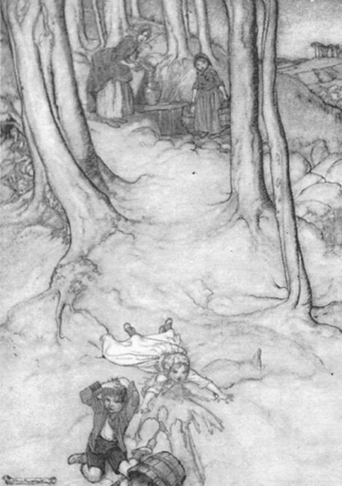
ジャックとジルという男女の組み合わせは、英語圏では昔からある。シェイクスピアの「真夏の夜の夢」には「ジャックはジルを手に入れる」というセリフがある。また、英語のことわざには「ジャックはジルをすてきにする」や「すべてのジャックにはジルがいる」というものがある。
これはそれぞれ、「妻は夫次第」、「どんな男にもお似合いの女がいる」の意味で使われる。
マザーグースに登場するジャックとジルを兄妹と考える人もいるようだが、これらを踏まえると男女のカップルの歌だと思う人がほとんどだろう。
この歌はパントマイム劇としてロンドンのハーマジェスティ劇場で１９４２年に登場した、と記録に残っている。
また最近のものでは、映画「英国王のスピーチ」（２０１０年）の中で、ジョージ６世が話し方の訓練をする際にこの歌の１節が唱えられている。それだけ英語圏の人々の生活に浸透しているということだ。
ぜひ注目して見ていただきたい。
ヨーロッパ中を吹き荒れた黒死病の脅威がユーモラスな歌に
バラの花輪だ 手をつなごうよ
マザーグース
♪ バラの花輪だ 手をつなごうよ
ポケットに花束をさして
ハックション ハックション
みんなころぼう
黒死病がロンドンを襲った夏
１６６５年の５月。
人で溢れかえるロンドンで黒死病の感染者が何人か発見され、人々を恐怖のどん底に突き落とした。なぜなら、それまでもロンドンでは何度か黒死病が流行し、たくさんの人が死んでいた歴史があるのだ。
最初に発生したのは、ロンドンの中でも貧しい人々がひしめき合いながら暮らす下町。それが徐々にロンドン中に広まっていった。
「おーい、今週も張り紙が出たぞ！」
この呼びかけのあと、街の広場は一気にざわつく。
この広場には毎週その週の死者数を発表する張り紙が出されるため、市民は毎週怖々と張り紙を見に来るのだった。
「今週は１０００人も亡くなったそうだ」
ピーターのお父さんが家に帰ってきて、家族に告げた。
「きっと神さまが人間の罪に対してお怒りになっているに違いないわ」
お母さんは嘆いた。
黒死病の原因がわかっていなかった当時、それは神様の罰だと思われていた。もちろん治療法もわからなかったため、黒死病にかかった人はどんどん死んでいった。
息子のピーターは、幼いながらも黒死病にいつか感染してしまうのではないか、と怖れていた。
人々の間では、甘い花の香りを嗅ぐと感染を防げるというおまじないが信じられていたのでピーターのお母さんは、家族全員に甘い香りのする薬草の束を作り、外出のときには必ずそれを持たせた。
しかし、そのおまじないは効かなかったようだ。
不安は現実となり、とうとうピーターが黒死病に感染してしまった。
黒死病というその名の通り、次第に皮膚が乾燥して紫黒色になった。高熱が出て、口の周りはヒリヒリと痛み、赤い発疹が体中にできた。そして末期の症状であるくしゃみが止まらなくなった。
ピーターと家族は家に閉じ込められ、窓も扉も外から押さえられ、窓には赤で大きな×印がつけられた。街の誰もが一家に近づかなくなった。
ピーターの症状は悪化するばかりだった。
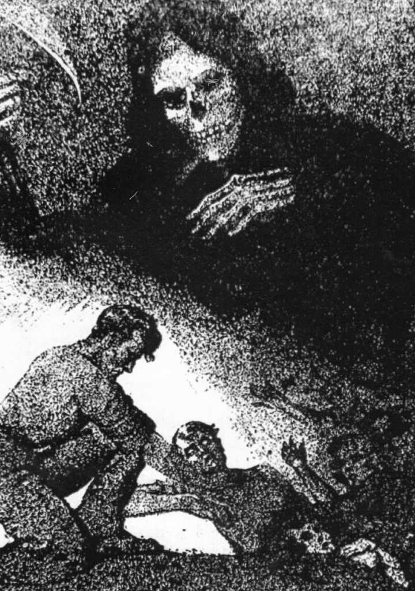
そして助かる望みが消えたとき、ほかの子供たちの感染を怖れた両親はピーターを見捨てて、夜中にこっそりと家を離れてしまった。
ひとりで家に残されたピーターがぼんやり窓の外を見ると、無邪気な子供たちが手をつないで輪を作り、歌ってスキップをしながらくるくると回っていた。
「楽しそうだな、ぼくも外で遊びたい...」
しかし、よく見ると、子供たちの円の中心にあったのは死体だった。
明るい歌詞は、よく聞くと黒死病のことを歌っていた。
暗く沈んだロンドンの空に、明るくて愉快な子供たちの歌声が残酷に響いていた。
ピーターはその歌を聴きながら、孤独に息を引き取った。
このように死んでいったのはピーターだけではない。その夏は、まるでドミノ倒しのように、ロンドン中で人がパタパタと倒れ、道端には死体が転がり、あちこちに死体の山ができていたという。
この年の黒死病の大流行がやっと収まったのは、秋になってからだった。
中世のヨーロッパを震撼させた病
作者が不詳のこの歌は、英語圏の子供が手をつないで輪になって回りながら歌う遊び歌として古くから伝えられている。
一見かわいらしい歌詞には、かつてヨーロッパを広く襲ったペスト流行のキーワードが隠されているという説がある。リング（輪）はペストの感染者が感じる口の周りのヒリヒリとした痛み、そしてローズ（バラ）はペストの症状の赤い発疹を意味する。Roses と韻を踏む posies（花束）は、ペストの予防になると信じられていた薬草の束。astishoo（ハックション）はまさにペストの末期症状だ。
そして最後の１行、「オール・フォール・ダウン（みんなころぼう）」は、ペストによってたくさんの人がひっくり返ったということ、つまり死んでしまったことを意味している。
この最後の１行にはもともとは「dead（死んで）」という単語が入っていたという説もある。そう考えると、すべてつじつまが合う。
ロンドンでは１６６５年だけでなく、14世紀から17世紀にかけて何度も黒死病が流行した。さらにロンドンに限らずイギリス国内の数カ所、そしてヨーロッパ各国でも大流行が起こった。したがって、このマザーグースの歌は、必ずしも１６６５年のロンドンでの大流行の後に作られたと特定することはできない。
また、この歌がはじめて本に登場したのは１８８１年のこと。ケイト・グリナウェイのマザーグースの本だった。黒死病の流行からかなり時間が経ってのことである。そのため、専門家の中には、この歌と黒死病の流行との関係は見あたらない、と主張する人もいるようだ。
イギリスの作家ダニエル・デフォーが、ロンドンの黒死病大流行について語った「黒死病の年の記録」（１７２２年）では、黒死病の蔓延によって恐怖に駆られて集団的な妄想に走る人々や、そんな人々の弱みにつけこんだ悪徳商法、怪しげな占術師がたくさん現れたと書かれている。
その夏だけで10万人以上が死んだと言われている。
ロンドンの状態は悲惨だったに違いない。そんな恐怖を打ち消すために、人々は愉快でかわいらしい歌を歌うようになったのかもしれない。
Ｃｏｌｕｍｎ２
「お父さん、助けて。魔王がぼくをさらいにくるよ...」
♪ 魔王
作詩／ヨハン・ヴォルフガング・フォン・ゲーテ
作曲／フランツ・ペーター・シューベルト
日本の義務教育で耳にする歌曲
「魔王」は中学の教科書に載っていることから、日本でも大変有名な歌曲。ゲーテが１７８２年に書いた詩で、シューベルトのみならず、たくさんの作曲家がそれに曲をつけている。
詩は、語り手、少年、父親、魔王の会話形式になっている。
そこにはこんな物語がある。
木立の続く暗い夜道。
闇の中で風を切って、馬を駆ける男がひとり。
男は右手で手綱をさばきながら、左の腕でしっかりと小さな息子を抱きかかえている。
息子を連れて早く家に帰らなくてはならない、それも一刻も早く。
父親が息子をしっかりと抱き寄せることで、父子はぬくもりを分け合っているが、とくに父親は、小さな息子のからだが熾った炭のように火照るのをつらい思いで感じていた。
息子は熱が高かった。
父はしがみつく息子に声をかけた。
「坊や、どうして顔を埋めているのかい？ 何が怖いんだい？」
「お父さん、聞こえないの？」
弱々しい声で息子が問う。
父は息子の言う言葉の意味がわからない。
「何を言っているんだ？ 私にはわからないよ」
「魔王だよ、お父さん、魔王がいるのが見えないの？」
父親はぎゅっと息子を抱く腕に力を込めた。
「気のせいだ、そんなものはいないよ」
息子は弱々しく、けれども確信に満ちた声でこう言った。
「ほら、そこ...。王冠と長いローブをまとった魔王が見えないの？」
「大丈夫、あれは夜の闇に揺れる夜霧の影だよ」
父親の腕の中で息子が小さく震えた。
少年にははっきりと見え、聞こえていたのだ。魔王が自分に手を差し伸べながら、こうささやいているのが。
「かわいい坊や。こっちにおいで。私と一緒に遊ぼう、楽しいぞ」
少年はあらがうように、首を横に振って魔王の手から逃れようとした。
「こっちの岸にはお花がたくさん咲いているんだよ。私の宮殿にはきみによく似合うすてきな金糸の着物がどっさりあるよ」
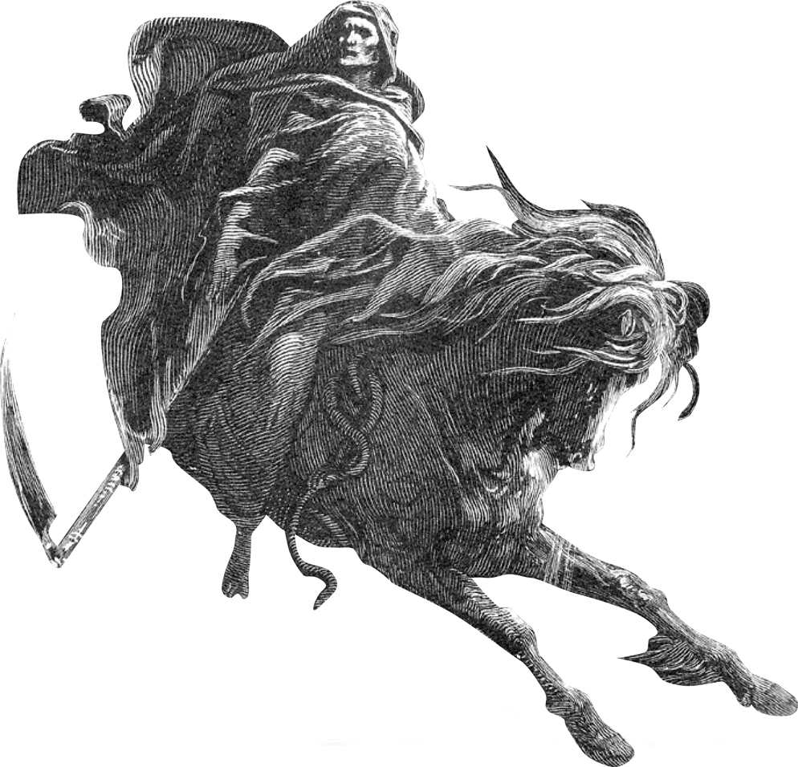
少年は荒い息づかいの下で父親に訴える。
「お父さん、お父さん！ 聞こえないの？ 魔王の声が」
父親にその声が届いたのかどうか、手綱を引っ張るそのたくましい腕は馬を駆り続ける。
「お家で母さんが待っているよ、心配いらないよ」
「お父さん、魔王がぼくに恐ろしいことをささやいてくるよ、楽しいことを約束するってささやいているんだ。なぜ聞こえないの？」
「怖がらなくて大丈夫だよ。あれは木枯らしが風に鳴っている音だ」
少年は、困ったようにフウッと小さなため息をもらす。
父親の腕に少年の息がかかり、それがふいごのように熱いのに気づいて父親は慄然とする。
「お前はなんて美しい少年だ。さあ、一緒に私の国へ行こう」
父子の周囲で風が騒ぎ、ざわざわと木の葉が揺れて不気味な音を出す。父親が脇腹を蹴ると、馬は目を血走らせて速度を速めた。
「坊や、さあ、私の娘が待っているんだ、お前をもてなしてくれるよ。私の娘は夜の踊りを踊るよ。お前と一緒に踊ったり、くすぐって遊んだり、歌を歌って寝かしつけてくれるよ」
魔王は長いローブを大きく揺すった。漆黒のローブの裏には深紅の裏地が張られていて、ローブが揺れるたびに赤い舌のように覗くのだ。
少年はおびえて、父親に必死で訴えた。
「お父さん、お父さん、ぼく、魔王に連れていかれるよ。お願い、助けて...」
父親は、怖がることはない、というように、優しく少年を左腕の中で揺する。
だが、少年の目は暗闇の一点に釘づけになる。木の下の暗がりに、女の影を見つけたのだ。女は少年に向かってヘビのような目つきで微笑みながら、ゆっくりと踊り始めた。
「お父さん、お父さん、あれが見えないの？ 魔王の娘があの闇の中に立っているのが！」
「坊や、わからないのかい？ あれは古い柳の木の下で細い枝や葉が揺れているだけなんだよ」
そのとき魔王は叫んだ。
「少年よ、お前は若くて美しくて魅力的だ、お前をこの腕に抱きしめたいんだ！」
その叫びはもちろん、父親には聞こえるはずもなかった。木々のそよぎとしか...。
「いやだよ、ぼくは行かない」
熱に苦しむ少年の抵抗はむなしい。
その子はもう、狙いを定めた毒蛇が、ゆっくりと近づいてくるのを身を固くして待つ小ネズミと同じだ。
「いやだというなら...無理矢理連れて行くまでだ！」
「お父さん、助けてよ、魔王がぼくを引っ張ってる。怖いよ」
少年のつぶやく声が弱々しくて、父親は恐怖に駆られた。
早く帰らなくては。
喘ぐ我が子をもう一度しっかりと抱きかかえて、再び馬をせき立てた。
嵐はうなりながら父親と息子の周囲に風の渦を作った。父親の心はせいた。
息子はもう何も言わない。小さなからだは父の腕の中に体重を預けてぐったりしていた。馬の駆ける振動に合わせて、少年の金色の巻き毛が上下する。
暗闇のトンネルの彼方に小さな揺れる明かりが見えたのは、それからずいぶんしてからのことだった。
家にたどり着くと、父親は息子を抱えて馬から飛び降りた。
母親がランプを持って待っていた。
ランプの明かりのもと、父親はベッドに息子のからだをそっとおろす。
母親は手に持ったランプを息子に近づけ、顔を覗き込んだ。そしてランプを持っていない方の手で、そっと額に触れた。
「この子、冷たい。それに息が...息をしていないわ」
驚愕のあまり見開いた父親の瞳の奥に、高笑いしながら息子の亡骸を抱えて暗闇の彼方へ飛び去る魔王の姿がちらりと映った。
息子を失う父親の悲しみを描いた傑作で、ゲーテも何人かの息子を失っていることから実体験ではないかとの説も根強い。
しかし、ゲーテがこの詩を書いたのは１７８２年。デンマークの民話から材をとって「漁師の娘」という歌曲の一部として作られている。ゲーテが内縁の妻クリスティアーネと会うのは１７８８年のこと。長男のアウグストが翌年生まれたのを皮切りに、彼女との間に次々と４人の子供が生まれたが、アウグストを除いて全員夭折してしまった。
子供が目の前で息を引き取る父親の悲しみは知り尽くしているゲーテだが、時期的にそれはもっとあとのこと。「魔王」が亡くなった子供に触発されてできたと考えるのは誤りだ。
気味の悪い「魔王」の物語だが、日本の中学生にとっては恐ろしいというよりも「突っ込みどころ満載」の歌曲らしく、イントロのあの独特で不気味な「デデデデデ...」という音と、あまりにもわかりやすい魔王のキャラクター（なぜすぐ少年には魔王がわかったのか、という突っ込みとともに）がしばらく冗談として教室ではやるというのだから、現代っ子にとっては不気味さもまた楽しさなのかもしれない。
第３章 史実が歌になって
今もイギリスのホテルに残る本物のおじいさんの時計
大きな古時計
作詞／作曲：ヘンリー・クレイ・ワーク
日本語大意訳：瀬戸環
♪ 戸棚に置くには大きすぎたおじいさんの時計
だから90年もの間床に置かれたままだった
おじいさんと並ぶとおじいさんの身長１・５倍もあったけど
重さはおじいさんと１ペニー銅貨ほども違いやしなかった
おじいさんの生まれた日の朝に買ってきた時計
時計はおじいさんの宝物、とても誇りにしていたよ
90年も休まずに、チクタクチクタク
おじいさんの人生を刻むかのようにチクタクチクタク
時計の振り子が前後に動くのを見ながら
おじいさんは少年時代を過ごしたのさ
おじいさんの子供時代も青年時代も時計はすべて知っている
喜びも悲しみも、時計が分かち合ったんだ
おじいさんの結婚式の日
ドアを開けて入ってきた花婿と花嫁を
時計は24回の鐘を鳴らして祝福した
おじいさんはいつもこう言っていた
今まで雇った人の中で時計ほど忠実な者はいなかったと
時間を決して無駄にしないし
望みといえば週に１回ネジを巻いてもらうことだけ
夜に突然時計がチャイムを鳴らした
もう４年も音がしなかったのに
ぼくたちにはわかったんだ、おじいさんの魂が天に昇っていくのが
そう、とうとうそのときが来たことを
ある日止まって、二度と動かなかった
おじいさんが亡くなったときに
イギリスの民宿で得たインスピレーション
１８７４年のある日のことだった。作曲家で演奏家でもあったヘンリー・ワークは、イギリス公演でイギリス中を回る旅の演劇一座と一緒に、スコットランドとの国境に近い北の町・ダーラム州ピアスブリッジにやって来た。その夜の宿泊先はジョージホテルという小さな民宿だ。ドアを開けて宿に入ったとたん、ワークの目がロビーの一角に釘づけになった。そこには、存在感たっぷりの大きな長置き時計がでんと置かれていたのだ。しかもそれは止まっている。こんなに大きくて役に立たないものをなぜ置いておくのか、ワークは好奇心にかられた。
チェックインをしたあとでさりげなく時計のことを尋ねると、フロント係が微笑んだ。
「お客さま、あの時計が気になられるのでしたら、このあと主人がご説明いたしますよ」
夕飯を終えてロビーでくつろぐワークのうしろに初老の男が近づいてきて、自分は宿の主人だといってワークに握手の手を差し伸べた。
「当ホテルの古時計のことをお知りになりたいとおっしゃられたお客さまですか？」
ワークがそうだと答えると、主人はワークの許しを得て向かい側のソファに腰かけ、こんな不思議な話を始めたのだった。
「私がこのホテルを買いましたのは今からほんの数年前のことです。それまでは、ジェンキンス兄弟がホテルを経営していました。仲のいい兄と弟で、私の友人でもありました。どちらも独身でしたが愛想がよくてねえ、生まれついての接客業というか、ホテル経営も好きでやっている風でしたよ。ホテルはふたりが子供時代から趣味で集めた切手を額に入れて飾ったり、遠い外国を旅したときに買ってきたお土産を飾ったり、落ち着いた雰囲気ながら、なんだかおもちゃ箱みたいなインテリアで楽しかったですよ。そうそう、時計もそうでした。ふたりはあの置き時計をとても気に入って、誇りにしていたんですよ。７フィート近い堂々たる長置き時計でしょう。時間も正確でねえ、馬車を待つお客さんに時間が見やすいと好評だったんですよ。ジョージホテルの顔といってもよかったですな。
それがねえ、ある日本当にぽっくりと弟さんが亡くなりなさった。風邪をこじらせて肺炎になって...あれよあれよという間に。突然て感じでした。そうしたら、なんと、あんなに正確だった時計が急に遅れ始めたじゃありませんか！
はじめは１日にほんの数分、従業員があれ、という感じでネジを巻くたびにちょいと指で針を押していただけでしたがね。弟さんの葬儀がすむ頃になると、遅れがだんだん大きくなって、ジェンキンス兄はとうとう時計を修理に出したんです。時計は治って戻ってきたんですが、結局遅れるのが止まらなかった。修理士に来て調べてもらったんですがだめで、とうとう１日に15分も遅れるようになりましてね。手の施しようがないというので、結局毎日９時頃に時計を合わせて使っていたらしいんです。
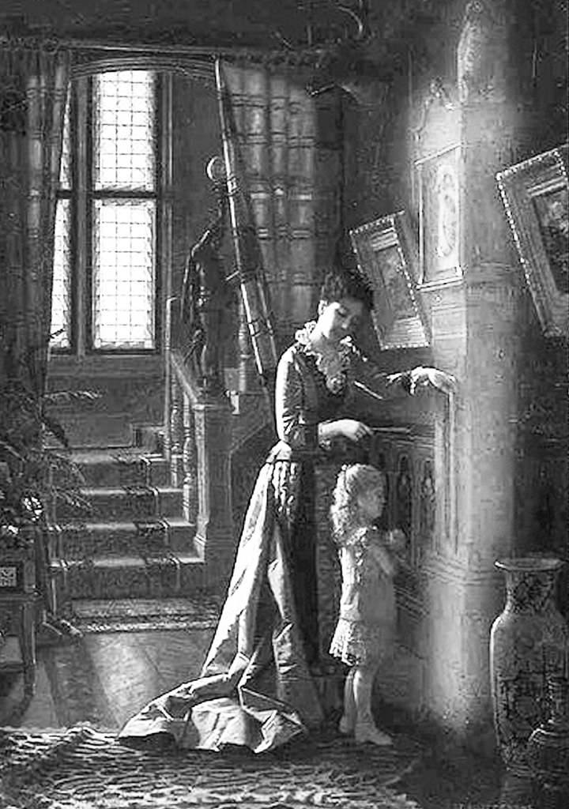
でもねえ、仲のいい家族というのは夫婦でも兄弟でも同じなんでしょうか、弟さんが亡くなって１年ほど経った頃に、お兄さんも病に伏しましてね。見る見るうちに弱っていくのが友人たちにはわかりました。なにせ、身内がいない方でしたから、私たち友人や近所の住人が入れ替わり立ち替わりホテルにやって来ては面倒を見たんですが、薬石効なく、友人たちの見守る中、息を引き取ってしまったんです。
医師が死亡を告げたときに、ある方が腕時計を見て言いました。
『11時を５分回ったところだ』
それを聞いてみんな、改めて故人に一礼し、部屋の外に出ました。ジェンキンス氏は２階で伏していたので、看取った者たちがぞろぞろと下に降りていったわけです。そうしたら、だれかが「あっ」と叫んだんです、指を差して。その指はまっすぐに、ロビーの長置時計を指していました。例の時計、とうとう振り子も針も、完全に止まっていました。
でも、私たちがぎょっとしたのは、時計がかっちり、11時５分を指して止まっていたことなんです...」
アメリカでも日本でもヒット
ヘンリー・ワークは主人の話にとても心を動かされた。そしてその後まっすぐ部屋に戻って、ほとんど眠らずにこのエピソードを元に歌詞を書き上げた。そしてその曲をアメリカに持ち帰り、たちまちヒット曲の仲間入りをしたというわけだ。この曲が生まれる前は、長置き時計は「棺桶時計」とか「長ケース時計」などと呼ばれていたが、「おじいさんの時計」が広く知られるようになると、以降、同じような長置き時計は「おじいさんの時計」と呼ばれるようになったというからその知名度のほどがわかろうというものだ。
日本でもこの歌は戦前から紹介されており、「みんなの歌」にも取り上げられ、一般には知られていた。しかしやはりなんと言っても２００１年、平井堅による「大きな古時計」がヒットしたことが記憶に新しい。奇しくも「みんなの歌」で紹介されてから40周年に当たっていたという。なんと77万枚も売り上げるヒットになり、翌年の選抜高等学校野球大会開会式の入場行進曲にも選ばれた。この時計は現在でも、現存するジョージホテルに行くと見ることができる。
ジョージホテル 住所 Piercebridge, Darlington DL2 3SW Piercebridg United Kingdom
19世紀にインディアン保留地パイン・リッジを襲った大虐殺の悲劇
10人のインディアン
マザーグース版訳／小川光穂
♪ 一列に並んでいた10人の小さなインディアン
１人おうちに帰って９人になった
ブランコに乗った９人の小さなインディアン
１人落っこちて８人になった
１人、２人、３人、４人、５人の小さなインディアン
６人、７人、８人、９人、10人の小さなインディアン
空の下幸せそうな８人の小さなインディアン
１人眠って７人になった
いたずらをしていた７人の小さなインディアン
１人首の骨を折って６人になった
皆生きていた６人の小さなインディアン
１人くたばり５人になった
穴蔵を覗いていた５人の小さなインディアン
１人落っこちて４人になった
浮かれていた４人の小さなインディアン
１人酔いつぶれて３人になった
カヌーに乗った３人の小さなインディアン
１人水に落ちて２人になった
銃をいたずらしていた２人の小さなインディアン
１人撃たれて１人になった
寂しそうにしている１人の小さなインディアン
彼は結婚して、そして誰もいなくなった
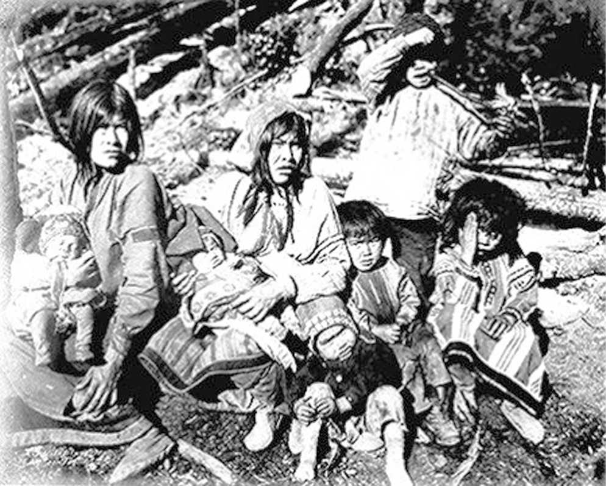
そして子供は誰もいなくなった
19世紀、白人は北米大陸にそれまで住んでいた褐色の肌をした原住民を完全に征服していた。
もとはと言えばコロンブスが目指していたインドと勘違いし、原住民を「インディアン」と呼び始めたのだが、それはもうすでに定着し、インドと関係なくアメリカに住んでいた原住民は何族であろうとおかまいなしにインディアンと呼ばれるようになっていた。
「保留地」と呼ばれる痩せた土地に集められたインディアンたちは、わずかばかりの保証金を与えられ、赤貧と絶望の中で生きていた。
彼らはときどき、集って踊った。
その日は１年がもう終わろうとする12月29日、外には真っ白な雪が舞っていた。
冷たい日だったが、中央には轟々と音を立てる大きなたき火がたかれていた。みんなが集まると、長老は皆を諭した。
「よい行いだけをするようにしなさい。互いに愛し合って、争いは避けなければならない。白人とも平和に暮らしなさい。嘘をついたり、盗んだりしてはいけない。戦いを誇りに思っていた昔のことは忘れ、長老の言うことに従いなさい。そうやって生きれば、天国で友人たちに再会できる。そこには死や病や老いはないのだ」
全員、頭を垂れて聞いた。
長老の話がすめば、お楽しみのダンスの時間だ。皆夜っぴいて踊るのだ。日頃のうっぷんを晴らすかのように。
集まったのは大人だけではなかった。老いも若きも集まった。家族のある者は家族を連れて集まった。
集まった子供たちは、子供たち同士ですぐ打ち解けて遊び始めた。
しかし、その集まりはあまり大きかったので、そばを通りかかった白人の商隊に見つかって通報されてしまった。
「インディアンが一斉蜂起しようと目論んでいる」
サウス・ダコタの第７騎馬隊数十人が現地に急行した。彼らは全員手に銃を持ち、インディアンの集団に狙いを定めると、そっと岩陰に身を潜めた。
殺人者たちに囲まれているとも知らず、大人たちが踊り始めると、男の子たちが少し離れた場所に集まった。その数10人、大きいのも小さいのもいる。
子供は大人の思惑などおかまいなしに、白人との銃撃戦を再現した戦争ごっこに余念がない。石を投げたり、木片で岩を叩いて大騒ぎだ。勇敢だったアパッチ族のようにときの声を上げる子供もいる。
ひとりの男の子が、武器になる弓を家に持っていたことを思い出した。誕生日に父親が自ら作ってくれたよくしなる弓だ。あれがあると、ぐっと迫力が出る。
「ちょっと家に帰って、弓を取ってくる」
少年の家はそこからほんの目と鼻の先だったのだ。
他の少年たちは、その子にたいした注意も払わず、戦争ごっこを続けていた。だからその子が家に方に駆けていって、岩陰に入ったとたん、パン！ という短く鋭い音がしたことに気づく子供はいなかった。
しばらくして、戦争ごっこに飽きた子供たちは、近くに生えている２本の木にブランコが下がっているのを発見する。みんなで駆け寄って、我れ先にとブランコに乗った。
ひとりしか乗れないから、ほかの子供は乗っている子の背を押して勢いをつけてやったり、次の順番をせかすように数を数えたりした。が、次の瞬間、大人たちのダンスの輪の方から、ひときわ大きなドラムの音が聞こえて子供たちの注意がそちらに向いた。その瞬間、弾けるような鋭い音が後後から響いた。
大きくスウィングしたブランコの頂点から、乗っていた子供の体がふわっと離れて空を飛んだ。頭を撃ち抜かれた子供は、次の瞬間どさっと音を立てて白い地面に落ちた。白い地面が赤く染まったが、暗闇で少年たちには見えなかった。
８人になったインディアンの少年たちは、ブランコから落ちた子供が動かないので、それをいいことに早速次の子をブランコに乗せた。
順番に全員が乗ってしまうと、満足してみんなで固まって丘の上に座って持って来たナッツを食べ始めた。寒いので、８人でぴっちり体をくっつけ合って座って仲よく口を動かしている様子はまるで８羽のひなのようだった。
しかし、またもや次のドラムの音が高まった瞬間、一番左の端に座っていた少年が暗闇から飛んで来た銃弾に撃ち抜かれて、そのまま前のめりに突っ伏した。隣の少年は、その子が疲れて眠ってしまったと思い、そのまま地面に寝かせておいた。夜はだいぶ更け、雪はやんで、いつの間にか頭上には満天の星が輝いていた。
７人のインディアンの少年たちは、お腹がふくれるとまたじゃれ合って遊び始めた。今度は木登り。一番乗りで上に行こうと猿のように身軽に木に登っていく。
最初に登っていた子供が、騎馬隊の標的になった。ごく近くまで匍匐前進していた銃撃手は、たき火の灯りで狙いをつけて、その子めがけて引き金を引いた。銃弾はその子の肩をかすめたが致命傷にはならなかった。
いきなり自分の肩に燃え上がるような痛みを感じ、驚いて体の力を抜いたその子は、まっさかさまに落下した。５メートル以上登っていたので、頭から落ちたとき、グチャッと気分の悪くなるような音がして、放られたマリオネットのような奇妙な格好のまま、その子は動かなくなった。
続いて２弾目が、次の子供の頭を直撃、その子はザクロのように頭を破裂させて木から転落、木のそばの窪みに落ちた。その窪地がちょうど影になっていたため、何が起こったかと他の少年たちが木をすべり降りて覗き込みにやって来た。最初に穴を覗いた子供の後頭部を次の銃弾が貫通、もんどりうって小さなからだがぼろ切れのように暗がりに落ちていった。
残った４人の少年たちは、さすがに異様な気配を察し、顔を見合わせると、じりじりと後ずさりながら、大人たちの輪の方に避難を開始した。大人たちのダンスは最高潮に達していて、中央のたき火がごうごうと音を立てて燃え、強い太鼓の音が場の雰囲気を高揚させていた。
男たちは革の袋を受け取ると口に持っていって中の酒を飲んで、隣に回した。普段は奨励されていないが、このときばかりは強い酒が解禁になるのだ。
すっかりトランス状態になって踊り狂う大人は、騎馬隊の気配にはまったく気づかなかった。中央のたき火が明るかったので、周囲の暗がりで潜んでいるものはたとえジャッカルであろうが騎馬隊であろうが、何ひとつ見えなかったのだ。
４人のインディアンの少年はそっと踊りの輪に近づいた。その中のひとりはまだ10にもならなかったが体が大きく、薄暗いところでは子供とは気づかれない。その子は大人の輪に入ると安心し、いたずら心で回って来た革袋と受け取って口につけて飲んだ。木の実を原料ににした発酵酒は強い刺激と甘い香りに満ちていた。初めて味わう魔法の液体に酔いしれた少年は、ひと口で回すべき酒を５回ほど口に運び、せがまれてやっとのことで袋を次に渡す始末だった。
そのまま踊ったものだから、その子はすぐに酩酊状態になった。またこそこそと踊りの輪から這い出して、暗がりに戻ろうとしたが、たき火のあたりを背に受けた人影は狙いやすい。騎馬隊はすかさずその人影に向かって発砲、銃弾は少年の心臓部を突き抜けた。
しかし、今度はその音が集まった全員の耳に届いた。
「銃だ！」
長老が叫んだ。そのとたん、騎馬隊の銃撃が始まった。岩陰に隠れて集団を囲んでいた白人たちの銃が一斉に火を噴いた。
その場はたちまち阿鼻叫喚の嵐となった。老人、男たち、女たち、そして子供たち、なんの武器も持たずに踊っていたインディアンたちは、四方八方から飛んでくる銃弾になす術もなく撃たれて倒れていった。
何発も四方から銃弾を撃ち込まれて、踊るように宙で何度も身を翻し、衣服を朱に染めてなお倒れることすらできない哀れなインディアンもいた。
ひとりの若い母親が、自分の子供と、一緒に棒立ちになっていた他のふたりの子供を地面に押し倒すと、這って自分についてくるようにと合図した。近くの川に自分のカヌーをつないでいた彼女は、暗闇に乗じてカヌーで脱出しようと考えたのだ。匍匐前進で４人は川の方に向かって雪の土手を降りた。その目論見は成功しそうに見えた。積もった雪のおかげで杭につながれたカヌーがぼうっと浮かび上がって見えたので、母親は迷いなく子供たちを誘導することができたのだ。
カヌーに乗り込むことができたのは、彼女の８歳になる息子と、４歳か５歳くらいのまだほんの幼児ふたりだった。
母親はカヌーを結んでいた綱を解いて、黒い油のような川にゆっくりとカヌーを進めた。しかし、幸運もここまでだった。連れて来たふたりの小さな子はカヌーに乗るなり怖くなって泣き出したのだ。たちまち騎馬隊にカヌーの存在がわかってしまった。馬のひずめの音が、川を見下ろす土手に近づいてくるのがわかった。
「見つかる！」
母親がそう感じて身をすくめたのと、銃口が火を噴いたのはほとんど同時だった。
雪の白さでカヌーの舟体が暗闇でも浮かび上がって見えたのが災いし、４人は簡単に見つかってしまった。２～３発の銃声のあと、カヌーから人が落ちる水音がした。白人は用心しながら馬を下り、そのまま土手を下ってカヌーに近づいた。
月明かりに目を凝らすと、カヌーのそばの水面に男の子がうつぶせになって浮かんでいた。そしてカヌーの中には、母親らしい女のインディアンが撃たれて死んでいた。彼女は残された子供たちをかばうような格好で倒れていて、まだ幼いふたりの幼児が彼女の体の下で身を硬くして座っていた。白人は銃口を子供たちに向けたまま、女の死体を足で蹴りよけると、上から下までじろじろとふたりの子を観察した。この子たちが、死んだ女に助け出されかけていたことは明白だ。だがここで運は尽きた。このままカヌーで流されれば、ジャッカルにやられるか、コンドルに食われるかだ...。運がよければ他のインディアンに助けてもらえるかもしれないが。
そのときだった。カヌーの上で生き残った片方の子供が息を吸い込むような仕草をしたかと思うと、白人の男にベエッとつばを吐きかけたのだ。そして、「がうっ」とまるで獣のように威嚇した。
一瞬だった。逆上した男は相手が幼児であることを瞬間忘れ、手にした銃を半ば無意識に構えるとその子に向かって引き金を引いた。至近距離からの銃弾が、小さな子供のまだ柔らかそうな頭を砕いた。そして半分になった頭を後ろに反らせる格好で、その子はカヌーから転げて川に落ちた。
もうひとりの子は、ずっと黙ったままだった。カヌーの上で動かずに座っていた。男は一瞬そちらに銃口を向けたが、さすがに大人げないとでも思ったか「ふん」と鼻を鳴らしてそのまま土手の方に戻っていってしまった。
その子はそのままカヌーで３日３晩流され、そして４日目の明け方に別の部族の保留地で保護された。助けられたのちも１年近く黙ったままだったので、最初は口がきけない子供と考えられていたが、そのうち、パイン・リッジの虐殺の生き残りで、そのショックから言葉を失っていたのだと判明した。
その後その子は成長し、保留地で部族の娘と結婚した。ときにはパイン・リッジそばの丘を通りかかることもあるが、吹き渡る風がなぜか人間の泣き声のように聞こえ、すぐに立ち去った。
このようにしてインディアンの子供は誰もいなくなった。
ソルジャーブルーで描かれた開拓時代の真実
'70年製作のアメリカ映画「ソルジャーブルー」はアメリカ大陸の通称「インディアン」が実際どのような迫害にあったかを描いて、名作の評判が高い。
映画では１８６０年代に起こったサンド・クリークの虐殺を扱っているが、当時はすでに西部劇のようなインディアンと白人の戦いはほぼ終わっており、インディアンはときの趨勢として、白人からの要求を受け入れて、保留地に移住していた。
しかし、コロラドで金鉱が発見され横断鉄道の工事も進んでくると、状況が変わった。条件の悪い不毛な場所へとどんどん追い立てられていくことに怒りを覚えたいくつかの部族が抵抗を開始、白人の司令官は和平交渉に入ろうとするが、先走った騎馬隊がインディアンの部族を急襲、ここに取り上げた歌と同様、非武装無抵抗の女性や子供を含む数百のインディアンを虐殺した。
両手を上げて降参のポーズをしても銃口は火を噴いた。固まって震える女たちに向かって四方から銃弾が浴びせられた。血に酔った騎馬隊は銃剣やナイフでインディアンたちを動物のように切り刻み、残虐の限りを尽くしたという。その数２００とも３００とも言われる。規模こそ違え、こういった虐殺はアメリカ全土で行われていた。
この歌の原曲はアメリカの作曲家セプティマス・ウィナーが１８６８年に発表したもので、ウィナーはアメリカ民謡の父と呼ばれるフォスターと同時代に活躍した音楽家だった。ウィナーの書いた歌詞はむしろユーモラスなもので、海を渡ってイギリスでも発表された。しかしマザーグースの国イギリスでは、残酷な表現に書き換えられて人気を博したという。
ゲットーに送られるユダヤ人への挽歌
ドナドナ
作詞：安井かずみ
作曲：ショロム・セクンダ
収容所で待ち受ける運命
１９４２年、それはイツハクがワルシャワ・ゲットーで過ごす３度目の夏のことだった。
イツハクは気が遠くなるほどの空腹に耐えながらも、奴隷のようにひたすら肉体労働をこなしていた。なにせゲットーでは、ただ働き続けること、それが生きる術なのだ。衰弱して「使いもの」にならなくなれば、容赦なく射殺される。息子のヤンケルのためにも、作業中に倒れるわけにはいかない。
戦闘機の音が上空から響き、イツハクたちはしばし煉瓦を運ぶ手を止めて空を見上げた。最近、やけに敵機の飛来が増えている。日に日に戦況が悪化していることは、収容者たちにもわかっていた。
「ドイツ軍さえ負ければ、どうにかなる。もう少し生き延びるんだ」
そう希望を持つ者もいたが、戦局が悪化するにつれ、悪い噂も広まっていた。
たとえ戦争に負けたとしても、ユダヤ人だけは殲滅させる―民族浄化の信念に揺らぎのないナチス・ドイツが絶滅収容所を導入し、ユダヤ人絶滅の手段をエスカレートさせているというのだ。
「別の強制収容所に連行されて、死ぬまで奴隷労働を強いられるらしい」
「労働に適さない女子供は処刑されるそうだ...」
ゲットー内はそんな噂で持ち切りだった。
昨年には44万５０００人にまで増加していた人口も、日を追うごとに減ってきている。
壁と有刺鉄線で囲まれたゲットー内には下水施設がほとんどなく、食料の配給は週にたった７００グラムのパンだけ。
劣悪な衛生状態と飢えが原因で腸チフスや結核、インフルエンザなどの伝染病が蔓延し、すでに４万人以上が命を落としている。昨年亡くなったイツハクの妻、ハンナもそのひとりだ。道には、衰弱した者や脱走を試みた者、闇市での食料入手がばれて銃殺された者など、その死体が野良犬の死骸のように積み重なって放置されている。
「チェルニャクフが自殺した」
イツハクが仕事を終え部屋に戻ると、同居人の男たちが、青白い顔でそのニュースを伝えた。
「特定のグループを除いて、性別や年齢にかかわらず、ユダヤ人全員を東部へ移送する」
ドイツ当局からそう通達されたユダヤ人評議会議長のチェルニャクフは、せめて子供たちだけでも移送対象から外してほしいと要請し、それが拒絶されると、青酸カリを飲んで自殺したというのだ。
「強制移送の噂は本当だったのか...」
イツハクは部屋の片隅で遊ぶ息子を見やりながら、込み上がってくる胃液を飲み込んだ。
「生存に値しない命は根絶やしに」
ドイツ兵たちの笑い声が頭の中で鳴り響く。
「これじゃあ、あの曲とまったく同じじゃないか」
同居人のひとりがいう。
「あの曲」とは、数年前からゲットーで歌われている「ドナドナ」のことだ。市場へ連れていかれる、無力な子牛...。自由に空を飛ぶツバメになりたいと願うその歌詞に、イツハクたちは自分の空しい願いを重ね合わせて歌っていた。いつか自由に―そんな願いが叶わぬことなど、痛いほどわかっていた。
７月になると、ゲットー住民の強制収容所移送が始まった。ゲットー警察の手により、毎日７０００人もの住民が集荷場へ連行され、そこから貨物列車でトレブリンカ絶滅収容所へと移送されて行った。そしてある日の朝、ついにそのときが来た。ゲットー警察が手当たり次第に子供たちを広場へ集めているのだ。
「パパ！ パパ！」
警官に肩をつかまれると、ヤンケルは恐怖に顔を引きつらせて泣き叫んだ。イツハクは警官にすがり懇願するが、うしろから別の警官に銃で頭を殴られ、地面に崩れ落ちる。
「ヤンケル！」
引きずられるようにして列に並ぶ息子の、細い棒切れのようなうしろ姿が涙でかすむ。移送先では、労力のない子供たちの生存率は絶望的。これが息子の見納めになるということはわかっていた。イツハクには知るよしもなかったが、実際トレブリンカ収容所では労働力のあるないに関わらず、ほぼ全員が到着後すぐにガス室に送り込まれていたのだ。
その後、わずか60日足らずで、ワルシャワ・ゲットーの住民30万人が収容所へと移送されていった。第一次移送が終了した９月には、ゲットー内に残った住民は、わずか７万人ほど。そして43年１月、第二次移送作戦が開始されると、イツハクもトレブリンカへ送られることになった。
久しぶりに見るゲットー外の景色に、囚人たちはつかの間見入っていたが、イツハクの心はすでに死んでいた。
高い鉄条網で囲まれた収容所に入り、第二収容区に連れて行かれたイツハクたちは、衣服を脱ぐよう指示された。わけもわからぬまま、凍てつく寒さに凍えながら狭いシャワー室に詰め込まれる。骨と皮だけにやせ細ったからだがぶつかり合い、身動きもできない。誰ともなく、男たちは震える声で小さく祈りの言葉を口にし始めた。寒さのためか恐怖のためか、それはときおり、悲鳴のような甲高い声へと変わる。
イツハクは恐怖を感じてはいなかった。失うものは何もない。それでもからだは死を拒絶するかのように、冷たい汗を流し続けていた。まるで毛穴から恐怖が吹き出すように、腋から汗が流れては、骨張った脇腹をつたっていく。
やがて、霧のように充満するガスの中で、イツハクは思う。空高くはばたくツバメのことを、妻と愛する息子のことを、そして神のことを。
「ヤンケル...」
イツハクは呼びかけるが、その声は、霧に吸い込まれるように消えていった。
悲しみの歴史を綴った作者は誰？
「ドナドナ」のオリジナルの歌詞はイディッシュ語（ユダヤ語）で書かれており、作者はロシア生まれのユダヤ人で、ホロコーストを逃れ１９３９年にアメリカに亡命したアーロン・ツァイトリンだという説と、ワルシャワのゲットーで活動していた詩人イツハク・カツェネルソンだという説に分かれている。
さらに、カツェネルソンは１９４２年に妻とふたりの息子をトレブリンカ強制収容所へ連行されており、その経験を詩にしたという説もある。だが、「ドナドナ」は１９４０年にはすでに存在しているため、この説は当てはまらない。ちなみに、カツェネルソンは１９４４年、妻子と同様に強制収容所で死亡している。
どちらが本当の作詞者かは未だに判明していないが、いずれにせよ「ドナドナ」がユダヤ人への民族虐待を歌った曲だということに違いはない。ユダヤ人に生まれてきたという理由だけで科せられた苦しみや不条理への思いが、この曲には込められているのだ。
ボーデンさんと奥さんを殺したのは誰か、子供たちの歌は知っている
リジー・ボーデン斧を手にして
マザーグース
♪ リジー・ボーデン 斧を取り上げて
父親を四十回 めったうち
われにかえって その場を見てから
今度は母親を 四十一回めったうち
家政婦が語る！ アメリカで起こった殺人事件
私はボーデン家に仕えていた家政婦のブリジット・サリヴァン。あの事件は１９８２年、ちょうど私がアメリカのマサチューセッツ州フォールリバーのボーデン家に勤め始めてから、２年と９カ月経った頃に起こった。
事件が起こった８月４日は気温が40度前後もあり、とても暑かったことを覚えている。
私は朝からひどい頭と胃の痛みを感じていたが、ご主人のアンドリュー・ボーデン氏とその後妻アビー奥さまに、いつも通り朝食を用意した。リジーお嬢さまは朝からあまり食欲がなさそうだったので、コーヒーとクッキーを出した。
その後、私は奥さまに頼まれた通り、外で窓の掃除をしていた。その間不審な人の出入りは一切なかった。
私が最後に奥さまを見たのは午前９時ごろで、その後誰かのお見舞いのために外出された、とリジーお嬢さまから聞いていた。
一方、ご主人は朝から外出して家に戻ってきたあと、居間のソファでうたた寝をしていたようだ。
私は窓掃除が終わると、屋根裏の自分の部屋で少し休もうと階上に上がってベッドで横になっていた。そこで街の鐘が11時を知らせるのを聞いた。リジーお嬢さまが私を大声で呼んだのはその直後だった。
「下に降りてきて！ お父さまが死んでいるの。きっと誰かに殺されたのよ」
あわてて階段を降りると、頭を斧のようなもので打たれ、血まみれになったご主人の死体がソファに横たわっていたのだ。鼻が削がれ、左目がふたつに割れているのを見たときの驚きは忘れられない。
（奥さまに知らせなければ。もしかしたら外出から帰宅されているかもしれない）
そう思い、急いで２階の部屋へ向かった。部屋のドアが開け放してあったので、階段から部屋の中が見えた。
そこでまた私は恐ろしい光景を目にする。
ベッドの下にあったのは、奥さまの倒れた姿と床に広がる真っ赤な血の池。近寄ってみると、奥さまも斧のようなもので打たれたあと、うつ伏せになって倒れていたのだ。
警察の捜査が始まり、疑いがかけられたのはリジーお嬢さまだった。捜査が進むにつれて明らかになったのは、お嬢さまとアビー奥さまは互いに憎み合っていたこと、そしてお嬢さまは父ボーデン氏の再婚を決して許していなかったということ。
事件当日は、ボーデン氏がアビー奥さまに遺産相続の手続きを行う予定だった。リジーお嬢さまはそれを阻止しようとしたのかもしれない。
また犯行に使われたと思われる斧が地下の物置で発見され、お嬢さまが犯行当時に着ていた服を燃やしている姿が、事件の数日後に目撃されていたことものちに判明した。
さらに、事件の数日前にお嬢さが農薬を買おうとしている姿を近所の人が見かけたらしいのだ。そういえば、私だけでなくご主人も奥さまも、事件の数日前から胃痛を訴えていた。
事件から１週間後にリジーお嬢さまは逮捕され、裁判にかけられたが、結局無実になった。状況証拠だけでは死刑にするのには不十分だという理由だった。真実は私にもわからない。
お嬢さまが釈放されたのは事件の１年後、33歳のときだった。その後、両親の遺産を受け継いだお嬢さまは大邸宅を購入し、亡くなるまで豪華な暮らしをしたと言われている。
裕福なボーデン一家で起きた事件は、当然世間をにぎわした。当時は街の人たちの間でも噂が絶えなかった。
リジーお嬢さまは裁判では無罪となったものの、多くの人が犯人はお嬢さまだと思っていたことだろう。事件のあと、よく街の中で子供たちが大きな声で歌っていた。
「ボーデンさん、死んじゃった。リジーに頭を殴られて...」
本当に40回も斧で打ったのか
街中の子供が歌にして口ずさんでいた歌を元に、生まれたこのマザーグース。
現在では、英語圏のほとんどの子供が学校で習うそうだ。リジー・ボーデンが有罪か無罪かということよりも、実際にあったかもしれないこの恐ろしい親殺しの事件を語ることを楽しんでいるようだ。
この事件は映画化もされている。またハロウィンの日には、斧を持つリジー・ボーデンの仮装姿もしばしば見られる。
事実に基づいているものの、少し誇張されている部分もあるようだ。歌の中では、斧を振り降ろした回数が40回、41回となっているが、実際は父親アンドリューに対しては９回、義母のアビーは17回だったと言われている。
また、イギリスとアメリカとでは父と母が殺されてしまう順番が逆に歌われているのも興味深い。事件当初の警察の発表では、居間にいた父が先に殺され、それを見て逃げた母が犯人に追いかけられ２階で殺されたと言われていた。しかし、検死後にわかったのは母のほうが父よりも１時間以上前に殺されていたということだった。
おそらく、アメリカで最初に歌われたのは、イギリス版と同じで父が先で母があとのものだったが、捜査が進んで事実がわかるにつれ、歌の内容にも変化が加えられたのではないだろうか。しかし海を渡ったイギリスでは、最初に歌が広まってしまったあと、事実が判明しても変更は加えられなかったのだろう。
事件が実際に起こったボーデン家の屋敷は、現在Ｂ＆Ｂとして使われている。犯行時のソファやベッドがそのまま残された部屋に宿泊できるという理由からなのか、かなりの人気を呼んでいるため、予約は１年先まで埋まっているそうだ。
危険な鉄道工事にからだを張った外国人作業員への恐怖の報酬
線路は続くよどこまでも
アメリカ民謡
日本語訳：佐木敏
中国人作業員の命は安い
アメリカ大陸を横断する大陸横断鉄道の歴史に残る大工事は１８６３年に始まった。工事を落札したのはセントラル・パシフィック鉄道とユニオン・パシフィック鉄道というふたつの会社。というのもアメリカ政府は２社に西と東から鉄道を敷いて、アメリカ大陸のど真ん中、ユタ州でジョイントさせようという壮大な計画を立ち上げたからだ。早くたどり着いた方の社には補助金を余計払う、という政府の条件などもあり、国を挙げての競争になっていた。
皮肉にも１８６１年に始まった南北戦争のさなかで、こちらはまるで東西戦争のようだった。
とはいえ、若いアメリカ人男性はすでに戦争にとられており、国内には十分な労働力はなかった。そのため、鉄道会社はエージェントを通じて海外から広く鉄道労働者を募った。
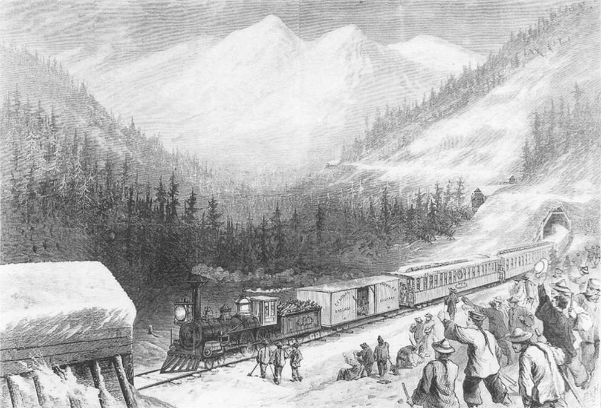
当時、ジャガイモの伝染病禍に襲われていたアイルランドから労働者がたくさんやって来た。チャーリー・マッカーシーもそんなアイルランドからの労働者だった。
アイリッシュ（アイルランド人）は交通の便から、東側のユニオン・パシフィック鉄道に雇われるものが多かったが、チャーリーはもともと親戚がカリフォルニアにいたため、土地勘のある西側のセントラル・パシフィック鉄道と契約した。きつい仕事だったが日当３ドルは悪くなかった。しかし、チャーリーは契約してほどなく、その仕事が命がけであることに気づいた。
西側のカリフォルニア州には中国人が多かったため、はじめセントラル・パシフィック鉄道では中国人をコックやクリーニング係に雇っていた。見るからにからだが貧弱でとても肉体労働に従事できるようには見えなかったからだ。
しかし、すぐにそれが間違いであることがわかった。それどころか、東洋人は白人と比べてはるかに我慢強く、信用できて、しかも文句を言わずによく働いた。
いや、文句を言わなかったのではなく、言えなかったのである。ほとんどの中国人は英語がしゃべれなかった。だから、差し出された契約書を読まずにサインしたし、差し出された給金は黙って受け取るしかなかったのだ。
チャーリーの日当が３ドルのとき、中国人の平均月収は33ドルだった。ほとんど休みなく働き、３分の１の給金という中国人は、鉄道会社にとっては金のなる木と同じだった。
もともとカリフォルニアに住んでいた中国人だけではとても足りず、鉄道建設のために大量の中国人が毎月アメリカに送られてくるようになった。その数は１万人を超えていた。
リーは急遽、追加オーダーで送られて来た中国人のひとりだった。祖国では外国人相手にバーテンダーをやっていたということで、片言だったが英語を話した。年齢が25と、チャーリーとまったく同じだったことから、何となく仲よくなった。
ふるさとから持ってきたという草で編んだ笠をかぶって、リーは黙々と働いた。稼いだ金はすべて親に送ると決めているようだった。
食事が出ない休みの日は、労働者はやってくるもの売りからコーンビーフの缶詰やソーセージを買って食べるならわしだったが、リーは絶対に金を遣わず、それこそ丸１日水ばかり飲んで絶食しているところを何度もチャーリーは目撃していた。
そんなとき、３倍もの金をもらっていることの呵責から、チャーリーはリーに、
「余ったから」
とソーセージなどを恩着せがましくならないように気をつけながら、分けてやるようにしていた。リーの表情から、彼が感謝していることが見て取れる。
給料日、ひとりひとり、エージェントから現金を受け取りながら、チャーリーは心を痛めた。あまりにも格差がひどい。
エージェントは中国人から給金をピンはねしていることが明らかだった。エージェントの男は、英語だったらどうせ中国人にはわかるまいとタカをくくって、
「アイリッシュは給料袋を中国人の前で開けるなよ、暴動が起きると困るから」
といいながら高笑いしている。
チャーリーはちらりとリーの方を伺った。リーは完璧にエージェントの男の英語を理解していた。だが表情を変えずに黙っていた。
その夜リーに、チャーリーは尋ねた。
「あんなこと言われて、頭にこないのか」
「怒る、変わる、言う。...でも、怒る、変わらない。...だから言わない」
リーは小さな声でそう言った。チャーリーは白人のずるさに唇を噛んだ。
サクラメント・バレーでの工事は順調だったが、ネバダ山脈にぶちあたって工事がぐっと困難になった。しかも冬になり、山間部は真っ白な雪で覆われた。
雪の中でも、信じられないような軽装で中国人は黙って働いた。彼らの手があかぎれで腫れ上がっても、ハンマーの音は絶えることはなかったのである。
実際、氷点下の作業で足を凍傷でやられ、歩けない者も出た。
足の指からくるぶしへ、皮膚が壊死で黒く変色し、イヤな臭いを発するようになった中国人労働者は堪え難い痛みに絶叫しながらどこかに連れて行かれた。そして二度と戻って来ることはなかった。
「工事、いつか終わる。いつ終わるか」
昼飯のパンをかじりながら、リーはチャーリーに聞いた。
「そんな長くはないよ、つらい仕事もいずれ終わる」
「工事終わる、家、帰る、いやだ」
意外な言葉にチャーリーは思わずリーを見た。この男は囚人のような労働をずっと続けたいというのだろうか。
「中国、仕事、ない。家族、困る」
リーは兄弟が８人いるのだと言う。チャーリーは中国で待っているリーの大家族を想像した。リーの送金を首を長くして待っている家族を。
工事がとうとう山脈の固い岩盤にさしかかったとき、トンネルを掘る工事が始まった。
ちょうどその頃、ニトログリセリンの爆薬を、スウェーデンの化学者たちが実用化したばかりで、鉄道会社は「渡りに船」とばかり躊躇なくその爆薬を試すことに決めたのだった。
なんでも威力は凄まじいが危険な代物でもあるとのことだった。なにせ発明されたばかりのニトログリセリンは、ちょっとした振動でもすぐに爆発してしまうのだ。
断崖のひとつがトンネルの入り口に決められ、そこにニトロを仕かけてくる作業は当然のことながら、安い労働力である中国人に任された。
最初に指名されたのは年老いたふたりの男だった。現場監督は、言葉もよくわからない男たちに向かって身振り手振りでニトロの運搬と設置を説明し、その爆発物の危険性にはろくに触れなかった。
行けという合図で、作業に向かおうとする男たちの背中にリーが中国語で何かを叫んだ。そして、監督に向かってこう言った。
「監督さん、自分行く。ふたりと一緒に行く。説明する、わかる」
監督は一瞬眉を曇らせたが、結局通訳としてリーを行かせることに賛成した。そうでなければ、ニトロが崖に着く前に中国人と一緒に爆発してしまう可能性が高かったからだ。
リーは担当の男たちに改めてニトロの危険性や扱い方を丁寧に中国語で説明した。だがチャーリーはそのミッションに、ひどい胸騒ぎを覚えた。
数分後、３人の中国人たちは、まずニトロが置かれた小屋に向かった。そこからニトロを断崖まで慎重に運ぶのには、10分ほどはかかるだろう。飯場から去っていくリーのうしろ姿を見送りながら、チャーリーは自分のいやな予感がただの思い過ごしであることを、祈る気持ちだった。
生まれてから一度も聞いたことがないような耳をつんざく爆音が、それからまだ５分と経たないうちに聞こえた。
「早過ぎる！」
チャーリーは一言叫ぶと、誰よりも先に小屋から転がるように走り出た。
前方、崖よりもずっと手前にもうもうと黒煙が立ち上っていた。頭の中が真っ白のまま、チャーリーは黒煙に向かって全速力で駆けた。
現場はまるで、すべてのものをこなごなにしてまき散らしたかのような惨状だった。
リーの名前を必死に叫ぶチャーリーは、少し離れたところに、人間がひとりうつぶせで倒れている姿を発見した。両足をこちらに向けて、前のめりになった格好で倒れている。チャーリーは無我夢中で友を助けようと駆け寄った。
近づくと顔は見えないものの、服装からそれはやはりリーであることがわかった。幸いにも爆発から逃れたようで、服の乱れもなくほとんど無傷で倒れているように見えた。
「リー、大丈夫か！」
ところどころ小石に埋まるように倒れている友のからだに腕を回して抱き起こそうと力を込めたチャーリーが最初に感じたのは、その意外な軽さだった。ふわりと浮き上がるように持ち上がったリー。が、次の瞬間、チャーリーの動きが電気に打たれたかのように止まった。
リーのからだには、首がなかった。両手両足は無傷だったが、肩から上はきれいに吹き飛んでいた。チャーリーは友のからだをそっと地面に横たえて十字を切った。
数年後、とうとう鉄道が開通すると、作業員たちはささやかな打ち上げをして解散になった。家路を急ぐ彼らの耳に、遠い彼方から汽笛の音が響いてきた。
しかし、チャーリーにはその音を楽しむことができなかった。それどころか、生涯を通じて汽車の汽笛を耳にするたびに、リーの首のないからだを思い出して、その夜は悪夢に苦しむのだった。
労働歌が唱歌として誕生
１８６９年５月に開通したアメリカ大陸横断鉄道には、多くの犠牲者が出た。鉄道は速度優先で敷かれていったので、保安の問題がおざなりになり、多くの外国人労働者が人柱のように犠牲になった。
また、線路の敷地にあたる地域に住むインディアンは追い立てられ、抵抗する者は殺された。
鉄道工事に従事した数万人の労働者のうちとくに多かったのは中国人労働者で、公式には３分の１と発表されているが、多いときには半数が中国人だったという説もある。
固い岩盤を砕き、沼地の泥に下半身を沈め、重いレールを担ぎながら、なんと１日16キロも工事を進めたというから、その過酷さがわかろうというものだ。
この労働歌は工事中からアイルランドの労働者によって歌われ、人の口から口へとどんどん伝わって、最後は大合唱になったという。工事のさなかに亡くなった仲間への鎮魂歌でもあっただろう。
日本には昭和30年頃、「線路の仕事」という労働歌の形で渡ってきたが、昭和40年代に「みんなの歌」で取り上げられるときに、童謡として改めて作詞され、佐木敏という作詞家によって線路工事の歌ではなく列車の旅の歌として生まれ変わった。
そのときつらい歴史の影はすっかりぬぐい去られ、「ラララララーン」と夢いっぱいの歌になって日本人に親しまれていくことになる。
拷問好きの皇帝に八つ裂きにされたコサックの首領
ステンカ・ラージン
ロシア民謡
訳詞：与田準一
ボルガの流域で起きた農民蜂起
ロシア皇帝アレクセイ１世は、皇帝の地位は神からの授かりものだと固く信じていた。人民はその皇帝のために奉仕すべき存在だ。いってみれば、人間は皇帝のために生まれてきたようなものだ。だから、１６５４年に始まったポーランドとの戦争が長引き、さらにスウェーデンとも北の領土を争って戦争になって国庫が疲弊したときは迷わず増税を指示した。結果、余りにも重い負担に、農奴や小作農の中には生まれた土地を捨てて南に逃れ、自営農民集団コサックの仲間になる者が続出したのである。
スチェパン・チモフェーエヴィチ・ラージンは、そんなコサック集団の首領だった。からだが大きく、胸が厚く、日に焼けた肌に豊かな黒ヒゲを蓄えたラージンは「ステンカ・ラージン」と略称で呼ばれ、その頼もしさに、膝元にくだる農民が絶えなかった。
「アレクセイ皇帝が課している重税から、ロシアの大地を耕すよき農民を解放するために立ち上がろう」
そう宣言したラージンは、家来を養うために財宝や金銀、あるいは高価な商品を積んでヴォルガ河を行き来する船団を撃破し、強奪品を分け与えたことからにわかにその名が知られるようになった。
ラージンは35隻のガレー船からなる水軍を組織し、ヴォルガを下りながら砦を次々と攻略していった。カスピ海に達したあとも進撃を続け、カスピ海沿岸を荒し回った。そしてとうとう１６６９年にはペルシャ艦隊を撃沈させるという戦果を挙げたため、周囲の国々も看過することができない存在になってしまった。
アレクセイ皇帝は、
「今、奴を敵に回してはなりませんぞ」
という臣下の進言を入れて、ステンカ・ラージンにとりあえず恩赦を与えることにした。懐柔策である。というのも、ロシアの辺境に住む人々はまだ皇帝の権威の外にいたし、そういう場所でもラージンの人気が上がっていたので、これ以上の支持を集められると本当に危険な存在になると用心したのだ。
ラージンはカザフスタンの国境にほど近い、カスピ海沿岸の町アストラハンを侵略、抵抗する人間は皆殺しにするなど暴虐の限りを尽くし、そこを治めていたペルシャの王子を殺害、姫を人質に取ってアストラハンにコサックの共和国を築くと宣言した。このときがまさにラージンの絶頂期だった。
ペルシャの姫や女官たちを相手に酒池肉林の３週間を過ごしたあとで、アストラハンからまたヴォルガに戻り、ヴォルガ河全域をコサックの共和国にするという目標を掲げて出航した。最終目的地はモスクワだが、そこまでの流域にある公国や古都を攻め落として行かなくてはならない。
ステンカ・ラージンの反乱軍の名目は、
「悪いツァーリ（皇帝）を倒して皇太子を奉じるため」
としていたが、皇太子は病弱で、その頃には病床にあると報じられていたし、元もとラージンは他人を奉じる気などなかったので、もっと自分にも確たる権威がほしかった。そこで、手始めにアストラハンから連れてきたペルシャの姫と結婚することにした。
姫は若く、ベールで顔半分を覆っていたため表情はわからなかったが、エキゾチックな黒い瞳はラージンを魅了するに十分だった。新郎は船上でしこたま酒に酔い、欲情に任せて姫と交わり、我が世の春を謳歌していた。しかし、花嫁を抱いて酒をあおるラージンに対し、部下の風あたりが強くなった。
「ラージンは俺たちよりも女を取りやがった」
という声があちこちから漏れ始め、さすがのラージンも険しい雰囲気を感じ取る。
強い酒に頬を赤らめながら船室から出てきたラージンは、腕に花嫁を抱いてはいたが、そのまま部下たちの前まで来ると仁王立ちになって、こう叫んだ。
「母なるヴォルガ、ロシアの大河よ！」
何の話が始まるのかと、周囲は水を打ったような静寂。ラージンは周囲を睥睨しながら続けた。
「皆、よく見ておくがいい。これから起こることをしっかりと目に焼きつけ、後日、ほかの船に乗っている仲間やふるさとの家族に伝えてくれ。俺はこのよき日に貢ぎ物を捧げるつもりだ、母なるヴォルガへ！」
言い終わるや、ラージンは自分の花嫁を高々と抱え上げ、そのまま甲板を船縁まで進むと、獣じみた咆哮とともに花嫁をヴォルガに放り投げた。切り裂くような短い悲鳴のあとに、石を投げ込んだような水音が聞こえたものの、あっという間に静かになった。
コサックやその仲間たちはしばらく口をきくのも忘れてたたずむばかりだった。
しかし、貢ぎ物を投げ込んだにもかかわらず、それ以降のラージンの武運はなく、次々と流域の攻略に失敗、反乱軍の勢いは衰えていった。
１６７０年に皇太子が亡くなると、偽アレクセイ皇太子を自称する者まで現れて、集団は怪しい雰囲気に包まれた。
最盛期に２万を数えたコサック集団は、大義名分を失い、急速に衰退していく。いかにラージンにカリスマ性があろうと、逆賊という立ち位置になると民衆は弱いものである。とうとうヴォルガ中流のシンビルスク（旧ソビエト連邦ではウリヤノフスク）で、政府軍に大敗を期し、コサック軍の敗色は決定的になった。
１６７１年４月、仲間内から裏切り者が出てラージンは政府支持派に寝返ったコサックたちに取り押さえられ、政府軍に突き出されたのだった。
皇帝アレクセイの前に引き出されたラージンは燃えるような瞳で皇帝を睨みつけ、一歩もひるまなかったという。
皇帝は自らラージンを尋問し、最後に言い放った。
「八つ裂きにしろ！」
ステンカ・ラージンはただちに王宮の中庭に連れて行かれた。そこには、Ｘ字型に固定された木材と、４頭の牛が用意されていた。ロシアでもあまり例のない八つ裂きの刑はもっとも重い死刑で、王族の殺害や農民蜂起を指導した罪などに限って適用される。
仰向けで木材に磔にされたのち、手首足首を縛った縄を馬に四方から引っ張らせる。頑強なラージンの四肢はなかなか千切れず、執行人がすごい勢いで何度も馬に鞭をくれたにもかかわらず、１時間以上も決着がつかなかった。最後は執行役人がラージンの肩に斧で切り込みを入れて引かせ、やっと腕の切断に成功した。
しかし、両手と片足をもぎ取られてもなおしばらく生きており、息が絶える頃には日没で王宮は暗闇に沈んでいたという。刑の執行中ずっとラージンの耳をつんざくような恐ろしいうなり声が王宮の外にまで漏れていた。
バラバラ死体はしばらく王宮の外に見せしめとして放置された。その後、政府軍はヴォルガ河にそって上流へさかのぼり、ラージンに与したコサックとその家族など、あわせて数万人を虐殺、粛正した。そして辺境のコサックたちには以前にも増して重い税と厳しい統制が待っていたのである。
拷問はツァーリの娯楽だった
イタリアのボルジア家は毒殺のオーソリティだったことで知られるが、ロシアのツァーリの多くが拷問を好んだことが知られている。とくに歴史に名を残したイヴァン雷帝とピョートル大帝は、拷問を楽しんだ詳細の記録が残っている。
イヴァンはアレクセイ帝の３世代前（人数では５人前）の皇帝で、ピョートルはアレクセイの息子にあたる。
イヴァン雷帝は梅毒に冒されていたため精神を病み、猜疑心に苦しめられたともいわれ、宮廷は礼拝堂と拷問室が地下と１階の上下に作られているような奇妙な設計、皇帝自ら拷問室に通って死にゆく罪人を鑑賞した。とくに晩年はエスカレートし、笞打ち、火刑、煮沸刑などぞっとするような死刑が連日行われた。
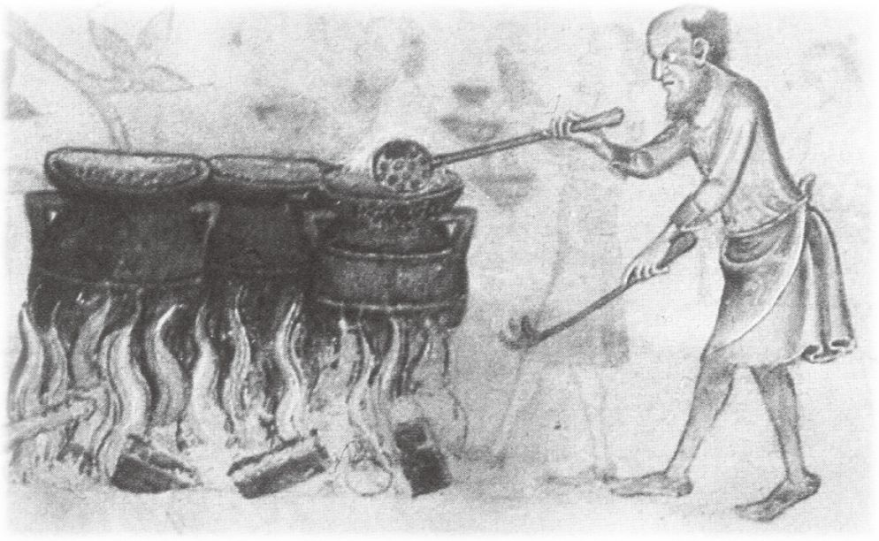
有名なのは１５７０年ノブゴロド市民に対して、
「市民がこの都市をポーランドに明け渡そうとしている」
と皇帝が被害妄想に取り憑かれたことから行われた復讐だ。
５週間に渡って、何千人という市民が犠牲になった。笞で打たれ、弱火の上で火あぶりになり、氷の下に押し込められて殺された。また皇帝は皇太子と一緒に、モスクワに連行されたノブゴロド首相一家を餌食にした。絞首台から吊るされたビスカバティ首相のからだをナイフで細切れにして殺させた上、皇帝は未亡人を、皇太子は長女を強姦して殺した。
ピョートル大帝も、残忍なことでは先祖に勝るとも劣らない。人体解剖に興味津々で、浮気した愛人を斬首し、首の断面を臣下に見せながら組織の説明をしたり、また罪のない臣下の歯を抜いたりした。開腹手術をして相手が死ぬと不機嫌になったと言われる。
串刺し、細切れ、丸裸にして屋外に放置する凍死刑、最後は皇太子ですら何度も殴りつけて失血死させているから狂人と言っていいだろう。
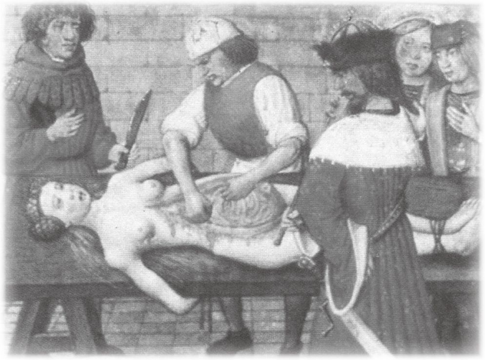
中世のロシアはまだ現在のような広範な領土を持たないモスクワの辺境国に過ぎなかった。そして歴代の皇帝は蛮行で知られた。背けばたちまち刑罰が待っていたが、重い重税や飢饉に苦しむ余り、何度も国民の反乱が起きている。
ステンカ・ラージンの乱は中でも規模が大きく、歴史にその名を残している。
最後は人心を失ったとはいえ、ラージンが英雄であったことには変わりがなく、ロシアではこの民謡のみならず、ラージンをたたえる歌が１００曲以上も残っているという。
ハワイ王朝最後の日々を悲しく彩る、先住民族の抵抗
アロハ・オエ
作詞／作曲：リリウォカラニ女王
訳：徳山
♪ やさしく かなずるは
ゆかしウクレレよ
ハワイの波しずか
夢をのせて揺るる
アロハオエ アロハオエ
こだまするあの調べよ
アロハオエ アロハオエ
さらばハワイよ
ハワイ王国滅亡にまつわる歌
１８９１年、ハワイ王国の７代目の王・カラカウアが病に苦しみながら亡くなった。持病のリウマチが悪化したのが原因だった。
リウマチは、膝などの関節に炎症が起こる病気で、悪化すると関節に肉芽ができ、それが軟骨に食い込んで軟骨、そして骨そのものを破壊する。そこまで来ると、激痛で患者は眠ることすらできない。
カラカウア王も亡くなる前の数日は、まるで地獄絵のような苦しみだったと言われる。
王を生前苦しめたのは、病ばかりではない。息を引き取る４年前に起こったクーデターも心配の種だった。それはアメリカ人が起こした王制廃止を訴える反乱だ。
当時、アメリカ人はハワイ王国の土地の大部分を買い占め、現地のハワイ人を労働者として酷使していた。さらに追い打ちをかけて反乱を起こし、王が議会の承認なしに政治に関与する権威を奪ってしまった。
ハワイ人とアジア人に選挙権がなくなれば、もはやハワイはアメリカ人のものになってしまったも同然だ。
結局、カラカウア王は王権を取り戻すという願いを果たすことはできなかった。
すぐに次の王として立ち上がったのは、カラカウア王の妹・リリウオカラニ女王。兄の意思を継ごうと意気込んでいたが、王になった直後に大きな悲劇が女王を襲った。愛する夫ジョン・ドミニスが兄と同じリウマチで死んでしまったのだ。
しかし悲しみに暮れている暇はなかった。女王はハワイ国を取り戻すために、ひとり立ち上がった。
女王はまず憲法の改正を試みた。国民に選挙権を取り戻そう、そして市民権のないアメリカ人からは選挙権を剥奪しよう、それが女王の狙いだった。女王に賛同する何千人もの国民が宮殿の前に集まり、デモを始めた。ハワイの国民も自国を守ろうと必死だったのだ。
しかしこの運動は逆効果になってしまう。アメリカ側が強気の行動に出たのだ。
ホノルル港に停泊していた米軍艦ボストン号から、１６０人ほどの軍隊が上陸して宮殿の周りは包囲された。軍艦の主砲は宮殿に向けられ、緊張が高まっていた。そしてアメリカ側によって臨時政府が立てられた。
しかしハワイ国民も屈することはできない。なんとしてでも愛する国を守らなければ、という思いは募っていた。そして臨時政府設立の翌年、今度は王政派のハワイ国民による反乱が起こった。
アメリカ側とハワイ国民の戦いは何日も続いた。
島には大きな銃声が鳴り響き、負傷者や死者の出る大騒動となった。
アメリカ兵は、ハワイ人を原住民と呼んで銃剣で串刺しにするなど、その攻撃がだんだん残虐の度を加えていく。ついに、反乱を起こしたハワイの国民が何百人も捕らえられた。彼らの多くは弾丸をからだに浴びていたり、腕や足を失っているなど、ひどく負傷していたが、治療もろくにされずに軍倉に放り込まれた。そしてついに、反乱の首謀者として疑いをかけられた女王も逮捕されてしまう。
「このままでは捕らえられた国民たちは殺されてしまう。でもこれ以上、無駄な血を流してほしくはない」
女王はそこで決心した。退位し王権を放棄したのだ。
１８９５年のことだった。
その後10カ月間、女王はイオラニ宮殿の２階の部屋に幽閉された。無念と失意に満ち、外に出ることもできない生活の中で、女王はパッチワークキルトを作り続けた。
唯一の慰めは、部屋の窓から海が見えることだった。海を眺めながら、女王は今は亡き自分の王国を想った。
アメリカ人によって、あっという間に占領されてしまったハワイ。土地を奪われ、奴隷のように使われた国民。その国民の反乱もむなしく、とうとうこの国の終わりが来てしまったのだ。
女王は悲しみの言葉を歌にのせ、口ずさみながらキルトを縫い続けた。
アロハ・オエ アロハ・オエ さらばハワイよ
女王にしかわからない本当の意味
穏やかなメロディーと自然を描く歌詞が印象的なこの歌。学生時代に歌った覚えのある人も多いのではないだろうか。
この歌の日本語訳詞はたくさんあり、ここで掲載されたもの以外にも、
山にかかる雲は雨を降らし
木々の間を通り過ぎていく
雲はまるで探しているかのよう
山に咲く花 レフアのつぼみを」
と、自然描写がより豊かなものもある。
作者はハワイ王国第８代にして最後の女王リリウオカラニで、幽閉中に作ったのではないかと言われている。
先ほど紹介した訳に出てくる「雨」をアメリカ人「花」をハワイ人と捉えると、女王の幽閉中の心情に一致するのだ。国を失ったことで、ハワイ国民というアイデンティティを失いつつあった国民に対するメッセージだったのかもしれない。
しかし、女王本人は生前、
「隠された意味はない純粋なラブソング」
と言っていたそうなので、この解釈は後づけかもしれない。
実際もうひとつの説として、若かりし頃の女王がある島で見た、少女と軍人の別れを歌った歌ではないか、という説もあるからだ。
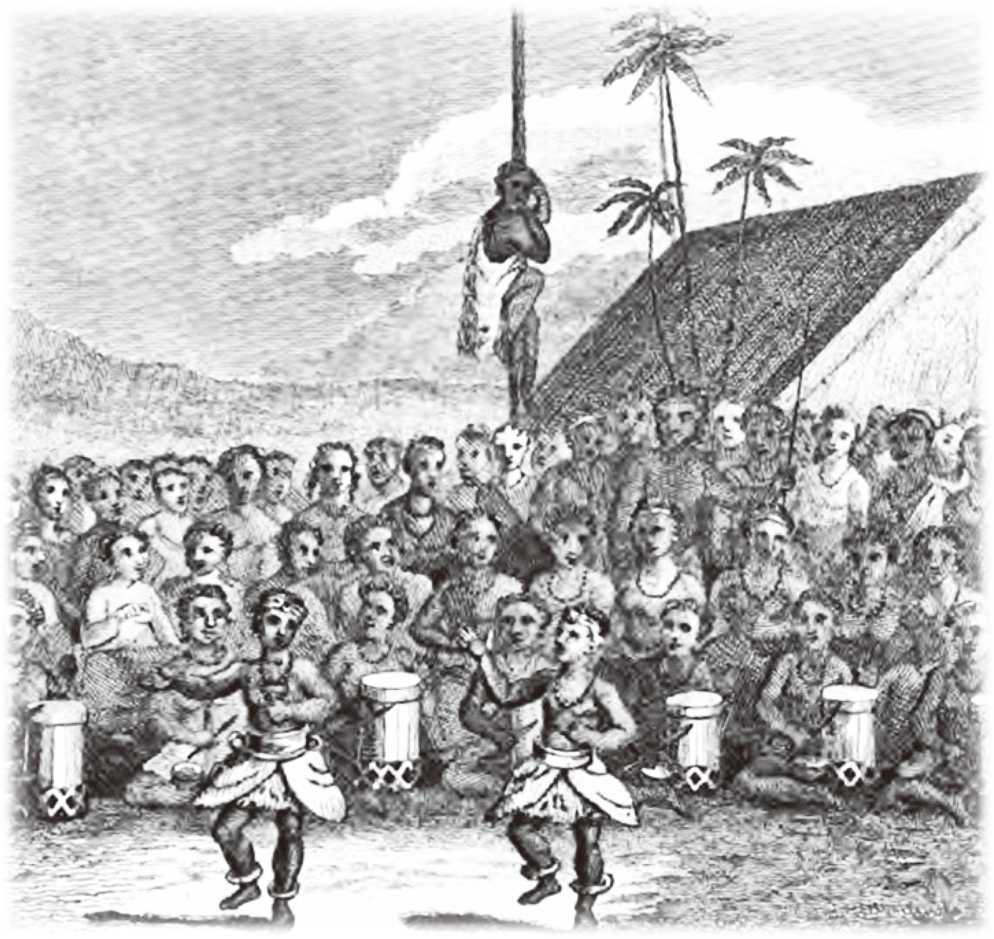
「レフアの花」は昔からハワイ人にとって貴重な花として大切に扱われているが、この花にはオヒアとレフアという男女の別れの悲劇が裏にあり、別れのラブソングとも十分考えられる。本当のところは、作詞作曲者である女王にしかわからない。
女王が幽閉中に作ったキルトは、今でもイオラニ宮殿の部屋に飾られ、鑑賞することができる。
ベトナム戦争中、ソンミ村で起こったことは誰にも話してはならない
グリーングリーン
作詞／作曲：バリー・マグワイア＆ランディ・スパークス
日本語訳：福島絵美
母さんぼくを止めないで
「明日の朝、家を出よう」
18歳の誕生日から１週間が過ぎた頃、チャーリーはそう決意した。机の引き出しから紙を取り出し、母親へ手紙を書き始めるが、最初の一文がどうしても書き出せない。
父親が死んで以来、母は看護士として働きながら、女手ひとつでチャーリーを育ててきた。
始めは母が夜勤で家を空けるたびに、ひとりぼっちの家が寂しかった。そんなときは、ソファーで眠ってしまうまで、毛布に包まってテレビを見て過ごしたものだ。底抜けに明るいコメディーやアニメを見ていれば、ひとりでいることを忘れられたから。
なんだか不穏な時代だった。
ケネディ大統領暗殺や、マーティン・ルーサー・キング・ジュニア牧師の暗殺、そして遠いベトナムで始まった戦争...。ときどき映るそんな暗いニュースは、ティーンになりたてだったチャーリーには非現実的でしかなかった。
だが成長するにつれ、終わりの見えないベトナム戦争は、ほかの多くの少年たちと同様、避けては通れない道となってチャーリーの未来に立ちはだかった。
ベトナム戦争が始まってからすでに10年。
戦闘地域に入ったジャーナリストたちによるスクープ映像や、戦場での惨劇の写真や記事がリアルタイムに流され、世論は泥沼化した戦争とアメリカ軍の行動に懐疑的になっていた。
卒業間近となったチャーリーのハイスクールでも、毎週のように反戦運動が行われ、反戦派と少数の賛成派とが、クラスで議論を交わすようになった。
「ベトナム戦争なんて、ソ連とアメリカの代理戦争でしかない」
「だからこそ、アメリカの威信をかけて挑むべきなんだ」
「そんな意地の張り合いに巻き込まれて、人殺しをするのも、されるのもごめんだ」
そんな議論は延々と繰り返されたが、最終的にはいつも徴兵の話にいき着いた。
18歳になれば選抜徴兵登録が義務となり、いよいよ戦争が現実となる。選抜徴兵では、召集されるかどうかは運次第。とはいえ、戦況が激化した２年ほど前からは、登録者のほぼ全員が召集されていた。
チャーリーの仲間には、徴兵猶予のためだけに大学進学を選ぶ者や、召集令状が送られてこないよう、ホームレスになる者さえいた。
だが、それも無理はない。ニュースや新聞で語られるベトコンのゲリラ作戦は凄まじいものだった。そしてチャーリーの脳裏には、ニュースで見た「ソンミ村の虐殺」の映像が焼きついて離れなかった。
１０５人のアメリカ兵によって、のどかな集落の村人５０４人が残虐きわまりない方法で殺されたこの事件。ある出産間近の妊婦は強姦されたのち、腹に銃剣を突き刺され、胎児が飛び出るまで腹を踏みつけられた。そのかたわらで泣き叫ぶ子供たちも、容赦なく射殺された。
若い少女たちは次々と輪姦されたのちに射殺され、中には粉々になった骨が空中に飛ぶまで撃たれ続けた少女もいる。米兵は完全に村を焼き尽くし、水牛や牛などの家畜まで殺してから立ち去った―虐殺の様子を写したおぞましい写真を流しながら、キャスターは淡々とニュースを読み上げた。番組が終わったあとも、チャーリーはその想像を絶する光景に呪縛されたかのように、しばらくソファーから動くことができなかった。
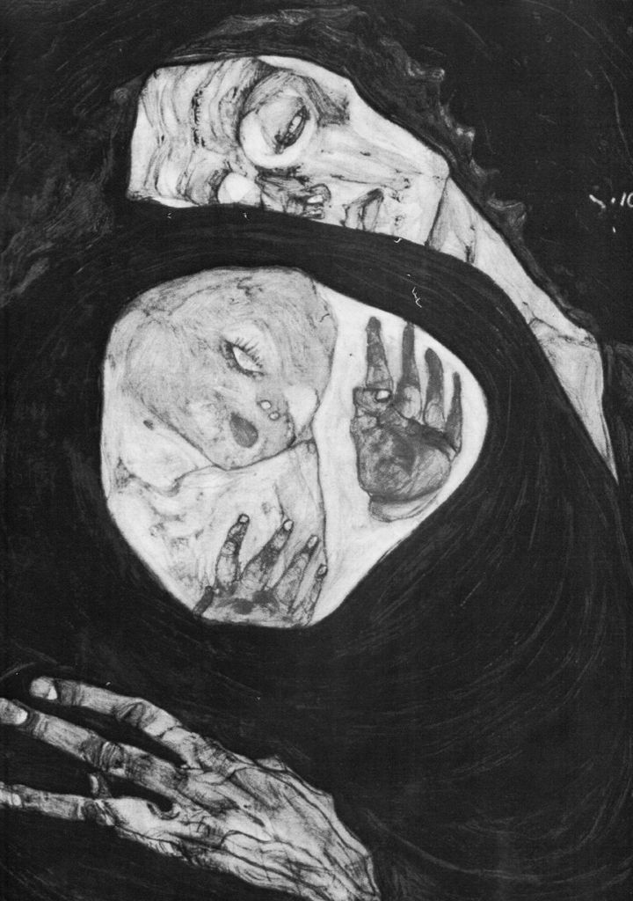
そして生々しい虐殺の光景は、悪夢となってチャーリーを苦しめた。耳を裂くような爆音とともに炸裂する砲弾、けたたましく鳴く家畜に混じって聞こえる村人たちの叫び声...。村民たちは退避壕や家から出ていくそばから射殺され、死体が折り重なっていく。退避壕には爆薬が放り込まれ、粉々に粉砕した死体が壕から飛び散る。
「逃げるんだ！ 早く！」
夢の中でチャーリーは叫ぶが、誰も彼の声を聞くことはない。
道路に積み重ねられた死体の山からは苦痛にうめく無数の声が聞こえ、溝や水田から溢れた血が小道にどろどろと流れ出している。
ふとチャーリーの足元に、ごろりと子供の頭が転がってくる。口には食べかけの芋をくわえたままだ。チャーリーは動こうとするが、うしろから両足をつかまれる。振り返ると、頭のない子供が小さな手でしっかりと足首をつかんでいる...。
チャーリーはいつもここで、滝のような汗をかいて目覚める。そして同じ悪夢を１週間ほど見続けた頃から、スーパーや街角でふと、人びとに混じって村民の姿が見えるような気がして恐怖に足がすくむようになった。
「頭がおかしくなりそうだ...」
チャーリーの心は次第に決まっていった。ベトナムに行けば、本当に発狂してしまう。人を殺すぐらいなら、喜んでホームレスになろうじゃないか...。
「母さん、どうか泣かないでくださいー」
チャーリーは机に向かって座り直し、手紙を書き始めた。
ヒッピー文化の発祥につながるメッセージ
日本ではあまり知られていないが、「グリーングリーン」の原曲は、アメリカの10人組フォーク・グループ「ニュー・クリスティ・ミンストレルズ」によるポップ・ソングである。
原曲には「パパ」の代わりに「ママ」が登場し、哀愁を軽い冗談でごまかすような、日本版とはひと味違ったもの悲しい雰囲気が漂っている。
ちなみに、日本語版の歌詞を作ったのは、「勇気ひとつを友にして」で知られる作詞者の片岡輝。当時の日本の歌には少なかった、父親と子供が心を通わせるような曲にしたかったのだそうだ。
さて、オリジナルの「グリーングリーン」がリリースされたのは、１９６３年４月のこと。マーティン・ルーサー・キング・ジュニア牧師が歴史的な「I have a dream（私には夢がある）」の演説を行った一方で、アメリカが本格的にベトナム戦争に介入した年でもある。
公民権運動とベトナム戦争は、若者にそれまでの価値観に疑問を抱かせ、その疑問はやがて「何にも縛られずに自分らしい生き方をしよう」という、後のヒッピー的思想に結びついていく。
誰にも理解されなくても、放浪して自分らしく生きるのさ...グリーングリーンには、ヒッピーを先駆けたそんなメッセージが込められている。
さて、その後'60年代後半に一大ムーブメントを起こしたヒッピーだが、彼らの中心は、愛と平和を訴え徴兵や派兵に反対する若者たちだった。また、世界を震撼させたソンミ村の虐殺は、世論を反戦ムードに導くのを恐れた米軍が、当初はベトコンのゲリラ部隊との戦いだと報道。真相が明かされたのは、事件から実に18カ月後のことだった。
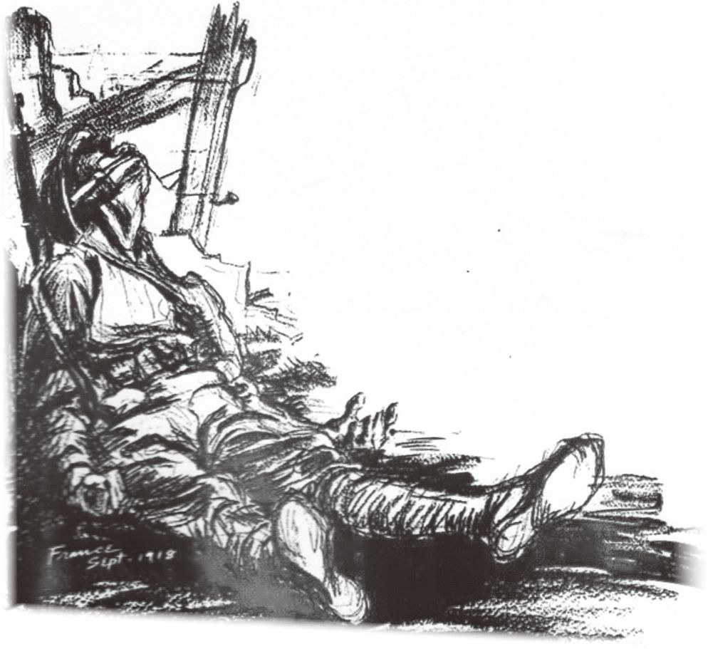
Ｃｏｌｕｍｎ３
フランスの国歌は世界一血生臭い！
♪ ラ・マルセイエーズ
作詞／作曲：ルージェ・ド・リール
皆殺しの挽歌
「花の都パリ」にクロワッサン、ワインにファッション、「フランス」には華やかなイメージがつきものだ。ところが、フランス国歌「ラ・マルセイエーズ」をひとたび聴けば、そんなイメージもたちまち吹っ飛んでしまう。
とにかく歌詞があまりにも残酷なのだ。
「ラ・マルセイエーズ」といえば、闘志をもり立てるようなメロディーが特徴。ビートルズの「All You Need Is Love」（邦題「愛こそはすべて」）のイントロに使われている曲、といえばピンとくるだろうか。そしてその勇ましい旋律には、残酷で挑戦的な歌詞がつけられている。一部を紹介しよう。
いざ祖国の子らよ、栄光の日は来た！
我らに向かって、暴君の血塗られた軍旗は掲げられた！
血塗られた軍旗は掲げられた！
聞こえるか、戦場で
あの獰猛な兵士どもが唸るのを？
奴らは我々の腕の中まで
我らの息子や仲間を殺しにやって来る！
武器を取れ、市民諸君！
隊伍を整えよ！ 進もう！ 進もう！
不浄な血が我々の畝溝に吸われんことを！
フランス人よ、寛容な戦士として
打撃を与えるか控えるかせよ！
あの痛ましい犠牲者たちは容赦せよ
心ならずも我らに武器をとる犠牲者たちは
しかしあの血みどろの暴君どもは
しかしあのブイエ将軍の共謀者どもは
すべてこの虎どもは、情け容赦なく
その母の胸を引き裂くのだ！
グロテスクな描写満載の歌詞は、幼い子供たちが無邪気に歌うところを想像するとゾッとしてしまう代物だが、それも無理はない。この曲が誕生したのは、あの血生臭いフランス革命の真っただ中のことなのだから。
１７９２年。それは革命勃発から３年目、ちょうど外国の反革命勢力が本格的に干渉してきた年でもあり、フランス全土はまさに動乱の最中にあった。
フランスはオーストリアに対する戦争に重ねて敗戦。ジリジリと迫りくるオーストリア軍から首都を防衛するため、そして革命を支援するため、議会は全国から義勇兵を集め、その軍団をパリ郊外に創設することを決定していた。
マルセイユ市の書記官、そしてジロンド派（穏健共和派）の政治家でもあるシャルル・バルバルーは、近隣のモンペリエではすでに義勇兵の登録が定員に達したことを知ると「マルセイユでも、すぐさま登録を」と発心。
さっそく、モンペリエ義勇部隊の指導者であるフランソワ・ミルールに連絡を取り、マルセイユ部隊とモンペリエ部隊を、ともにパリへ行軍させることを提案した。
行軍についての打ち合わせのため、マルセイユに招待されたミルールは、その歓迎の宴の途中、聞いて覚えたばかりの革命歌を勇ましく歌い上げた。
「いざ祖国の子らよ、栄光の日は来た！ 我らに向かって、暴君の血塗られた軍旗は掲げられた！」
バルバルーは、その勇ましい旋律と歌詞に感激した。そして、それが前線へ出発するライン軍のために、ストラスブールの工兵大尉が書き上げた「ライン軍のための軍歌」であると知ると、宴に同席していた新聞記者に歌詞を書き取らせ、新聞に掲載させた。
さらに、兵たちの士気を高めるため、義勇兵全員に歌詞を暗記させた。
そして７月２日、バルバルー一行はパリへと出発。
８００キロという長い道のりの間、旅の先々で歌を聞かせるうちに、しだいに彼らが歌う「ライン軍のための軍歌」は「ラ・マルセイエーズ（マルセイユ人の歌）」と呼ばれるようになる。
そして７月29日、ようやく到着したパリでは、一行の到着を待っていた議員やパリ市民の前で「ラ・マルセイエーズ」を披露、場は熱狂の渦に包まれた。
折しもバルバルーたちが到着した時期、「王制の打倒こそ、唯一の解決策だ」と信じる民衆たちが、示威行為を繰り返していた。
「『王』と呼ばれている男と、悪党どもを王宮から追い出しましょう」
そうパリの義勇兵から計画を打ち明けられたバルバルーは、王制転覆に力を貸すことを約束。そして８月10日の早朝、バルバルー率いる連邦兵は、ついにルイ16世とマリー・アントワネットが住むテュイルリー宮殿へと向かった。つき従う民衆を含めると、総勢２万人以上の大集団だ。
一方、民衆の隆起を予知していたルイ16世のもとでは、国王に忠誠を誓った９５０名のスイス人傭兵が宮殿を警備。加えて、パリから選抜された国民衛兵隊２０００名が集まっていた。だが、群衆の雄叫びや歓声が王宮を取り囲むのを聞き、恐れおののいたルイ16世は
「立法議会に逃げ込むしかない」
と悟り、一家全員で議会に避難するべく宮殿を去った。
国王一家が去ると、国民衛兵隊たちは次々と脱走して隆起側に寝返ったが、スイス人傭兵らはあくまでも命令に忠実、隊列を強いて待ち構えた。
バルバルーの戦略により、ルーブル宮殿やセーヌ川側の入り口から侵入したマルセイユ連邦兵たちは、王宮の中庭で攻撃を開始。スイス人傭兵は激しく防戦するが、あらゆる方向から侵入する連邦兵に押され始める。
ドーン、地響きとともに大砲が射撃されると、スイス人傭兵は命からがら宮殿内に退く。
だが、連邦兵と武装した群衆とが入り交じっての攻撃の前では、もはや勝ち目はなかった。
午前10時、宮殿が制圧されると、ルイ16世は発砲の停止を命令した。
スイス人傭兵のほとんどはすでに死んでいたが、それでも怒りと興奮の収まらない群衆たちは、降伏した傭兵たち60人を虐殺。むせ返るような血の匂いの中、群衆はさらに、手当たりしだいに家具や絵画を壊していった。
自分たちから搾りとった税金で極められた贅に、憎しみをぶつけたのだ。
「神聖な祖国愛よ、我らの懲罰の手を導き、支えたまえ！」
マルセイユ連邦兵が「ラ・マルセイエーズ」を歌い出すと、怒りに任せて蛮行を行う群衆たちにも、やがて祝福ムードが広がっていった。
「自由よ、愛しき自由よ、君の擁護者とともに闘いたまえ！」
喜びいさむ群衆とともに、バルバルーも歌う。連盟兵と民衆合わせて４００人近くが死傷するという犠牲は払ったものの、ついにブルボン王朝が終わりを告げたのだ。
その後、スイス人傭兵たちの血まみれの死体は「ラ・マルセイエーズ」を歌う民衆たちの手によって運ばれ、革命の勝利の証しとして宮殿前の広場や庭園、セーヌ川の土手に並べられた。
さて、王宮奪取により革命も終焉を迎えるかと思われたが、その後もフランスは血みどろの歴史を歩んだ。
９月２日にパリの監獄で起こった「９月虐殺」では、９日間で約１万４０００人の囚人が市民の手で虐殺され、１９９３年６月から１９９４年７月まで続いた恐怖政治では、毎日数十人がギロチンで処刑された。
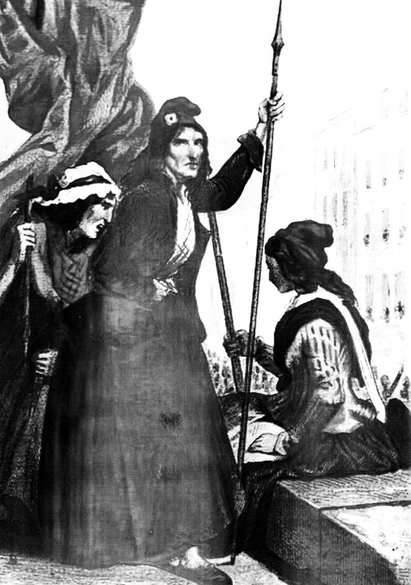
１年余りの間に１万６０００人が処刑され、裁判なしで惨殺された者を含めれば、その数は約４万人にも上るとみられている。まさに「ラ・マルセイエーズ」の歌詞と同じようなエグい情景が、日常的に繰り返されていたのである。
ちなみに、「ラ・マルセイエーズ」は１７９５年に正式に国歌に採用されたものの、ナポレオン帝政から王政復古にかけては、「暴君を倒せ」という内容が危ぶまれ、「国歌が禁止される」という妙な事態が発生していた。そして現在でも、子供たちに歌わせるには歌詞が過激過ぎる、また、周辺国への敵意丸出しの歌は国歌に相応しくないという意見が絶えない。
歌詞を作り直そうという動きはあるものの、結局変更されないまま現在に至っている。
Ｓｐｅｃｉａｌ Ｔｈａｎｋｓ
表紙協力
エリン・マクファデン（Erin McFadden）
カナダ在住のアーティスト。絵画から映画制作まで様々な芸術活動を行っている。現在は不気味でグロテスクな人形、「ホラードールズ」をオンラインで販売中。ひとつずつが手作りのためそれぞれ表情などが若干異なるが、どれも怖さは保証つき。サイトからオンラインで日本からも注文可能。
http://www.dollydeparted.etsy.com
取材・執筆協力
永田衣緒菜、福島絵美、吉村文応
翻訳協力
小川光穂
本文イラスト
ＴＯＭＯＹＡ
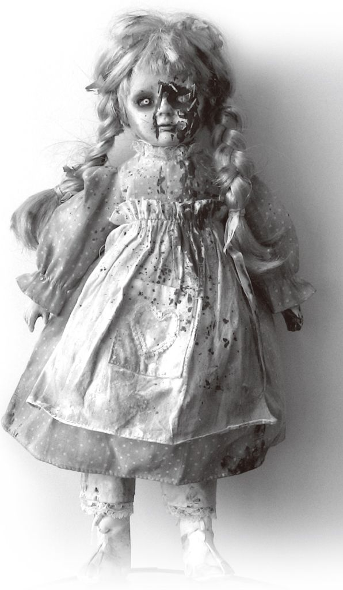
参考文献・ＵＲＬ
『ロシア皇帝歴代誌』 デヴィッド・ウォーンズ著・栗生沢猛夫監修 創元社
『イヴァン雷帝』 アンリ・トロウイヤ著・工藤康子訳 中央公論社
『歌になった「にっぽん昔話・伝説」の謎』 合田道人著 幻冬舎
『案外、知らずに歌ってた 童謡の謎』 合田道人著 祥伝社黄金文庫
『童謡の秘密 知ってるようで知らなかった』 合田道人著 祥伝社
『日本民謡集』 町田嘉章・浅野建二編 岩波文庫
『わらべうた 日本の伝承童謡』 町田嘉章・浅野建二編 岩波文庫
『日本童謡集』 与田準一編 岩波文庫
『日本唱歌集』 堀内敬三・井上武士編 岩波書房
『謎とき名作童謡の誕生』 上田信道著 平凡社新書
『マザー・グースの唄』 平野敬一著 中公新書
『日本の昔話』 柳田国男著 新潮文庫
『「童謡」の摩訶不思議』 日本童謡の不思議研究会編 PHP研究所
『民衆の哀歌 ロシアの泣き歌』 中堀正洋著 東洋書店
http://avantgarde0721.gozaru.jp/kagomekagome.htm
http://www.shojoji.net/
http://www2r.biglobe.ne.jpyouzan/ja016.htm
http://www.alpha-net.ne.jp/users2/kwg1840/uta.html
http://www.henryzecher.com/grandfather_clock.htm
http://www.worldfolksong.com/
http://www.alpha-net.ne.jp/users2/kwg1840/uta.html
http://mothergooseclub.com/rhymes_parent.php?id=133
http://medlibrary.org/medwiki/London_Bridge_is_Falling_Down#cite_note-Clark2002-2
http://www.historic-uk.com/HistoryUK/England-History/GreatPlague.htm
http://www.cc.kyoto-su.ac.jpkonokatu/nakano (05-1-31)
http://www.aozora.gr.jp/cards/001529/files/546_21324.html
http://blog.hix05.com/blog/2008/10/_my_mother_has_killed_me.html
http://p-sight.net/texts/fair/juniper.htm
http://my.reset.jpcomcom/sozai/large/nezuno_ki.pdf
http://membrane.jugem.jp/?eid=50
http://www.ffortune.net/calen/xmas/saint/lucia.htm
http://pinkchiffon.web.infoseek.co.jp/secretgarden78.htm
http://www.mamalisa.com/?t=hes&p=1411&l=J
http://www.famousquotes.me.uk/nursery_rhymes/jack_and_jill.htm
http://www.suite101.com/content/possible-origins-of-jack-and-jill-a67375
http://www.wellho.net/share/kilmersdon.html
http://www.geocities.jp/mothergoosesocietyjp/csnr2.html
http://eclipse.rutgers.edu/goose/rhymes/rarr/
http://eclipse.rutgers.edu/goose/rhymes/rarr/http://www.phrases.org.uk/meanings/ring-a-ring-of-roses.html
http://childrenart.nobody.jp/Rackham_mother1.htm
http://www.channel4.com/history/microsites/H/history/plague/story.html
http://www7a.biglobe.ne.jpmonadon/books150.htm
http://www.henryzecher.com/grandfather_clock.htm
http://www.worldfolksong.com/
http://www.aritearu.com/Influence/Native/Nativeword/GhostDance.htm
http://www.geocities.co.jp/Milano-Cat/3878/maza/riji-01.html
http://www5b.biglobe.ne.jpmadison/murder/text/borden.html
http://dark-sky.cocolog-nifty.com/blog/2006/07/post_1584.html
http://www.law.umkc.edu/faculty/projects/ftrials/LizzieBorden/
sullivantestimony.html
http://www.somethingawful.com/d/movie-reviews/curse-lizzie-borden.php
http://www1.cablenet.ne.jp/katsura/nazo/nazo_a2.html
http://www.youtube.com/watch?v=kBIcWr1-rZk
http://www.historicomaha.com/upmusm.htm
http://cprr.org/
http://nezu621.blog7.fc2.com/blog-entry-406.html
http://62145040.at.webry.info/200705/article_45.html
http://aloha.yopi.vc/culture/alohaoe.html
http://www.huapala.org/Aloha/Aloha_Oe.html
http://ja.losts.net/%E3%82%A2%E3%83%AD%E3%83%8F%E3%83%BB%E3%82%AA%E3%82%A8
http://www.uraken.net/rekishi/reki-sekai003.html
http://www.legendaryhawaii.com/history/hist01.htm
http://www2s.biglobe.ne.jpnippon/jogbd_h14/jog226.html
http://www.mo-hawaii.com/legacy/go/time/015/index.html
http://d.hatena.ne.jp/aloha_mode/20080902/p1
http://www.ff.iij4u.or.jpnyan/song/page046.htm
http://meta-metaphysica.net/lit/lamars.html
http://plaza.rakuten.co.jp/bourgognissimo/diary/200502230000/
この電子書籍は株式会社G.B.「本当は怖い世界の童謡」（２０１１年４月５日初版発行）に基づいて制作されました。
本当は怖い世界の童謡
発 行 ２０１１年８月11日
監 修 桜澤麻衣
編 集 瀬戸環、森本順子
デザイン・ＤＴＰ G.B.Design House
営業責任者 玉木尚
編集人 坂尾昌昭
発行人 瀬戸龍哉
発行所 株式会社G.B.
〒１０２―００７２
東京都千代田区飯田橋４―１―５
TEL 03-3221-8013
FAX 03-3221-8815
http://www.gbnet.co.jp
JASRAC 1102900-101
© G.B.Company 2011